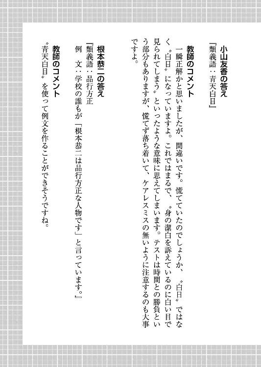
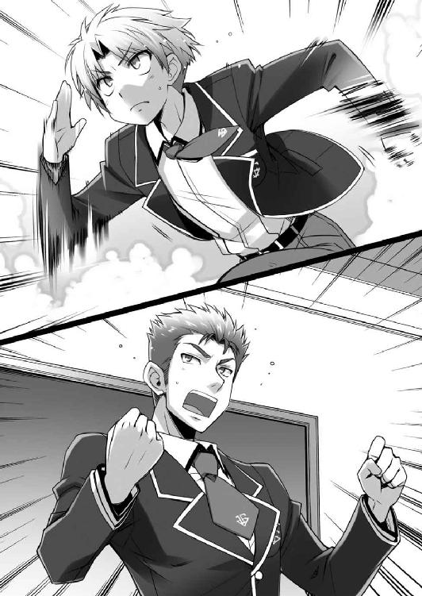
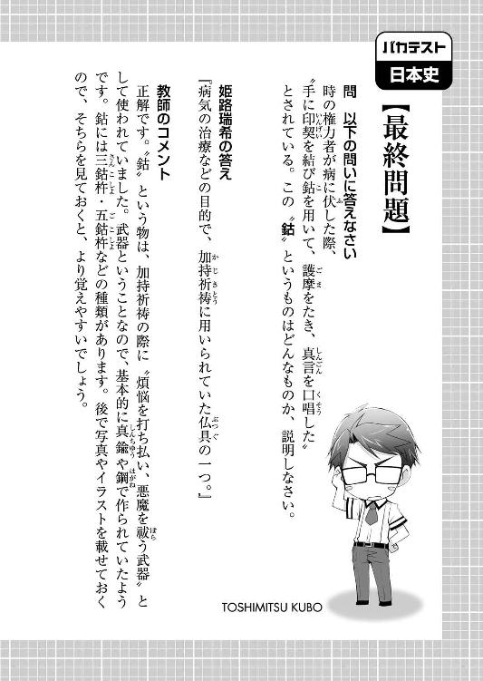

| バカとテストと召喚獣 09 | |
| 井上堅二 | |
| KADOKAWA / エンターブレイン (2012) | |
本作品の全部または一部を無断で複製、転載、配信、送信したり、ホームページ上に転載することを禁止します。また、本作品の内容を無断で改変、改ざん等を行うことも禁止します。
本作品購入時にご承諾いただいた規約により、有償・無償にかかわらず本作品を第三者に譲渡することはできません。
本作品は本文縦組で制作されております。ごらんになるリーディングシステムにより、表示の差が認められることがあります。
「なんだ？」
「......昨夜一緒に暮らしたはずなのに、同棲って感じがしなかった」
「そりゃまぁ、な。よく考えてみたら、手足を縛られてお前の家に拉致されるなんていつものことだ。今更新鮮味なんかないだろ」
「......だから、今日からは私が雄二の部屋で暮らす」
「わかった。じゃあ俺はお前の部屋で暮らそう」
「......雄二が私の部屋で、私の服を着て生活するの？」
「いや待て。そこは着替えを持ち込ませろ」
「？？？ ......靴下なら、私の部屋にもたくさんあるけど」
「なんで靴下限定なんだ!? そこはどう考えてもズボンや下着類だろ!?」
「......私は、雄二のパンツやブラでも平気」
「俺は平気じゃねぇんだよ！ それと、さも俺がブラを持っているかのような物言いはやめてもらおうか！」
「......雄二は下着をつけないの？」
「上はな！ 下は穿いてるに決まってんだろ！」
「......どれどれ？」
「どれどれ、じゃねぇ！ なに自然な流れを装って脱がそうとしてんだよ！」
「......幼なじみの私には、雄二の成長を確認する義務がある」
「成長の確認もクソもねぇ！ 定期的に俺の裸を見て記録しているわけじゃないんだから、確認なんてしようが――」
「..................」
「おい待てなぜ黙る」
「......今日のＦクラスは試召戦争の続きをやるの？」
「なぜ強引に話を変える」
「......Ｃクラスに、勝てそう？」
「く......っ！ 都合の悪い話は聞こえないフリしやがって......！」
「......夫婦の間でも、言えないことはある」
「夫婦じゃねぇってツッコミにはもう疲れたな......」
「......それで、どうなの？」
「ん？ 試召戦争か？」
「......うん」
「勝てる勝てないじゃない、勝つんだよ。こんなところで躓いているわけにはいかないからな」
「......頑張って。雄二たちなら、きっと勝てる」
「おう、サンキュ――って、随分と素直に応援してくれるもんだな。俺たちの最終的な狙いは知ってるんだろ？」
「......雄二は今回もＡクラスを狙っているの？」
「当然だ。次こそは勝ってやる」
「......そう」
「首を洗って待ってろよ。手加減はしねぇからな」
「......それはいいけど――」
「いいけど、なんだよ？」
「――雄二こそ、次負けたらどうなるかわかってる？」
「..................ははっ。足が震えてきやがった......。これが武者震いってヤツか」
「......二度負けたら、覚悟を決めてもらうから」
「ぐ......っ！ ま、負けねぇよ！」
「......その為にも、Ｃクラス戦頑張って」
「なんか複雑な気分だが......。まぁ、頑張るさ。試召戦争の勝利は俺たちの悲願だからな」
「......Ｃクラス戦だけは、応援してあげる」
「おう。ありがとうな」
「――ところで翔子。さっきの成長の確認の話だが」
「......私、今日の日直だった」
「おおぃっ！ まさか本当に定期的に確認してんじゃねぇだろうな!?」「雄二。おはようじゃ」
新校舎に行く翔子と別れて旧校舎の廊下を歩いている途中。俺の耳に聞き慣れた声が響いてきた。
「おう、秀吉か。おはよう」
振り返ると、そこにはいつもつるんでいるクラスメイトの一人――木下秀吉の姿があった。
「今日は良い天気じゃの」
窓の外を見て目を細める秀吉。正直、その顔は女子のそれにしか見えないが、これでも歴とした男だ。とは言っても、俺も最近たまに秀吉が本当に男なのかどうか疑わしく思うことがあるが。
「......今一瞬、最後の砦すらも壊されたような気がしたのじゃが......」
「気のせいだろ。疲れてるんじゃないのか？」
「むぅ......。そうじゃろうか」
こういうところで勘が鋭いのは女の特徴だった気がしなくもない。
「それにしても雄二よ。昨日は災難じゃったな」
そう言って秀吉が苦笑を浮かべる。昨日の災難って言うとあれか。妙な告白もどきのせいで、嫉妬に狂ったＦクラスの連中に追い回されたことか。
「ま、災難と言えば災難だが、追い回されるのは慣れているからな」
「それもどうかと思うのじゃが......」
そう言われても、慣れているものは仕方がない。
「むしろ俺たちが追い回されたことなんかより、今日の試召戦争の方が心配だ。随分と戦力が削られたからな」
「なにせ、同士討ちじゃったからの」
おかげでただでさえ少ない戦力が更に減ってしまった。相手は上位のＣクラスだというのに、こちらは消耗している。言うまでもなくかなり不利な状況だ。
「今日の俺たちの勝負は我慢の状況が続くことになる」
「我慢の状況というと？」
「前半はずっと守りを固める予定だ。補充と勝負を繰り返すキツい展開になるな」
「補充と勝負の繰り返し......。それは気合を入れねばならんな」
補充などといっても、つまるところはテストだ。体力も精神力もかなり消耗するだろう。皆にはモチベーションを上げて頑張ってもらいたいところだ。
「そういや秀吉。お前の古典、随分点数が上がっていたな」
「ああ、あれはじゃな。次の演目で源氏物語があっての――」
なんて話をしながら階段を上って、我らがＦクラスの教室が見えたところで、
「んむ？ あれはムッツリーニじゃな」
「お。そうだな」
そのＦクラスの教室に入ろうとしているムッツリーニこと土屋康太を見つけた。
その性に対する飽くなき探求心が高じて、保健体育という科目に於いては比肩するものがいないほどの実力者。総合点数は低くとも、一点集中の突破力がある頼もしい仲間だ。
「アイツにも今日は頑張ってもらわないとな」
「ムッツリーニの保健体育には誰も敵わんからの」
「ああ。ありがたい貴重な戦力だ」
なんて話を秀吉としながらムッツリーニに近づく。
「おす、ムッツリーニ」
そして、肩を叩いて挨拶をした。
「..................」
が、なぜか反応のないムッツリーニ。......うん？
「どうした？ 何か――」
あったのか、と続けようとしたところで、
「..................（ブシャァアアアッ）」
ムッツリーニが盛大に鼻血を噴いて倒れた。
「大事な戦力がぁーっ!?」
うぉおいっ!? これは一体どういうことだ!? 毒か!? トラップか!?
「くそっ！ 誰がムッツリーニを殺りやがったんだ！」
ムッツリーニの亡骸を踏み越えて「............踏む必要は......無いはず............」教室内に入る。
するとそこには、
「あ、あの、美波ちゃんっ。そろそろ手を」
「（むにむにむに）ホント、おっきいわよね～。何を食べたらこうなるのかしら」
「普通のご飯ですっ」
姫路の胸を揉みしだく島田の姿があった。
「........................お前らは、朝から何をやっているんだ............」
「あ、坂本。おはよ」
「坂本君、おはようございます」
島田と姫路がこちらに気付いて朝の挨拶をしてくる。......ムッツリーニが倒れたのはこのせいか......。
「何をしてるって、ちょっとしたコミュニケーションだけど？」
「そのちょっとした行為で仲間が一人瀕死になっているんだが......」
「その仲間を更に踏んだお主もどうかと思うが......」
まったく。ムッツリーニにこういった刺激は厳禁だというのに。
「して、なにゆえそのようにけったいなコミュニケーションをとっておったのじゃ？」
「ん～......大した理由じゃないんだけどね」
と言いながら姫路の机の上に視線を移す島田。
「瑞希が登校するなり凄い勢いでテスト勉強をしてるから、リラックスさせてあげようかと思って」
「お気遣いは嬉しいんですけど、できれば別の方法が良かったです......」
見てみると、姫路の机の上には参考書や問題集が広がっていた。なるほど。朝の時間でこれほどやっているところを見ると、かなり気合が入っているようだ。試召戦争中のクラスの代表としては、こういった行動はとてもありがたい。
「すまないな姫路。お前がそうやって頑張ってくれるのはかなり助かる」
以前勉強会をやってわかったことだが、姫路は天才というよりは努力で伸びる秀才のタイプだ。そういう人間が努力している姿というものは、周りにやる気を起こさせる。レベルの高い外見と相俟って、他の連中（主に野郎どもだが）も不平を漏らさず頑張ってくれることだろう。
「今日は特に頑張りますっ」
しかも、島田の気遣いのおかげか、それとも元からかはわからないが、姫路は気負った様子もなくやる気に満ち溢れている。気負いがなく緊張感のある状態。勝負事におけるベストコンディションと言えるだろう。
「すまないな姫路。――ほら。お前らも時間があるなら姫路を見習って補充試験の準備でもしてくれ。現状の持ち点だけじゃ勝ち目がないんだからな」
「「「りょうかーい」」」
丁度良いので、姫路をだしに皆に発破をかける。
しかしまぁ、この俺がクラスメイトに「勉強しろ」なんて台詞を吐く日が来るとは夢にも思わなかったな......。
☆
そんなさっきの会話から二十分程度が経過して、朝のＨＲが始まる十分前。
クラスメイトの点数と出欠を確認していると、ふとあることに気が付いた。
「そういや、明久がまだ来てないな」
「明久？ 確かにまだ来ておらんようじゃな」
隣に座ってテスト勉強をしていた秀吉が俺の呟きを聞いて顔を上げる。
そろそろクラスの面子がだいたい登校してきたかという時間だというのに、あのバカの姿は見当たらない。普段はともかく、試召戦争当日ともなれば準備の為にそろそろ登校してきていても良さそうなもんなんだが。
「アキってば、寝坊かしらね」
明久の名前が出たせいか、島田が会話に加わってきた。
「寝坊か......。そうなのか、姫路？」
近くの席でテスト勉強をしている姫路に問いかける。それを聞いて、島田がピクリと反応していた。
「いえ。寝坊ではないんですけど――」
「......そう言えば、有耶無耶になってたけど瑞希ってアキと一緒に暮らしてるのよね。ねぇ瑞希、ちょ～っと詳しい話を」
「まあまあ、落ち着くのじゃ島田。家には明久の姉もおるし、何より相手はあの明久じゃ。何かあるわけなかろう」
「それはまぁ、そうだけど......」
隣で島田が妬ましげな声を出しているのを秀吉が宥めていた。ナイスだ秀吉。また厄介な話を蒸し返されて、昨日の騒ぎの再来、なんて事態は御免だからな。
「えっと......明久君は風邪を引いちゃったみたいで......。今日はお休みなんです」
「え？ アキが風邪？ ホントに？」
「はい」
島田と一緒に俺まで一瞬聞き返しそうになった。風邪で試召戦争を欠席？ 明久が？
「あのバカが風邪程度で試召戦争を欠席するとは思えないんだがな」
「............同感」
いつのまにか隣に来ていたムッツリーニも頷いている。
普段から粗食で鍛えているだけあってアイツは身体が丈夫だし、しかも今日は大事な試召戦争の日だ。悲願達成の為の足がかりとなる重要な日に、あのバカが風邪ごときで学校を休むとは到底思えない。
「少なくとも、雄二にメールの一通程度はあっても良いとは思うのじゃがな」
秀吉の言う通り、参加できないならできないで、連絡の一つくらいは寄越してくるだろう。多分、『死んでも絶対に勝て』といった内容のものを。それすらも無いということは、意識が無いくらいの重体なんだろうか。だが、一緒に暮らしている姫路が普通に登校してきたのだから、そこまでの大事には至っていないだろう。重体なんてことになっていたら姫路のことだ、学校を休んで明久の傍から離れないに決まっている。
となると、考えられる要因は一つ。「バカ野郎が......。あれほどメシには気をつけろと言っておいたのに......」
「断り切れんかったのじゃな......。不憫な......」
「............合掌」
原因は姫路の手料理だろう。風邪なんかよりもそちらの方がよほど説得力がある。
「だが、明久の強みは『いなくなっても戦力が減らない』という点だ。問題はない」
「それは『いても戦力にならない』という言葉と同義じゃと思うが......」
などと、口では言っておく。
正直なところ、ヤツの攻撃力はともかくとして、召喚獣の扱いの巧さによる回避にはそこそこ期待していた。あんなバカでも、いるのといないのとでは作戦の成功率に差が出るのだが......そんなことを言ったところで意味がない。余計なことを言って皆の不安を煽る必要はないだろう。
クラスの中を見回すと、明久以外のメンバーはだいたい揃っていた。時間も時間だし、そろそろか。
もう一度教室内を見回してから、俺は立ち上がって教卓の前に歩み出た。
「よしお前ら、作戦説明を始めるぞ！」
皆に聞こえるように大きく声を出す。
試召戦争は九時から再開される。あまり時間がないので手短に説明する必要がある。
「今日の作戦の肝は補充試験だ。可及的速やかに昨日の騒ぎで失った点数を補充するぞ」
Ｃクラスの小山に仕掛けられた罠によって同士討ちが起こり、こちらの戦力は大幅に落ちてしまった。ただでさえ俺たちＦクラスはＣクラスに比べて点数が圧倒的に低いのに、更にこちらは同士討ちで点数を消耗している。現在の戦力差は大変なことになっていると言えるだろう。
「でも、補充をすればするほど、ウチらとＣクラスの差は広がるんじゃないの？」
島田が手を挙げて疑問を投げかけてきた。確かに同じように消耗していたとしたら島田の言う通り彼我の差は大きなものになる。理由は簡単。向こうとこちらとでは点数の最大値が違うからだ。......だが、
「それはない。なにせ、向こうは既に補充試験を終わらせているだろうからな」
昨日の同士討ち騒ぎが収束した際、Ｃクラスは一度引き上げて態勢を整えていた。乱戦での事故をおそれての慎重な判断だ。その間にこちらもある程度は補充試験を受けはしたものの、同士討ちをやっていたこちらと、終始優位に攻めていた向こうでは消耗の度合いに大きな差がある。こちらの補充が未了であっても、向こうも同じとは到底考えられない。つまり、補充で点差が縮むことはあっても広がることはないと言えるだろう。
「して、具体的にはどういった作戦になるのかの？」
秀吉が問いかけてくる。クラスの他の連中も、全体の話よりも具体的な方法を早く知りたいという顔をしていた。
「おそらく敵は開幕と同時にこっちへと押し寄せてくる。そこに消耗しているこっちが対抗したところで勝ち目はない。そこで、こちらはひとまずＦクラスに籠城する。戦闘区域を狭い教室出入り口の二箇所に絞ることで消耗を抑えつつ、教室内で補充を済ませるってワケだ」
点数補充を終えたＣクラスはこちらが何か手を打つ前に決着をつける――とまではいかなくとも、せめてこちらが余計なことができなくなるように教室の中に押し込めたいと考えるはずだ。昨日の敵側代表の小山の行動を見る限り、相手は俺たちのことを警戒して慎重になっている。こちらの行動の選択肢を狭めようとしてくるのは想像に難くない。
「こっちは点数もそうだが、人数も減っている。向こうと同じように『消耗したから下がって補充』なんてやっていたら、勝ち目はない」
人数にするとこちらは残り三十人程度（ちなみにうちの学校の一クラスは五十人だ）なのに対し、向こうは四十人以上。単純な人数の差でもこっちは三割も劣るというのに、更に個人の能力がＣクラスとＦクラスで違いがあると言えば、もはや何をか言わんや、といった状態だ。
「その為に、こっちは持っている点数をギリギリまで使い切る」
「使い切るとは、戦闘不能になる寸前まで戦うということかの？」
「それもある。が、それだけじゃ足りない。だから戦闘不能寸前になってもすぐに補充にうつったりはせず、勝負の科目を切り替えるようにする。そうしたら同じ人間がまた戦うことができるからな」
「科目の切り替えって、どうやって？」
島田が疑問を投げかけてくる。その疑問はもっともだ。
ルール上、敵との戦闘中に科目を切り替えることはできない。科目を変えるには、一度その場の戦闘に決着がつく必要がある。つまり、その科目の戦闘に参加しているどちらかのクラスの生徒が全滅し、勝負が区切られなければならない。そして、こっちが全滅していると出入り口を敵に突破され、勝負が厳しくなる。
「そこで、姫路の攻撃力の出番だ。フィールド内の敵を一掃したところで即座に教師に科目の変更を要請するつもりだ。姫路、やれるか？」
「はいっ！ 任せて下さい！」
気合の入った良い返事で答える姫路。
学年二位の実力だけあって、姫路は全科目に於いて満遍なく高い点数を保持している。これは今回の作戦ではかなり重要なポイントだ。なぜなら、勝負しているのがどの科目であっても、切り替えが必要なタイミングで敵を一掃できるからだ。島田の数学やムッツリーニの保健体育のような一点集中型は攻撃にこそ強いものの、向こうが科目を切り替えてくることも考えられる防衛戦になるとその強みは活かしきれない。それを補ってくれるのが姫路の力というわけだ。
「切り替えの時に姫路が出るということは、防衛の主体は別の者がやるというわけじゃな？」
「ああ、そうなる。開幕直後はムッツリーニと島田を中心に組み立てる予定だ」
前方出入り口を保健体育でムッツリーニが、後方出入り口を数学で島田がそれぞれ防衛する。ちなみにこの二人は一点集中型なので、他の科目に切り替えた時には下がって補充をしてもらうことになる。
「相手次第だけど、ウチは保って二，三十分くらいね」
「............俺も長期戦には自信がない」
島田はもとより、保健体育では一見無敵に思われるムッツリーニでも、持久戦となれば話は別だ。〝金の腕輪〟の能力は強力だが、その分使えば点数を消耗するし、複数の敵を相手にしたら被弾もする。多人数を相手にうまく逃げ回るなんて真似ができるのは、この学年ではあのバカくらいなものだろう。だからこそ、ヤツが今日不在なのは痛手なんだが......。
「私、明久君の分まで頑張ります。そう約束してきましたから」
姫路の目には強い意志の光が見える。明久がいない分、こいつが今日はいつもより更に活躍してくれそうだ。ある意味、明久がいなくて良かったかもしれない。
「よし。それじゃ、それぞれ持ち場についてくれ」
そう告げて作戦説明を終える。さて......。今日の勝負、一体どうなるやら。「吉井。書けたのか？ ――聞いてるのか吉井っ」
「え？ あ、はい。すいません」
そんな鉄人の野太い声で僕は気を取り直した。まずい。またボーッとしていたみたいだ。
「なんだ。まだ書けていないのか。さっさと書け」
「うす。了解です」
鉄人に促され、手元の遅刻届に向き直る。
――そう。遅刻届。
現在時刻は午前十時、現在地は職員室。なぜこんな時間にこんな場所にいるのかというと、答えは簡単。遅刻者として先生に遅刻届を提出するためだ。
「お前のギリギリじゃない遅刻は珍しいな。寝坊か？」
「いえ。そういうわけじゃないんですけど......」
目を覚ましたのは、むしろいつもより少し早いくらいの時間。だというのに、ふと気がついた時には時計の針は９：30を指していた。どうやら二時間以上もベッドの上でボーッとしていたらしい。時間を切り取られたような感覚という表現がピッタリだろう。
「なんでもいいからとっとと書け。俺も早く補習室に戻らねばならん」
「へーい」
遅刻届の〝所属〟の欄に二－Ｆと書き、〝氏名〟の欄に吉井明久と書く。そして、遅刻の理由を――
「..................」
「どうした吉井。なぜ赤くなっている」
遅刻の理由を書こうとして、筆が止まった。
正直なことを言うと、遅刻の理由は今朝の姫路さんの......その、キス――じゃなくて！ えっと、姉さんを真似た行為だ。けど、あれをそのまま理由として書くわけにはいかない。そんなことを書けば色々と問題が起こるし、何より姫路さんに迷惑がかかる。かと言って（姫路さんは勘違いしていたけど）僕の風邪は治っているから病気とも書けないし......。
少し悩んで、もう一度ペンを持つ手を動かす。仕方がない。それならこう書いておこう。
「先生、できました」
「よし。じゃあ行っていいぞ」
「はい」
遅刻届を手渡し、職員室を出ようとしたところで、
「前言撤回だ。戻ってこい吉井」
「なんですか？」
鉄人に呼び止められた。なんだろう。
「今すぐこれを書き直せ」
「書き直せって、何か問題でも？」
「遅刻の理由を『青春』と書かれて受理できるわけないだろうが」
「じゃあ他になんて書けって言うんですか！」
「怒鳴りたいのはこっちの方だ！」
なんて理不尽な！ 人がせっかく頭を使って噓もつかずに理由を書いたのに！
「やれやれ......まぁいい。なにせ、吉井だからな......。大方、登校途中にエロ本でも拾ったとか、そういったことだろう」
僕の青春が大いに誤解されている気がする。
とは言え、本当のことを言うわけにもいかない。それに、アレがどういう意味だったのか、僕にもよくわかっていないし。やっぱり姉さんの真似？ あるいは姫路さんが寝ぼけていた？ それともおまじない？ いや、それでもあんなことをするなんてちょっと変だ。
だとすると、もしかしてもしかすると、姫路さんって僕のことが――
「..................」
「なぜまた急に赤くなる!? お前はどれだけ危ないエロ本を拾ったんだ!?」
しまった。更に誤解されている。
「まったく。そんな調子で試召戦争は大丈夫なのか？ 話を聞く限り、余計なことを考えていられるような余裕がある状況とは思えないんだが」
鉄人が溜息とともに呟く。
そう言われてみて、ようやく僕もそっちに気が回り始めた。Ｆクラスの状況か......。
僕がこうしている間にも、試召戦争は行われている。今朝二時間以上もボーッとして結論の出なかったことを、まだ考えている余裕があるとは思えない。
「......そうですね。今は目の前の試召戦争ですよね」
「そうだな。勉強が一番とは言わないが、お前や坂本にとって試召戦争は大事なものなんだろう？ だとしたら、他のことは一度忘れて目の前のことに集中するんだな」
年長者らしい鉄人のアドバイス。確かに試召戦争は僕にとって大事なものだ。片手間にやるようなものじゃない。そっか......。うん、そうだよね！
「はいっ！ わかりました！」
「良い返事だな。大丈夫なのか？」
「大丈夫です！ 忘れるのは得意ですから！」
「そこは胸を張るなバカ」
そもそも僕は多くのことを一度に考えられるほど器用じゃない。姫路さんのことは今は確認のしようがないのだから、まずは大事な試召戦争に集中するべきだ！
「では、俺は補習室に戻る。お前も戦死したら、みっちりしごいてやるからな」
鉄人が遅刻届をしまい、職員室を後にする。さて。ここから先は頭を切り替えていこう。僕もＦクラスに合流して、試召戦争に参加するんだ！
☆
「――とは言ったものの、どうしたものやら......」
鉄人に遅刻の届けを出してから、僕はＦクラスを遠目に見つつ困り果てていた。
『一気に押し込め！ 所詮相手はＦクラスだ！』
『補充を終えた連中が来たぞ！ 前線で消耗したヤツは入れ替われ！』
『了解！ あとはよろしく！』
Ｆクラスの教室に向かおうとした僕の目に飛び込んできたのは、凄い勢いで雪崩れ込んでいくＣクラス陣の攻勢と、それを教室の出入り口で必死に食い止めるＦクラスの戦いだった。
現在時刻は十時過ぎ。再開された試召戦争は戦場を旧校舎Ｆクラス前に移し、今目の前で激戦を繰り広げている。見たところ、ＣクラスはＦクラスを教室内に押し込もうと包囲している感じだ。
Ｃクラスの小山さんがＦクラスを潰す為に流した偽情報に踊らされ、Ｆクラス内で同士討ちをしてしまった僕ら。一応はその事件を解決して睨み合いに持ち込み、お互いに補充試験を受けたものの――Ｃクラスと僕たちＦクラスには大きな差ができていた。そもそもの地力が違うのもそうだけど、何より昨日の騒動のハンデが大きい。というのも、ＦクラスはＣクラスより圧倒的に戦死者が多かったからだ。
補充試験というものは、消耗した人の点数を回復させる。つまり、戦死者には何の意味もない。昨日の騒動では、Ｃクラスの消耗した人はすぐに下がっていた。でも、Ｆクラス側は違う。怒りに燃えていたＦクラスの皆は点数がいくら減ろうとも構わず突撃を繰り返し、多くの戦死者を出していた。そんな状態で両軍がともに補充試験を受けたのだから、その戦力の回復量には大きな差が存在して当然だ。そして、その大きな差が目の前の戦況を生み出している。
「雄二のヤツ、こういう状況は想定してたのかな......」
昨日の騒動は乗り切ったけど、戦争はまだ終わっていない。寧ろ始まったばかりだ。しかも、かなりこちらに不利な状況で。
遠目に見ても、Ｆクラスが押されているのがわかる。なんで防衛線が崩壊しないのか、不思議に思えるくらいだ。
『た、助けてくれ福村っ！ 俺もうあと12点しかないんだ！ 補習室に連れていかれちまうよぉっ！』
『こっちだって一杯一杯だ！ その点数でなんとかしのげ！』
『ってか、お前最初っから20点くらいしかなかっただろ！』
Ｆクラスの側から聞こえてくるのは、殆どがこういった悲鳴くらい。僕の側から見えるのは、Ｆクラスを包囲しているＣクラスの人たちの背中だけだ。
「いや。でもＣクラスの人の背中が見えるってことは、奇襲をかけるにはもってこいの状況なのかな」
正直、僕の点数は回復しきってはいない。そりゃそうだ。昨日はＦクラスとＣクラスのほぼ全員を相手に立ち回ったのだから、使った科目は一つや二つじゃ済まない。たった半日の補充試験で回復できる点数には限度がある。そんな状態で参戦したら、大したこともできずに補習室送りになるだろう。
「いやいや。それでも、仲間の為に玉砕覚悟で突っ込めばいくらかの助けには......」
あの場にいる皆を助ける為に飛び込むべきか、様子を窺うべきか。悩ましい。
なんてことを考えていると、Ｃクラスの人たちの間からＦクラスの仲間の顔が見えた。そして、それと同時に向こうもこちらに気がついたようで、アイコンタクトを送ってきた。
（来たのか、吉井！）
（お前がこんな大事な日に休むわけないよな！）
（一緒に戦おうぜ、吉井！）
彼らの目がそう語りかけてくる。
そうか......。僕を待っていてくれたのか......。だとしたら、僕もその信頼に応えてここで戦列に加わり、皆の為に戦うべきだろう。
......そう。仲間の為に、命をかけて。皆を救う為に、僕があの鉄人の地獄の補習を受ける覚悟で突撃するんだ。
「..................」
仲間たちの助けを求める顔をもう一度見る。
（吉井......）
（吉井......っ）
（吉井......っ!!）
「ふむ......。なるほど」
一呼吸置いて、冷静に考える。
............別に、そこまでする義理はないんじゃないかな。
よくよく考えてみたら、この窮地も皆が嫉妬に狂って襲いかかってきたのが原因だし、それに限らずとも常日頃から酷い目に遭わされてばかりいる気がする。
「よし。見捨てよう」
あの皆はきっと雄二がなんとかしてくれるさ！ それより僕は僕で、あの包囲網を越えてクラスに合流することを考えた方が――
『吉井ぃっ！ Ｆクラスの吉井明久ぁっ！ 助けてくれ！ 俺たちはここだぞ！』
『おいＣクラス！ 俺たちなんかに構ってないであそこにいる吉井を攻撃した方がいいぞ！』
『そうだ！ ヤツはきっと坂本から特別な密命を受けているぞ！ おそらく重要人物のはずだ！』
「ちぃぃっ！ 流石は僕のクラスメイトだっ！」
連中が何かを言い出した瞬間に背を向けてその場から逃げ出す。
僕が見捨てるという判断を下したのと、連中が僕を生け贄にしようと考えたのはほぼ同タイミング。自分の命の為なら他人の命は惜しくない。その考え方はクラスの信条と言っても過言ではないだろう。
『え？ 吉井？ そんなのどこにもいないじゃない』
『騙されるな！ それがアイツらＦクラスの手だ！ 前にＤクラスがそれで混乱させられていた！ まずは目の前の敵に集中するんだ！』
『本当なんだよ！ 信じてくれよ！ そうだ、俺を見逃してくれたら吉井をふんじばって連れてくるから――』
性根の腐った台詞が遠くから聞こえてくる。人を売って生き延びようなんて、最低の考えだと思わないのかっ！ まったく、なんて連中なんだ。
「って、それはそれとして、と」
冷静に考えると今の状況はとてもよろしくない。ああやって僕が来ていることをバラされると、こっそりとＦクラスに合流するのは難しくなるからだ。
「他の経路から合流できないかな......」
ひとまずは戦場から離れて安全を確保し、様子を見る。う～ん......Ｆクラスの隣の空き教室から窓をつたって侵入――は厳しいか。空き教室は戦場のすぐ傍だから敵に見つかりそうだし......。とりあえず他の階の空き教室でも行ってみて、色々と侵入ルートを検討してみようかな。
戦場である旧校舎の三階の下、旧校舎二階の空き教室付近へと向かう僕。あそこの窓からうまく上の階に行けたらいいんだけど......。
一応敵がいないかを警戒しつつ、空き教室の扉に手をかける。すると、教室の中から微かに誰かの声が聞こえてきた。ん？ 誰かいるのかな？
『......こんな時間になってしまってごめんなさいね。試召戦争中は、代表はあまり単独行動を取るべきではないのに』
『いえ。このくらいなら大丈夫です。Ｆクラスなら教室に押し込みましたし』
『それは重畳。教室に押し込めば、向こうもあまり小細工ができなくなりますからね』
二人分の女子の声。なんだか聞き覚えがある声だけど......。それに〝Ｆクラス〟とか〝試召戦争〟とか言ってるし、これってまさか......？
気になったので、扉に耳を当てて聞き耳を立てる。
『あの、先輩。それで今朝相談したことなんですけど』
『ええ。Ｆクラス対策ですよね？ 聞いてきましたよ』
『すいません。忙しいところに』
『構いませんよ。三年生はこの時期、自習期間になってますからね』
間違いない。これ、Ｃクラス代表の小山さんだ！ 話している相手は〝先輩〟って呼んでるし、もしかしたら例の色っぽい――小暮先輩とかいう人だろうか。
『現状はどんな感じですか？』
『相手を教室に押し込んだところまではいいんですけど......』
『代表までは至らない、と』
『はい。しかも、学年次席レベルの女子が今日はやけに張り切ってまして、思うように勝負ができていません。坂本がどういった手を打ってくるかも不安ですし......』
『学年次席の女子？ 彼女は体力がないから疲弊させたら問題ないという話では？』
『それが......何かあったのか、今日は手のつけられない勢いなんです』
『それは、大きな障害となるレベルですか？』
『そうですね......。現状では、彼女をどうにかしないことには何の手も打てません』
話を聞いている途中、ふと気がつく。さっき小暮先輩（らしき人）は『聞いてきた』と言っていた。それってつまり、小山さんへのアドバイスは自分で考えたわけじゃないってことだろうか......？
『そうですか。では、そちらの対策は後ほど。とりあえず今は、その他の人たちについての話をしましょう。具体的な案ですが』
『はい』
『他のクラスに協力してもらうのはどうか、という話です』
『他のクラス、ですか？』
『はい。共同戦線というやつです。協力してもらえそうなクラスはありませんか？』
『......一応、Ｂクラスの代表なら、少しは......』
『Ｂクラス代表と言いますと、貴女の元カレでしたっけ？』
Ｂクラス代表の元カレ、と聞いて一人の男子生徒の顔が脳裏に思い浮かんだ。う......。ちょっと罪悪感。根本君が姫路さんにやったことは許し難いけど、こうやってハッキリと〝別れた〟なんて話を聞かされると、やりすぎたような気がしなくもない。
『確か、最後は強引に唇を求められたから頰を張って別れたという』
『......その話を思い出させないで下さい』
前言撤回。同情の余地はなさそうだ。
『でも、絶交というわけではないのですよね？』
『ええ。かろうじてですが』
『結構です。では、そのＢクラスに協力してもらいましょう』
『えっと......具体的には？』
『Ｂクラスにもどこかのクラスと戦争を始めてもらいます。そして、そちらでの使用科目に指示を出します』
『使用科目に指示、ですか？』
『はい。先生の人数には限りがありますから。相手が補充を終えた科目の教師は全員そっちの試召戦争の立ち会いに行ってもらいます。そうしたらいくら勢いがあろうとも、低い点数で戦わざるを得ません』
『なるほど......。それで、こちらもＢクラスの対戦相手が補充をした科目を優先的に使っていくということですね？』
『そうなりますね』
悪巧みの内容が聞こえてくる。うん？ 相手が補充した科目は勝負に使えないようにするって？ それって、もしかしてかなり僕らが不利になる話なんじゃ......？
『Ｂクラスを焚き付けるとなると、相手はＡクラスあたりでしょうか。どうです？ 二年生のＢクラスはＡクラスに勝負を挑む気配はありますか？』
『一応、そういった動きもあるような......。でも、いくらなんでもＢクラスがＡクラスに挑むというのは無謀に思えるのですけど......』
『もしかしたら、Ｂクラスの代表が貴女をもう一度振り向かせたい、なんて思っているせいじゃないですか？ だって、頭の良い人が好き、なんて話をしたのでしょう？』
『え？ まさか』
『可愛いじゃないですか。一途で』
『ま、まぁ、悪い気はしませんけど......』
ＢクラスがＡクラスに宣戦布告。Ａクラスが負けるとは考えにくいけど、Ｂ－Ｃクラス間で科目に縛りを作るとなると、楽な勝負にはならない。ましてや、Ｂクラスの代表は卑怯なことで有名な根本君だ。Ａクラス代表の霧島さんを降す為に、彼女のアキレス腱である雄二を使って何か汚いことをやってくるのは間違いないだろう。霧島さんは頭がいいけど、雄二が絡むと冷静な判断ができなくなることが多い。これは厄介な話だ。
『そうしたら、あなた方はＦクラスに勝ち、ＢクラスはＡクラスとの差を詰めることができる。両クラスともに損をすることのない、理想的な取引じゃないですか』
『確かに......』
扉の向こうで作戦がまとまりつつある。
そんな話、冗談じゃない。ＢクラスとＣクラスに損はないかもしれないけど、僕らＦクラスと巻き込まれるＡクラスは大損もいいところだ。Ａクラスも心配だけど、何より僕らＦクラスが大変なことになる。ただでさえ不利な状況だというのに、更に使用科目まで縛られようものなら、勝利の確率は大幅に低くなる。これからＡクラスを目指して頑張ろうってところなのに、初戦でいきなりつまずいてたまるもんか！ なんとしてもその作戦は阻止しないと！
『あとは、ＢクラスがＡクラスに勝てばどちらに攻め込んでも良いですし、負けるようならＡクラスの消耗具合を確かめつつ宣戦布告を考えたら良いでしょう』
『そうですね......。それなら以前の取引で噓をついたことにもなりませんし』
以前の取引というのは、小山さんが雄二と今後の予定を教え合った件だろう。平然と噓をついてくると思ったけど、一応は約束を守る体だけでも取り繕うつもりのようだ。その真意は測りかねるけど。
なんて、悠長なことを考えている余裕はない！ このままだとＦクラスもＡクラスも不利な状況に追い込まれることになる！
なんとかしないと、と思いつつもどうしたら良いのか具体的な考えが思い浮かばない。こういう時、雄二の頭の回転の速さが羨ましくなる。
そうして迷っているうちに、貴重な時間は浪費されていく。
『ん......？ あれは――Ｆクラスの吉井!? おいっ！ 吉井がいたぞ！』
『なんだと!? 今日は休みってのは偽情報だったのか！』
そして、不意に背後からそんな声が聞こえてきた。
しまった！ 教室の中に注意を向けすぎて周りを警戒していなかった！
声のした方を見ると、Ｆクラスを別の方向から攻めようとでもしていたのか、三階から先生を連れてこちらに向かってくるＣクラスの生徒らしき人たちの姿が見えた。
逃げ出す為に扉から離れる僕。すると、その直後に空き教室の扉が開いて、中からＣクラス代表の小山さんと、前に見かけた三年生のエロ綺麗な先輩――小暮先輩が出てきた。
「吉井!? コイツ、今の話を聞いて――」
「......まずいですね。まさか、こんな時間に登校してくる試召戦争の参加者がいるなんて思いませんでした。............つくづく、イレギュラー要素の多い子ですね」
「とにかく、この場で始末します！ 試召戦争中ですし、補習室送りにしてやれば外部とは連絡が取れなくなりますから。――皆、吉井を潰すのよ！」
『『『了解っ！』』』
小山さんの号令でＣクラスの人たちが一斉にこちらに向かってきた。
「先生！ Ｃクラス榎田克彦、日本史いきます！ ――試獣召喚っ！」
キーワードに反応して床に魔法陣が現れる。そして、その中から喚び出した本人をデフォルメした姿を持つ召喚獣が姿を見せた。く......、応戦しないと......！
「試獣召喚っ！」
相手と戦う為に僕も自分の召喚獣を喚び出す。相変わらずの学生服姿に木刀という貧弱な姿。折角新装備になったのに、裏地に龍が描かれただけというのが哀しい。
『Ｃクラス 榎田克彦 ＶＳ Ｆクラス 吉井明久
日本史 １１５点 ＶＳ １２１点 』
空中にそれぞれの点数が表示された。幸いにも、勝負科目は昨日補充試験を終えた、僕の唯一と言ってもいい得意科目の日本史だ。これは運が良い！
「Ｃクラス神戸慎も参戦します！ 試獣召喚！」
「同じく新沼京子、行きます。試獣召喚！」
相手側に更に二体、召喚獣が出てくる。三対一で、相手はＣクラス。いくら召喚獣の操作ではこちらに一日の長があるとしても、苦しい状況だ。
「苦しい状況、なんだけど――」
それでも、この場に先生がいるのはチャンスだ。ここで小山さんを討ち取れば、この戦争は僕らの勝利となる。ＦクラスとＡクラスに対する向こうの作戦だって潰える。本来なら敵陣深くにいる敵の大将が目の前にいるんだ。ここで逃げることを考えてどうするって言うんだ！
「くたばれ吉井っ！」
相手が武器の槍を構え、こちらに向かってきた。僕はその穂先を木刀で弾くと、相手の懐に召喚獣を飛び込ませた。
「こっちにもいるんだよ！」
その横から、斧が振り下ろされる。回避の為にバックステップ。攻撃のチャンスは潰されたけど、仕方がない。複数人を相手にしているのだから、相打ちになったら勝てやしない。
「やあっ！」
更にもう一人の女子も加わってくる。横薙ぎに振るわれた長刀を木刀で受けると、こっちの武器が少し削れてしまった。差があるのならともかく、同等の点数だとどうしても木刀という武器は不利になる。敵の刃物は正面から受けずに、うまく流すか避けるかしないと......！
三人の相手がそれぞれ攻撃を加えてくるのをなんとか凌ぐ。とにかく囲まれないように立ち位置に気をつけないと......！
「コイツ、Ｆクラスのくせになんだよこの点数。俺たちと同等じゃねぇか」
「確か、日本史は吉井唯一の得意科目だとか」
「そんな科目で当たるなんて運がないわね」
文句を言いながらも攻撃の手は緩まない。参った。昨日のＦクラスの連中よりも連携は甘いけれど、その分召喚獣の力が段違いだ。
向こうの攻撃は当たらないけど、こちらも向こうに当てられない、一進一退の攻防が続く。すると、
「バカを相手に何を手間取っているのよ。じれったいわね」
小山さんが苛立った声をあげ、立ち会いの先生の方を向いた。
「先生、Ｃクラス小山も参加します。試獣召喚っ！」
喚び声に応じて小山さんの召喚獣が現れる。これで相手が増えて四対一。全員を倒してこの場を切り抜けるのは苦しくなった。
けれども――
「こいつを待っていたっ！」
この瞬間、全力で召喚獣を加速させる。僕が待っていたのは、この一瞬。四対一で勝負が苦しくなろうとも、敵の代表さえ倒してしまえば試召戦争は終わる。小山さんが焦れて喚び出した召喚獣を討ち取り、この戦争を勝ち抜ける......！
「「「っ!?」」」
前に立つ三人がそれぞれ武器を振るう。こちらはそれを避けることなく、刺突の構えを取ってただ一直線に敵の大将へと飛びかかった。
「ぐ......う......っ！」
腕、肩、足に鋭い痛みが走る。切られた召喚獣の痛みがフィードバックされたようだ。随分と点数を削られたことだろう。
......でも......戦闘不能にはなっていない！
「っっけぇええっ！」
攻撃を受けたのは、こっちが跳んだ後。つまり、この攻撃だけはさっきの点数のままの勢いが乗る。この一撃の為に、僕は被弾覚悟で飛び込んだのだから。
「しまっ――」
小山さんの焦った声が聞こえてきた。もらった！ １００点オーバーの捨て身の全力攻撃なら、たとえ相手がＣクラスの代表だとしても耐えられない！
木刀の切っ先が敵の喉に突き刺さる――
「いけませんよ、小山さん」
という瞬間、相手の召喚獣の姿が掻き消えた。な......っ!?
「こ、小暮先輩......」
「代表は滅多なことで召喚獣を出してはいけません。それまでどんなに優勢であったとしても、貴女が負けたらそれでお終いになってしまうのですから」
見てみると、小暮先輩が小山さんの袖を引っ張って、召喚フィールドの外に連れ出していた。く......っ！ そのせいで向こうの姿が消えたのか......！
『Ｆクラス 吉井明久
日本史 13点』
さっきの攻撃を受けた結果が表示される。くそっ！ 一気に持っていかれた！ 殆ど瀕死じゃないか！ この点数でＣクラス三人を相手に立ち回るのはキツい......！
「すいません先輩。助かりました」
「いえ。これも可愛い後輩の為ですから」
「ありがとうございます。今後は更に慎重に行動するよう気をつけます」
小暮先輩に頭を下げる小山さん。
乾坤一擲の一撃が外され、こっちは後がない。そして、誰か代わりも出さずにこの場から逃げ出せば、敵前逃亡で即失格となる。こうなった以上、せめて向こうの作戦だけでも誰かに伝えたいのに......！
「それでは、これで彼を捕らえることができますね」
小暮先輩が意味ありげな笑みを浮かべながら言う。まさか、僕がやろうとしていたことを見抜いていた......!? 小山さんを餌に均衡を崩してきたのか!?
作戦でも点数でも上をいかれているこの状況。おまけに逃げることも許されない。ハッキリ言うと、もう僕には打つ手がない。けど――
「せめて、さっきの話だけでも伝えておかないと......！」
点数が少ないなりに攻撃を避けて時間を稼ぐ。このままここで諦めるなんて許されない。何か、何か手段はないか......！
「......諦めが悪いですね」
小暮先輩がそんな僕の姿を見て呟く。そりゃそうだ。試召戦争の勝利は僕らの悲願だ。最後の一瞬まで、足掻き続けてやる！
一発掠れば即座に戦闘不能といった、危険な状態での紙一重の攻防が続く。僕は必死になって何か手はないかと周囲に気を配っていた。
そんな時、窓の外からこちらに向かって飛んでくる何かの影が見えた。あれは――サッカーボール？ これは使えるかも！
すかさず立ち位置を調整する僕。そして、
「ぶべらっ!?」
窓を割って飛び込んできたボールを顔面で受け止め、思いきり吹き飛ばされた。
「あっ！ ちょっと!?」
「あと一歩だったのに！」
その勢いで身体が召喚フィールドの圏外へと出てしまい、僕の召喚獣がすぅっとその姿を消す。
「先生！ 今のは敵前逃亡で失格では!?」
「いや。流石に今のは不可抗力かと......」
Ｃクラスの女子が先生に詰め寄っている。よしっ。いまのうち！
「じゃあ先生！ 今ので鼻血が出ちゃったので僕は保健室に行ってきますね！」
「あ！ おいコラ吉井！ 逃げんな！」
「先生！ 今度こそ敵前逃亡ですよね!?」
「ええと......さっきの出来事自体がイレギュラーになりますから、それによる負傷での退場ともなると敵前逃亡とは......」
後ろでそんなやり取りが聞こえてくる。逃げ足の速さなら日々の生活で鍛えられている。スタートダッシュが成功した以上、追いつかれるようなことはありえない！
僕は階段を飛び降りるように下り、戦闘が無いであろう新校舎へと向かっていった。
☆
「う～ん......。うまくあの場を逃れられたのはいいけど、どうしたもんかな......」
ところ変わって新校舎。僕は追っ手がいないことを確認すると、立ち止まって今後の自分の取るべき行動について思案してみた。
「Ｆクラスの皆のところに合流できたら一番いいんだけどなぁ......」
さっき様子を見た限りでは、合流する為には包囲網を突破しなくちゃならない。こっちに背を向けていてくれたさっきまでならまだしも、今は姿を見せて警戒されている上に僕は点数まで減っている。突破できずに囲まれて潰されてしまうのがオチだろう。
だとすると、僕がクラスの勝利の為にできることは一つ。
「ＣクラスとＢクラスが手を結ぶのを防ぐこと、かな」
今のままでＦクラスが勝てるかどうか、なんてことはわからない。ただ、指揮を執っているのはあの雄二だ。Ｆクラスで起こっている戦争はアイツがきっとなんとかするだろう。
だから、僕が心配するべきなのはそっちじゃない。
「アイツって、異性の絡む作戦には弱いもんね」
小山さんがさっき言っていた、根本君の気持ちを利用した作戦を阻止することを考えた方が良いだろう。まったく、
「女心に鈍い代表を持つと苦労するなぁ」
「......吉井にだけは、言われたくないと思う」
「っっっ!?!?!?」
突然聞こえてきた声に思わず飛び退る。だ、誰だっ！
「......？？？」
小首を傾げて疑問顔をしているのは、
「き、霧島さん？」
「......うん」
長い黒髪の綺麗な二－Ａ代表で学年主席の、霧島翔子さんだった。
「ビックリしたぁ～。てっきりＣクラスの誰かかと......」
「......Ｃクラス？」
「今、吉井君たちＦクラスが試召戦争をしている相手だよね？」
霧島さんの後ろからヒョコッと姿を見せたのは、同じくＡクラスの工藤愛子さん。ボーイッシュな魅力のある女の子だ。
「それで、その試召戦争中の吉井君がどうしてこんなところにいるのカナ？」
「......何か、特別な役割とか？」
「あ、うん。まぁ、他の人とは違うことをしているのは確かだけど......」
まさか遅刻して合流できずにいるとは思うまい。
「それより、霧島さんたちこそどうしたの？ 今って授業中だったと思うけど」
「......自習時間」
「なんか、先生方が職員会議とかで忙しいらしくて。授業もかなり進んでたから、今日一日ボクらは自習時間って言われちゃったんだよ」
僕たちＦクラスは休日を返上してまで補習を受けているというのに、なんという扱いの差。これが格差社会というものか......。
「......だから、新しい問題集をもらいに職員室へ向かうところ」
「あ、そうですか......」
自習時間だからってサボって出歩いてたワケじゃないのか......。流石は学年最高クラス。常に脱走を第一に考える僕らと扱いに差が出るのは仕方がないかもしれない。
「って、そんなことはどうでもいいんだった！」
何を悠長に霧島さんたちと会話をしているんだ！ 僕にはやらなくちゃいけないことがあるっていうのに！
「......どうかしたの？」
「あ。さっき言ってた特別な役割のことカナ？」
「うん、そうなんだ。ＣクラスとＢクラスの罠のせいでＦクラスとＡクラスがピンチになりそうなんだよ。すぐにＡクラスに知らせないと......！」
「......ピンチ？」
「吉井君。それってどういう――」
「じゃあ霧島さん、工藤さん。僕はこの辺で！」
「......Ａクラスって私たちが」
「えっと、今は授業中だから先生の監視があるし」
「いや、だからね吉井君」
「仕方がない。こうなったら後ろの方のドアをこっそり開けて、近くの席の人に伝言を」
「だから落ち着いてってば（ピラッ）」
「伝言をスパッツしないと（ダバダバダバ）」
くそっ！ いつの間にか鼻血が！ これはＣクラスの作戦か何かか!? これじゃあ血が止まらないと何もできやしない！
でも、でも......！
「でも、こういう死に方も......満更でもない......」
「あらら......。こうしたら落ち着くと思ったのに、吉井君ってばまだ混乱しちゃってるね」
さっきのサッカーボールが直撃した時とは全然違う、心地良い鼻血だ。こういうのも......悪くない。
「......愛子。あまり吉井をからかっちゃダメ」
「はーい。Ｆクラスの男の子って、こういうのにホント弱いよね～」
「......吉井。Ａクラスのことなら、私が聞く。......一応、代表だから」
気が付けば霧島さんが僕の顔を覗き込んでいた。ん？ あ、そっか！ 焦りのあまり、霧島さんに言えば済む話だってことに気が付かなかった！
「丁度良かった！ 霧島さんに聞いてもらいたい話があるんだ！」
「......うん」
「あのね、実は！」
勢い込んで霧島さんに詰め寄る僕。するとそんな僕を見て、
「あはは。なんだか、まるで告白のシーンみたいだね」
なんてことを工藤さんが言い出した。いやいやいや！ 確かに霧島さんは可愛いし綺麗だけど、心に決めた人がいるんだから！
『ダメよアキちゃ――吉井君。貴方には、心に決めた素敵な男の子がいるでしょう？』
「邪悪な気配っ！」
『............（スッ）』
一瞬、なんだかとても邪な気配を感じたから振り向いてみたけど、壁に隠れて殆ど気配の主の姿が見えなかった。チラッと見えたのは――女の子のおさげだった気がする。今のってまさか、玉野さ――いや、違うよね。Ｄクラスのあの人が、こんなところにいるわけがないんだから。
「......吉井？」
「ごめん。なんでもないよ霧島さん」
「......そう」
「それで、話ってなんだい吉井君？」
「うん、実は――って、久保君？ いつの間に」
「ちょっとトイレに行こうかと思ったら話し声が聞こえたからね。何か困り事でもあるのかと思って、僭越ながら出しゃばらせて貰ったよ」
「ありがとう久保君。いつも力になってくれて」
「いや、気にすることはないさ。僕が好きでやっていることだからね」
「そっか。久保君って本当にいい人だね」
一瞬『好きでやっている』という言葉に妙な引っかかりを覚えたけど、僕の本能が満場一致で『気のせいだ』という結論を出しているのできっと気のせいだろう。こんなに良い人に何か裏があるわけがないしね。
「......とりあえず、人に聞かれたくない話なら私たちの教室のラウンジに」
「だね。試召戦争の秘密の話なんでしょ、吉井君？」
「その様子だと誰かに追われていたようだし、身を隠す意味でもそうした方がいいだろうね」
霧島さんたちがそんな提案をしてくれる。
「ありがとう。助かるよ」
「「「いえいえ」」」
こうして、僕はひとまず事情説明と身の安全の為、霧島さんたちに連れられてＡクラスへと移動した。
☆
「それで、どういうことなの吉井君？」
「うん。それで、Ｃクラスで小山さんがそういう話をしていたのを聞いて――」
「はい、吉井君。コレ美味しいよ♪」
もぐもぐもぐもぐ。
「（ごくん）ＢクラスがＡクラスに宣戦布告をしようとしていて――」
「......吉井。これも食べる？」
かりかりかりかり。
「（ごくん）その作戦が先生を呼び出して科目を――」
「吉井君。良かったらコレも食べるといい。あと、こっちのお菓子も個人的にはお薦めで――」
「ちょっと！ 愛子に代表に久保君！ 全然話が進まないでしょ！ 餌付けは後にしなさいっ。吉井君も食べてないで、話すことを話すの！」
Ａクラスのソファーが並んだ場所で話をしていると、正面に座っている秀よ――もとい、木下優子さんが怒り出した。
「あはは。ごめんね優子。吉井君があまりに美味しそうに食べるもんだから」
「......小動物みたい」
「すまない。相当お腹が減っているようだったから、つい」
「まったくもう......。試召戦争の話なんだから、もうちょっと危機感を持ってくれてもいいのに......」
不満そうに口を尖らせつつ、ぶつぶつ言う木下さん。双子ということで弟の秀吉と顔は瓜二つなんだけど、お姉さんの優子さんの方はちょっと気が強そうで可愛いというよりは綺麗って感じの目つきが特徴的だ。姉妹揃って美少女だなんて、木下家ってきっと凄く華やかなんだろうなぁ......。
「つまり、Ｂクラスがアタシたちのところに攻めてくるってわけね？ 卑怯な作戦のオマケ付で」
「うん。そういうことなんだよ」
断片的な説明でも理解してくれた木下さん。他の三人もなるほど、といった顔をしている。流石はＡクラス。頭の回転の速い人ばかりだ。
「正直なところ、アタシたちはその程度の作戦で負けるようなことはないだろうから放っておきたいんだけど......」
「そうは言うが木下さん。吉井君が困っているんだ。なんとか助けになってあげたいと思わないかい？」
「思わないわ。そもそも、他のクラスの試召戦争に干渉するのはルール違反よ」
「......優子、そんなこと言わないで」
「ダメ。自習とはいっても今は授業中なんだから、そんな行動は認められません」
確かに木下さんの言うとおり、今は授業中だ。Ａクラスの皆が手伝ってくれるとなると、授業をサボらせることになってしまう。
「......でも、私は助けてあげたい」
「いくら言ってもダメなものはダメ。吉井君がここにいるのは見逃してあげるから、それで我慢して」
「......優子......」
「う......。ず、ズルいわよ代表。そんな目で見るなんて......」
「......お願い」
「だ、だから、ダメったらダメって」
「......今度、優子の言うこと、なんでも聞くから」
霧島さんのトドメの一言。これを聞いて、木下さんは諦めたように顔に手を当てた。
霧島さんにここまで言わせちゃったんだし、今度何かお礼を考えておかないといけないなぁ。
「ああもうっ！ わかったわよ！ わかりました！ その作戦を潰す手伝いくらいしてあげます！ その代わり、Ｆクラスの試召戦争とかには絶対に関わらないこと！ それでいいでしょ！」
「......ありがとう、優子」
「まぁ、Ｃクラスのやり方はアタシも気にいらないし。それに、Ｃクラスの代表には色々と借りがあるからね」
「ありがとう木下さん。助かるよ」
「..................」
お礼を言うと、なぜか木下さんはジッと僕の顔を見ていた。なんだろう？
「？？？」
「............はい」
そして、差し出されるポッキー。えっと、食べていいのかな？
かりかりかりかり。
「..................ま、まぁ......これはこれで......」
うん。美味しい。
「異性としてはありえないけど、ペットを見るような感じなら......」「？？？」
よくわからないことを木下さんが明後日の方を向きながら呟いていた。はて。ペット？
それにしても、Ａクラスってやっぱりいいなぁ。お菓子もジュースもいっぱいあるし、ソファーはこんなにも座り心地が良いし。
「ところで、作戦を潰すって言うのはいいケド、具体的にはどうするの？」
工藤さんが楽しげに言う。具体的には――う～ん......。
「......ＣクラスとＢクラスの間で連絡を取らせない」
ボソリと霧島さんが呟いた。連絡を取らせない、か。なるほど。そう言えば前にもそんな感じでＤクラスの使者を闇に葬ったことがあったっけ。
「まぁ、そうなるわね」
「要するに、連携を取られるのが問題であって、試召戦争自体は皆が持つ権利だからね。それを止めるのは無理だし、道理が通らない」
「連絡の邪魔ならできそうカナ？ 試召戦争中は携帯電話も使えないからね」
今工藤さんが言った通り、元々携帯電話の使用が禁じられている文月学園だけど、それが試召戦争になると更に厳しくなる。普段は校則だからせいぜい注意か悪くて没収だけど、試召戦争は学校の試験扱いとなる――分かり易く言うと、定期試験中に携帯電話を使ったのと同等――のでカンニング行為と見なされる。そうなれば没収どころか停学や留年まであり得る。いくらなんでもそこまでのリスクをクラスの為に負う人はいないだろう。
「じゃあ、ＣクラスとＢクラスを結ぶメッセンジャーの邪魔をするってことだね」
「メッセンジャーって言うよりは、他人の恋路の邪魔って感じね」
「あははっ。ボクたち、馬に蹴られて死んじゃうかもね」
「......大丈夫。本当の恋愛じゃないから」
「霧島さんの言う通りだ。本当の恋愛というのは、男女間の交流という意味ではなく、気持ちのつながりのことを指すのだからね」
となると、他人の恋路（のような交渉）を邪魔するってことになるのか。むぅ......。
「つまり、何をしたらいいんだろう？」
「だから、その恋路の邪魔でしょう？」
「具体的な考えはある？」
「「「..................」」」
途端に黙り込む一同。恋愛の邪魔って言っても、どうやってやったら良いのかさっぱりわからない。
「少し皆の意見を聞いてみましょうか。えっと、代表はどうしたら良いと思う？」
「......恋愛の邪魔をする方法？」
「うん」
「......薬は何種類まで使っていいの？」
「ごめん霧島さん。それは雄二専用の対処法だからちょっと」
試召戦争のルールどころか日本国民としてのルールに抵触する。雄二のヤツがどんな扱いを受けているのかが少しだけ気になった。
「......じゃあ、愛子は？」
「う～ん、そうだね～。やっぱり、色仕掛けじゃないカナ？」
「色仕掛け、ねぇ......。ホントにそんなのが効くかしら」
「じゃあ実際にやってみせてあげる。えいっ（ぴらっ）」
「きゃあああぁああーっ!? どうしてアタシのスカートを捲るのよ!?」
「たまには吉井君もボク以外の人のを見たいかなと思って」
「そんなサービス精神は発揮しなくてもいいの！」
「......大丈夫、優子。今日はきちんと穿いてる」
「今日〝は〟じゃなくて今日〝も〟だからね!? アタシをノーパンの人みたいに言わないで！」
「ほら優子。吉井君が真っ赤になってる。効果覿面でしょ？」
「こんな方法ダメに決まってるでしょうが！」
「えぇぇー。喜んでくれると思うんだけどな～」
「そういう問題じゃないの！」
言い合う工藤さんと木下さんの隣でうつむく僕。
なんというか、こういう時って反応に困るよね......。ギリギリ見えなかったとは言え、冷静なままでいられる久保君が羨ましいよ......。
「じゃあ、そう言う優子は何か良いアイデアがあるの？」
「えっ!? あ、アタシ!? それは、えっと、その......」
「......思いつかない？」
「そ、そんなことないわよっ。アタシは結構モテるし、恋愛小説とかだってたくさん読んでるもの！」
胸を張って答える木下さん。おお。これは期待できそうだ。
「そうね。例えば、どこかロマンチックな――伝説の木の下とかに、意中の相手を呼び出して、裏に隠れて待ってるとか、そういうのはどう？」
ふむふむなるほど。流石は木下さん。やっぱりこういうことに関しても優等生だ。えっと、意中の相手をどこかに呼び出して、隠れて待っていると。
「――鈍器を持って」
「はい次の人」
「な、なによっ!? アタシの知識が間違っているっていうの!?」
木下さんが不服そうに言う。断片的に聞こえる『返り討ち』『痺れ薬』という単語に聞き覚えがあるのはどうしてだろう。
「では、僕の考えを一つ」
今度は久保君が眼鏡を指で押し上げながら言った。久保君ってこういう話が苦手そうなイメージだったけど、そうでもないのかな。
「恋愛というものの根本は本能にあると思う。だから、無意識に訴えかける手法というのはどうだろうか」
「無意識に訴えかける手法？」
「そう。〝吊り橋効果〟や〝サブリミナル効果〟なんて言葉に聞き覚えはないかい？」
「あ。ＴＶとかで聞いたことあるかも」
吊り橋効果は、吊り橋みたいな怖い場所で告白すると恐怖のドキドキを恋愛のドキドキと誤解して成功しやすいってやつで、サブリミナル効果は数十秒に一瞬だけ何かの画像を混ぜることで無意識に何かを刷り込むことができる、とかいうやつだっけ。
「そういった効果を利用して、相手をこっちに引き込むんだ」
「ふむふむ」
「具体的には、〝銃弾の飛び交う崖の縁で四十秒に一度『好きだ』と耳元で囁く〟という方法が良いと思う」
「そんな舞台を用意できるのはハリウッドだけじゃないかな!?」
映画の中でなら確かに恋が成就しそうだけど！
「ダメだ......。このままだと工藤さん発案の色仕掛けくらいしか手がない......」
「なるほど。吉井君の色仕掛けか。確かにそれならひとたまりもない」
「ちょっとちょっと。何を言ってるのさ久保君。ふざけてないで真面目に考えてよ」
「いや。僕は至極真面目だが」
茶化して誤魔化そうとするあたり、やっぱり久保君はこういった色恋沙汰が苦手なんだろう。それでも意見を言ってくれるんだから、本当に良い人だなぁ。
とは言え、こんな様子だとうまくやれるかどうかにそこはかとなく不安を感じる。ちょっと確認してみようかな。
「あのさ、皆。〝合コン〟ってなんの略だか知ってる？」
「「「〝合唱コンクール〟」」」
「ありがとう。色々とよくわかったよ」
ダメだ。この面子、色恋沙汰だとＦクラスよりよっぽどアレだ。
思わず頭を抱えそうになっていると、
「......吉井、隠れて」
「わわっ」
霧島さんに椅子の陰に押し込まれた。なんだ？
「......Ｃクラスが吉井を捜してる」
霧島さんがドアの方に一瞬目線を送って呟く。僕も椅子の陰からそっと覗いてみると、廊下側についている窓から教室内を覗き込んでいる人影が見えた。いきなり入って来ないのは、今が授業時間中だからだろう。
そして、コンコンというノックが響き、ドアが開かれた。
「ごめんなさい。ちょっといい？」
ドアの向こうにいたのは見覚えのない女子生徒だった。多分、Ｃクラスの人だろう。
「はい。何かしら？」
木下さんがその女子生徒に笑顔で対応する。そう言えば、木下さんって普段はこういう感じの人なんだよなぁ。凜とした笑顔というか、気品のある態度というか。
「あのね、Ｆクラスの吉井君がここに来なかった？ 捜してるんだけど」
「吉井君？ う～ん......アタシは見てないけど......。そもそもアタシたちは授業中だから、吉井君が入って来ることはないんじゃないかな？」
「私もそう思ったんだけど、授業中には見えなかったから」
「あはは。一応授業中よ。自習時間だけどね」
木下さんがにこにこと相手の質問に答えている。
確かにあの女子の言う通り、廊下で霧島さんたちに会わなければ、僕がＡクラスに逃げ込むことはなかっただろう。流石に試召戦争中の非常事態とは言え、授業中のよそのクラスに飛び込むなんて真似はできない。だからこそ、Ｃクラス側もすぐにＢクラスの根本君と連絡を取れなくて弱っているんだろうけど。
「ところで、どうして吉井君を捜してるの？」
木下さんが探りを入れるように問いかける。微妙に話の方向を変えようという作戦だろう。うん。それは良い考えだ。
「また女子更衣室で覗きでもされたとか？」
でも、その話題の方向はあんまりだと思う。
「うん。そんなとこ」
全然違うのに!?
「じゃあ、どうもありがとう。見つけたら教えてね」
「わかったわ。覗き魔を見つけたら連絡するわね」
お礼を言って、Ｃクラスの女子生徒は去っていった。
木下さんが戻ってきて、隠れている僕に話しかけてくる。
「吉井君。ホントに試召戦争の件で逃げ回ってるのよね？」
「本当だよ！ 僕は生まれてこの方、覗きなんてしたことは一度もないんだから！」
「吉井君......。今、サラッと噓ついたよね......」
「そういえば、アタシ前に女子更衣室で吉井君に会った記憶が」
「ち、違うよ！ あれは雄二が女子更衣室にいたからで！」
「......吉井。その話後で詳しく聞かせて」
しまった。また雄二の寿命を縮めたかもしれない。
「まぁいいわ。今のところは信用してあげる。けど、噓をついてたら本当にＣクラスに突き出すからね」
「りょ、了解です」
さっき木下さんは『覗き魔を見つけたら連絡する』と言っていた。あの言葉に噓はないってことだろう。
「さて。それで、具体的にはまずどうするべきだと思うんだい吉井君？」
場が落ち着いたところで、久保君が中断された話の続きを始めた。えーと......。
「そうだね。向こうの出方を見るために情報を集める必要があるかな。小山さんが根本君とどうやって連絡をとろうとしているのか、それを特定しないと勝負にならないし」
「わかった。それなら僕が小山さんの動きについての情報を集めてこよう。幸いにも、独自の情報網を持つ知り合いがいるからね」
「......私たちは、ＦクラスとＣクラスの試召戦争の状況を確認」
「オッケー。任せといて」
「ま、仕方ないわね。やると決めたからにはちゃんと手伝うわ」
皆がそれぞれ自分のやることを見つけている。僕は何をしたら良いだろうか。
「じゃあ僕は、久保君の手伝いでも」
「いや。吉井君はここでおとなしくしていた方がいい」
「......外に出ると危ない」
「そうだね～。さっきも捜しに来ていたくらいだし」
「ほとぼりが冷めるまでは隠れていた方がいいわよ。心配しないでも、様子ならきちんとアタシたちが見てきてあげるから」
「そっか......。ごめん、皆。ありがとう」
四人は「どういたしまして」といった感じで頷いて、教室から出て行った。本当、今度何かお礼をしないとなぁ。
「坂本！ 古典の先生が来たわよ！」
「おし！ ここからは英語から古典に科目を切り替える！ 姫路、準備はいいか？」
「はいっ」
姫路が前方出入り口での戦闘に備える。そして、古典教師がやってきたところで召喚を開始した。
「先生、この勝負が終わったら古典での勝負の許可をお願いします！ 試獣召喚っ！」
『Ｃクラス 村田奈々 ＶＳ Ｆクラス 姫路瑞希
英語 97点 ＶＳ ４１５点 』
姫路の喚び声に合わせ、魔法陣の中から白銀の重鎧をつけた小さな姫路――召喚獣が姿を現す。点数は見ての通り。負けることはないだろう。
召喚フィールドの中には、喚び出されたばかりの姫路の召喚獣と、今まで防衛に回っていてギリギリまで消耗した須川の召喚獣、そして敵の召喚獣が三体の、計五体がいる。姫路は科目の入れ替えの為にこの英語での戦闘に区切りをつけようと、手近な敵へと武器を構えて肉薄した。
『来たぞ、姫路だ！ 指示通りやれ！』
廊下の方から、敵の指揮官らしき男の声が聞こえてきた。
『『『了解！』』』
先頭に立っていた敵二体がお互いの武器を重ねるようにして姫路の攻撃を受け止める。さすがの姫路と言えど、Ｃクラスの召喚獣二体が力を合わせて防御しているものを一撃で消し飛ばすことはできない。
そして、敵の三体目がその脇を抜けて、撤退しようとしている須川に向かって突進していった。ち......っ！ これはまずい......！
「っ！ させませんっ！」
それに即座に反応し、攻撃に走った敵に対して召喚獣の掌を向けさせる姫路。装着している腕輪が光ったかと思うと、敵に向かって熱線が走った。
『ぐっ！』
相手がそれを装備している盾で防ぐ。が、威力を殺しきれずにそのまま吹き飛ばされていた。更に他の連中を腕輪の力で牽制しつつ、敵と須川の間に割って入って相手と切り結ぶ姫路。そのおかげで、須川は無事エリア外に脱出することに成功していた。
そして、しばらくするとエリアの中に立っているのが姫路一人になる。姫路が敵の一人を倒している間に、他の敵は一旦離脱したようだ。
『では、ここからは古典勝負となります。どうぞ』
『『『試獣召喚っ！』』』
使用科目が古典に変わったので、敵味方双方が召喚獣を喚び直す。やれやれ。なんとか切り替えはうまくいったようだ。
「姫路、よくやってくれた。助かった」
「間に合って良かったです」
出番を終え、一息ついている姫路に声をかける。さっきの攻防で須川を戦闘不能にされていたら、こっちの戦力は更に減っているところだった。姫路の咄嗟の判断に感謝だ。
「すいません。今ので点数を使っちゃったので、補充してきます」
「ああ。よろしく頼む」
「はいっ」
姫路が補充試験を受けるために教師のところへ向かった。須川を守る為に腕輪の力を連発していたから、補充をしなければ点数は殆ど残っていないだろう。
「今ので入れ替えは三度目か......」
三度目ともなれば、いい加減向こうもこちらの意図に気付く。その証拠に、さっきの攻防で向こうは二人がかりで姫路を抑え、手負いの須川を仕留めようとしていた。それは結果としては失敗したものの、姫路が一人を攻撃している間に向こうの残り二人がエリア外に出ていたのも気になる。姫路とは極力戦わず、こちらの人数を確実に減らしていこうという考えだとしたら少し面倒だ。
「こっちも手を打っておくか......。秀吉！」
「なんじゃ、雄二？」
手元の点数表を確認し、秀吉を近くに呼ぶ。向こうがそう来るのなら、こっちはこっちでやり方を変える必要がある。
「作戦変更だ。秀吉の古典への参加は少し待ってくれ。科目切り替えのタイミングで、姫路の補佐に回ってもらいたい」
「補佐......？ 何をしたら良いのじゃ？」
「姫路の攻撃を抑えようとする連中が出てくるから、そいつらを横から牽制してくれ。そして、できそうだったら仕留めてくれ。今回のお前の点数ならやれるはずだ」
「ふむ......。了解じゃ」
実は今回、秀吉は古典で１１０点という高得点を叩き出している。いつもの倍近い点数だ。これならＣクラスにも対抗できる。
「今回の古典の補充試験は、ワシにとって最高の問題とタイミングじゃったからの」
昨日受けた古典の補充試験には源氏物語が出題されていた。そして、演劇部が次にやる演目はその源氏物語らしい。
「源氏――主役で、しかも久しぶりに男の役じゃ。これで頑張らずにいつ頑張るというのじゃ......！」
役作りの為に、必死になって源氏物語の――しかも原文を読み込んだらしい。演劇バカと言われるほどの熱意を傾けた結果がこれだ。秀吉がどれだけ熱心に演劇に打ち込んでいるのかがよくわかる。
「もっとも、勉強したのは演劇だけが理由ではないがの」
「ん？ そうなのか？」
「......ワシは、来年もお主や明久と一緒にいたい」残念ながら、お主がＡクラスになれば一緒にいるのは難しいじゃろうがな、と言って秀吉は苦笑いを浮かべた。確かに、ケアレスミスが多くてわかりにくいが、明久は得意科目も出来たおかげでＦクラスより上を狙える程度にはなっている。来年も同じクラスに所属したいというのであれば、成績を上げておく必要があるだろう。
「お主らと共に過ごす日々は、本当に楽しいからの」
「まぁ、人を退屈させることのないバカがいるからな」
「人ごとのように言うが、お主もそのうちの一人じゃぞ」
ころころと楽しそうに笑う秀吉。今の言い方だとムッツリーニあたりもそのバカの面子に数えられていそうだ。そんな連中と一緒にされるとは遺憾千万だ。
......とは言え、なんて言うか......、
「秀吉。その台詞、他のやつの前では絶対に言うなよ」
「わかっておる。ワシを男と見ておるお主にだからこそ、言ったまでじゃ」
「それならいいが......」
まったく。本当にコイツは天然の男殺しだな。他の連中に聞かれていたらまた内乱が起こるところだ。
「それはそうと、この防衛戦をいつまで続けるのじゃ？ このままではいつまでたっても勝てんぞ？」
「悪いが、まとまった戦力が確保できるまではこのまま補充を続けるしかない」
「まとまった戦力？」
秀吉が首を傾げる。確かにこれだけじゃどういった作戦なのかわからないだろう。
「立ち回り方を見る限り、Ｃクラスは俺や姫路やムッツリーニを特に警戒している」
「それはそうじゃろ。小山を討ち取ることができる点数を持っておるのじゃからな」
過去に俺たちが勝利を収めた試召戦争では、主にムッツリーニや姫路が相手の代表を倒している。ましてや、今日の姫路は大活躍だ。警戒されないわけがない。
「しかも小山はまだ一度も俺たちの前に姿を見せていないし、攻撃に参加せずに代表の護衛に徹している連中もいる」
「こちらの奇襲対策じゃな」
こうなれば今までのように姫路やムッツリーニで搦め手から攻撃、なんて真似は難しい。単独で小山を討つ戦力は常にチェックされているからだ。
「そこで、だ。今回はその警戒されている面子を一箇所に集めて、このクラスにおける最大の突破力を持つ部隊を作り上げる」
「最大の突破力？ じゃが、それで相手に勝てるとは思えんのじゃが」
そりゃそうだ。それで相手に勝てるのなら、それはつまり総合力でこちらが勝っているということになる。昨日の騒ぎで消耗している俺たちＦクラスと、上位のＣクラス。総合力でこちらが勝っているわけがない。
「その部隊で相手に勝つってことじゃない。その部隊を作ることで相手の警戒心をそっちに集中させるのが狙いなんだ」
「その部隊に相手を呼び込むと？」
「ああ。相手の戦力の大部分を足止めする。そして、その間に小山を討つ」
「ふむ......。その小山を討つ戦力というのは、」
「他のＦクラスの皆だ。単独で勝てる面子が警戒されているのなら、数を揃えて勝負する。向こうは一点集中の力ばかりを警戒しているが、他のメンバーもいてこそのＦクラスだ。突出した連中しか見ていないアイツらに、キツい一撃を食らわせてやる」
「なるほど......。その小山を倒す為の戦力を整える為に補充を続ける、と」
「ま、そういうこった」
敵戦力の大部分を引き離すとは言っても、小山自身やその護衛は健在だ。そいつらを突破するのにどうしても戦力がいる。その為にも、今はひたすら我慢だ。
「では、ワシも配置につくとするかの」
「ああ。よろしく頼む」
戦線に向かう秀吉を送り出す。
さてさて。俺は俺で、各員の点数表の更新作業でもやりますかね。
「......調べた限り、Ｃクラスがかなり優勢。Ｆクラスは教室に押し込まれている感じだった」
Ａクラスの教室に戻ってきた霧島さんがＣクラスとＦクラスの戦況について教えてくれる。どうやら僕が登校直後に見た戦況から何か動きがあったわけではなさそうだ。
「ボクが調べたのもそんな感じだったよ。Ｆクラスは試験科目の変更を繰り返してなんとか昨日の戦力の損耗を補充しているみたいだったけど、Ｃクラスの方も対策を取り始めているみたいだし、苦しそうだね～」
と、報告してくれたのは工藤さん。
防衛と補充。今のところは雄二らしくもない消極的な行動だ。
「あの坂本君が何もせずにこのまま終わるとは考え難いな......」
「多分、何か考えがあるんでしょうね」
久保君と木下さんが言う。それについては僕も同感だ。アイツが何の動きも見せずに、ただ押し込まれて負けるようなタマじゃないことはよく知っている。
「次に、アタシが調べたＣクラス――というよりは、代表の小山さんの行動なんだけど」
今度は木下さんが、調べてきたＣクラスの情報を教えてくれる。
「吉井君を捜してしばらく下の階をうろうろしていたみたいだけど、Ｆクラスの動きを気にしてＣクラスの本陣に戻ったみたいね」
情報を盗み聞きした僕を捕らえたいところだけど、それ以上に雄二の行動を警戒したのかもしれない。僕たちＦクラスは基本的には相手の大将を奇襲で討ち取るしか勝つ手段はないのだから、小山さんとしては極力出歩きたくないところだろう。
「でも、どうしてその足でＢクラスの根本君のところに行かなかったのかな」
それならこっちの邪魔を警戒しないでも済んだだろうに。
「何言ってるの吉井君。今Ｂクラスは授業中よ？」
「あ、そっか」
こうして放課後みたいに話をしているから忘れていたけど、そう言えば他のクラスは授業中なんだった。
「小山さんがＣクラスに戻ったのは、Ｂクラスにいる根本君と休み時間になったらすぐに連絡を取れるように、という理由もあるのかもしれないね」
久保君が木下さんの情報を聞いて推測する。確かに旧校舎の二階よりも新校舎の三階にあるＣクラスの方が、圧倒的にＢクラスに近い。邪魔をするこちら側としては、やりにくいことこの上ない。
「それで、その根本君と小山さんについてなんだが......清水さ――いや。協力者の情報によると、Ｃクラス側では代表である小山さんが何か書面のような物をしたためていた姿が確認されたらしい。タイミングから考えると、十中八九例の件に関わる物だろうね」
久保君の情報は小山さん自身の行動について。えっと、つまり......？
「書面ってことは、『○○に来て欲しい』とかのメッセージ程度の内容じゃないってことになるのカナ？」
「書いている姿が目撃されるということは、ある程度の時間をかけていることになる。少なくとも一言二言ってことではないだろうね。事情を全て手紙で説明しているということも考えられる」
「......そう決めつけるのはまだ早いと思う」
「そうね。向こうは吉井君が逃げ延びたことも把握してるんでしょ？」
「そうだね。小山さんはこちらの妨害も想定しているかもしれない」
「だとしたら、手紙に全部書いているって可能性以外も充分考えられるわね」
「だね～。例えば......」
「......複数の手紙を用意している、とか」
「それぞれを別ルートで動かして、確実性を上げているってことね。古い時代の密書なんかでよく使われた手段だわ」
「まだこの状況ではどの可能性も潰しきれないね」
話がどんどん進んでいく。
「..................」
僕が何も口を挟めずにいると、木下さんがその様子に気が付いてこちらを向いた。
「？ どうしたの吉井君？」
「いや......。皆頭良いんだな、って思って」
さっきはアレな人たちだと思っていたけど、やっぱりＡクラスの人なんだな......。
「あのね......。アンタはアタシたちのことを何だと思ってたのよ」
「秀吉のそっくりさん」
「野球をしましょう吉井君。アタシがバッターをやるから貴方はボールをやって頂戴」
「ダメだよ木下さん！ 高校野球はバットが金属製だから危ないじゃないか！」
「待つんだ吉井君。それだと木製バットならボールになって打たれても構わないと言っているように聞こえる」
「言い換えるわ。皆で吉井君を金属バットで殴りましょう」
「く......っ！ 皆で一斉になんて、そんなのルール違反じゃないか......！」
「そして君が気にするのは野球のルールの部分なのかい？」
「......私、２番？」
「じゃあボクは３番かな～」
「霧島さんと工藤さんまで......。いや、本人が納得しているのなら何も言うまい。それより、具体的な行動指針について話し合おう。手紙を用意していたともなれば残された時間はあまりないだろうからね」
「......うん。冗談はお終い」
「そうだね～。どうしよっか」
皆が頭を切り換えて今後の話を始める姿勢になる。木下さんが一人「えっ？」て顔をしていたのは僕の見間違いだろう。
「じゃあ、こうしようか」
具体的な作戦と言うことなので、一つ提案してみる僕。
「根本君を暗殺して連絡を取れなくしよう」
「「「..................」」」
なんだか凄い残念なものを見るような目をされた。おかしい。一番手っ取り早い作戦だと思ったのに。
「吉井君......。試召戦争云々の前に、それは普通に暴力行為だよ......」
「向こうが何か悪いことをしてきたならともかく、まだこの状況でそんな行動に踏み切るのはボクもどうかと思うよ？」
まずい。Ｆクラスで暮らしているうちに暴力行為に抵抗がなくなりつつある。
「じょ、冗談だよ勿論。えっと、他の方法と言うと――手紙をすり替える、とか？」
「まぁ、そうなるだろうね」
「......順当な考えだと思う」
「少なくとも暗殺よりはマシね」
今度は賛成してもらえた。危ない危ない。危うく僕の評価を『危険人物』に落とされちゃうところだった。
「ただ吉井君、注意してもらいたいことがある」
「ん？ なに久保君？」
「僕らは協力はできるけど、実際に相手に接触するのは難しい。なんといっても、今のＣクラスとＦクラスは試召戦争の最中だからね」
「そうね。直接的な行動は吉井君がやるならまだしも、アタシたちがやったら難癖をつけられるでしょうから」
「あ、そっか」
試召戦争のルールで、他のクラスの戦争に対する干渉は原則的には禁止となっている。〝原則的に〟っていうのは、今回のＣクラスとＢクラスのように連携をとって有利に進める、といったようなものはルール違反とは明記されていないという意味だ。
例えば今の僕らの状況で言うと、手紙の受け渡しの邪魔をする分には問題ない。これは、ＣクラスとＦクラスの試召戦争に直接関わらないからだ。ところが、この邪魔をする際に、Ｃクラスの生徒をＡクラスの誰かが行動不能にしてしまうと、これは直接的な干渉となってルール違反になる。ＣクラスとＦクラスの戦争に関わりのない生徒がＣクラスの戦力を削ったことになるからだ。つまり、久保君たちはＣクラスの生徒に対して手を出すことが難しい状況にあるということになる。向こうから絡まれたりしたのならまだ情状酌量の余地もあるけど、こっちからつっかかっていったら何らかの罰を受けるのは確実だろう。
「何心配そうな顔してるのよ吉井君。要するに、直接接触するようなことにならなければ良いわけでしょ？」
「......元々気付かれないように手紙をすり替える作戦なんだから、問題ない」
「だね～。まぁ、いざという状況になっちゃった時、ボクたちは何もできないってコトだけ覚えて置いて欲しいってところかな？」
「うん。了解」
ただでさえ僕らの試召戦争に巻き込んでしまったというのに、さらにそのせいで皆にペナルティが科されたりしたら申し訳なさすぎる。気をつけないと。
「それで、具体的な行動だけど――どうしようか？」
「そうだね......」
久保君が顎に手を当てて少し考える。
「取れる手段は状況に因るけど、大きく分けて二つ。一つは手紙を届けさせないという方法。そして、もう一つは手紙をすり替えるというものだ」
「というと？」
「前者は手紙を持った相手を行動不能にする。これは、吉井君にしかできないことだけど、ルールに反することのないクリーンなやり方だ」
「要するに、吉井君が手紙を持っているＣクラスの人を召喚勝負で補習室送りにするっていう方法ね」
「......伝令係になっているのなら、きっと点数が消耗しているはず」
なるほど。消耗している人が相手なら僕でも戦えるかもしれない。
「そして、もう一つが手紙のすり替え。こっちは僕らでも協力できる」
「......ただし、すり替えることのできる手紙だった場合に限る」
後者の方法は、相手を倒すことだけを考えたら良い前者とは違って、見つからないように相手に接触して手紙を入手し、更に偽物を作って入れ替える必要がある。こっちは色々な条件が重なってくるだろう。
「取れる方法は、基本的にはこの二つだろうね。同時に複数名がＢクラス代表に接触しようとした場合、こっちの手が足りなくなる。試召戦争中だから伝令に人数を割いてもせいぜい三人程度だとは思うけど、それでも全員を同時に相手にするのは難しいからね」
「確かに......」
僕が勝負を申し込むとしたら、相手が一人であることが前提だ。ただでさえ相手は上位クラスだというのに、今の僕は得意科目の点数が残っていない。逃げ回ってやりすごすのならまだしも、倒すともなればいくら相手が消耗していても一対一でなければ厳しいだろう。
「つまり、基本は吉井君が勝負を挑む形で、アタシたちはできるようなら気付かれないように手紙をすり替え、それが無理なら時間を稼ぐ、ってところかしらね」
「う～ん......。それはいいケド、ＣクラスとＢクラスってスグ近くだよね？ そんな短い距離で声をかけたりするのは難しくないカナ？」
工藤さんが顎に手を当てている。
「向こうが一人で出てくるのならまだしも、恐らく吉井君を警戒して複数人で来るだろうからね。その全員を連れ出すのはいくらなんでも無理がある。どうしたものか......」
久保君が思案顔になった。霧島さんと木下さんも同じように考え込んでいる。う......。いつもは雄二が考えてくれたから、僕はこういうことを考えるのはあまり自信がないんだけど......この際仕方がないか。
「えっと、いいかな？」
「はい、吉井君」
「Ｂクラスの授業を長引かせるっていうのはどうだろう？」
おずおずと手を挙げて発言してみた。
「Ｂクラスの授業を長引かせる......？」
「うん。そうしたら、Ｃクラスの人はＢクラスに入れないから廊下で待つでしょ？」
「なるほど。そして、一人ずつおびき寄せるというわけだね？」
「......それなら大丈夫そう」
「だね～」
「けど、どうやって授業を長引かせればいいのかしら？」
「それは......何か良い考えはないかな？」
「「「う～ん......」」」
授業を長引かせる方法か......。自分が教室の中にいるのならまだしも、教室の外からなんてなかなかできるものじゃない。どうしたものやら......。
頭を捻っていると、工藤さんがポケットから何か見覚えのある機械を取り出した。
「コレを使ってボクがなんとかしようか？」
「あ......。それって確か、強化合宿の時に使ってた、スピーカーの内蔵されてる――」
「ボイスレコーダーだよ。今回はスピーカーは内蔵されてないやつだけど。コレを使えば、ある程度なら授業を引き延ばせるんじゃないカナ？」
ボイスレコーダーと言われて一瞬嫌な記憶が蘇る。けど、そんなことを気にしている場合じゃない。
「それじゃ、お願いできるかな工藤さん」
「うん、了解。じゃあ吉井君、このレコーダーに『すいません先生。根本君の様子がおかしいです』っていうのと、『いいえ。彼は具合が悪いのに無理をしています』っていうのを吹き込んでくれる？」
工藤さんが僕にボイスレコーダーを向けてくる。なるほど。その台詞なら先生も無視できないだろうし、授業を延長させることもできる。ナイスアイデアだ。
「ＯＫ。えっと......『すいません先生。根本君の様子がおかしいです』『いいえ。彼は具合が悪いのに無理をしています』っと。これでいいかな、工藤さん」
「うん、バッチリ。あとは適当に録音した会話をつなぎ合わせて使うよ。ありがとね、吉井君」
「いやいや。協力してもらってるんだから、お礼を言うのはこっちだよ」
工藤さんのボイスレコーダーを扱う技術については身をもって経験している。これで授業の方は大丈夫そうだ。
「あとは僕らが待ちぼうけを食わされているＣクラスの人を処理するって感じかな」
「となると、すり替える為の手紙も用意しないといけないわね」
木下さんが言う。そっか。奪うだけじゃないんだっけ。
「......誰が書く？」
「とりあえず僕と吉井君は除外した方が良いだろうね。女子の筆跡と文章の方が真実味があるはずだ」
久保君の言うとおり、男子の筆跡には男子の特徴が出やすい。折角女の子がいるんだし、お願いした方が良いだろう。
「......じゃあ、私たち三人で書いて、良いものを採用する」
「えっ!? アタシも書くの!?」
霧島さんの提案に驚く木下さん。
「......書けないの？」
「あ、いやっ、その。書けないわけないじゃない。大丈夫よっ」
「......じゃあ、はい。愛子も」
「う......。ボクも書くんだね。参ったなぁ......」
「......うん」
霧島さんが便箋を取り出して、木下さんと工藤さんに手渡した。
「......吉井。小山の下の名前ってわかる？」
「えっと、ユカだかユウカだったかと思うんだけど......。ごめん。ちょっと自信がないや」
「......大丈夫。それなら、苗字で書くから」
「そうだね。その方が間違いがなくて良いと思う」
「......うん」
名前を確認すると、霧島さんたちはそれぞれ紙を手に机に向かった。
「「「..................」」」
そして、黙々と手紙を書く三人。霧島さんはサラサラと、木下さんは隠すように何かの本を見ながら、工藤さんはきょろきょろと他の二人の様子を窺いながら書いていた。
「「..................」」
その様子を見つつじっと待つ、僕と久保君の男子陣。
う～ん。手持ち無沙汰だし、久保君と何か話でもしながら出来上がりを待つとしようかな。
「あのさ、久保君」
「うん？ なんだい？」
隣で手紙のできあがりを待っている久保君に話しかける。
女子陣が書いてる手紙が手紙だし、こういう話題はどうだろう。
「久保君の好きな人ってどんな感じの人？」
「っ!? な、なんだい急に!?」
僕の質問に慌てる久保君。唐突すぎたかな？
「いや。前に好きな人がいる、みたいなことを言ってたからさ」
できることなら友人として協力してあげたい。久保君にはお世話になってるし。
僕がそう言うと、久保君は戸惑いながらも質問に答えてくれた。
「そ、そうか......。吉井君は僕の好きな人に興味があるのか......」
「言いにくかったらいいんだけど」
「いや、そういうことなら答えさせてもらおう。ええと......髪はだいたいこのくらいの長さの人でね」
そう言って、自分の首の後ろに手を当てて髪の長さを示す久保君。
「ふ～ん......。僕や工藤さんと同じくらいの長さだね」
「っ!? あ、ああ。そ、そうだね」
？？？ なんか、変な反応だ。焦ってるみたいだけど。
「それで、性格は？」
「性格は、結構僕とは反対って感じだね。自由奔放で、運動が得意で、行動力がある」
うん？ 自由奔放で、運動が得意で、行動力がある？ それで髪の長さがこのくらいってことは――まさか。
チラリと傍で手紙を書いている女の子に視線を向ける。えっと......
「その人、少し......その、Ｈだったりしない？」
「あ、ああ。確かにそうかもしれないね。そのせいで色々とトラブルを起こしたりもしているようだし」
やっぱりそうなのか！ 間違いない。久保君の好きな人は工藤さんだ！ 道理でさっき、『僕や工藤さんと同じくらい』って言った時に妙な反応が返ってきたワケだ。本人そのものを挙げられたら、それはびっくりするだろう。
「..................（じーっ）」
「？？？ な、なに？ どうしたの吉井君？ ボクの顔に何かついてる？」
僕が意味深な視線を送っているのに、全然理解した様子のない工藤さん。
ああもうっ！ どうしてこの人はこんなに鈍いんだ！ もう殆ど告白されているみたいなもんじゃないか！ 折角久保君がここまで勇気を出しているのに気付いてあげないなんて、あんまりだよ！
「工藤さん。鈍いっていうのは罪だよね。逮捕されちゃうくらいの」
「そう思うのなら吉井君は自首するべきだと思うけど......」
ダメだ。これだけの会話じゃ工藤さんは気付いてくれそうにない。
仕方がない。ちょっと強引だけど、工藤さんが気付いてくれるように話の流れを変えてみよう。
「その人ってさ。運動が得意ってことは、スパッツとかを穿いてる感じかな？」
スカートの中とかに。
「スパッツ？ いや、トランクスだったと思うが」
「トランクス!?」
「よ、吉井君。どうしてそこでボクの顔を見るのカナ？」
ま、まぁ、女性向けトランクスっていうのもあるらしいから、いいのかな......？
「で、でもアレだね。その好きな人とは結構仲良くやれてるんだよね？ よく一緒に話をしたりとかさ」
「いや。残念ながら日頃はあまり交流がないんだ」
「え？ そうなの？」
クラスメイトなのに？
「うん。そうなんだ。寂しいことだけれどもね」
そうなのか......。知らなかった......。
「だから、たまにトイレで会えたりすると嬉しいものだよ」
「トイレで会えるの!?」
性に対しておおらかだとは思っていたけど、まさか男子トイレに入っているなんて!?秀吉もそうだけど、最近の女の子って男子トイレに抵抗がないものなの!?
「なんだか、さっきから吉井君の視線が気になるよ......」
手紙を書きながら工藤さんが困ったような顔をしている。いやいや工藤さん。困ったさんは女子なのに男子トイレに入っちゃうキミだと思うよ？
「えっと......他に特徴は？」
「そうだね――」
一瞬考えて、久保君が告げる。
「――女装が似合うってことかな」
「僕もう工藤さんがわからないっ！」
「吉井君!? 何かボクのこと誤解してない!?」
工藤さんってどんな人なんだ!? 結構仲が良いつもりだったのに全然わからなくなっちゃったよ！
なんて話をしていたら、
「......できた」
霧島さんが最初に手紙を書き上げていた。
とりあえず久保君と工藤さんの話は置いといて、先にやるべきことをやっておこう。これ以上この話題を続けたら危険な気がするし。
「霧島さん。見せてもらってもいい？」
「......うん」
霧島さんが畳んだ便箋を渡してくれる。
自分に宛てられた手紙じゃないというのに、なぜか少しドキドキしてしまった。
さてさて。霧島さんの書いた呼び出しの手紙はどんなのかな？
胸を高鳴らせつつ手紙を開く。すると、そこにはこんな文章が書いてあった。
『放課後に新校舎の屋上に来て。
ずっと、雄二に伝えたいと思っていたことがあるから。
小山』
「......どう？」
「これ読んだら根本君は号泣するんじゃないかな!?」
まだ未練のある昔の彼女に呼び出された先が他の男への告白現場。そのまま根本君が屋上からグラウンドへ向かってダイブという結末まで見えてきそうだ。
「......ダメ？」
「渡す相手が雄二だったらいいのかもしれないけどね......」
「......手紙って難しい」
霧島さんが呟く。きっと、彼女の頭の中には雄二以外の相手にこういった手紙を書くという考え自体が存在しないのだろう。く......っ！ あのボケ、どこまで幸せなやつなんだ......！ 八つ裂きにして尚飽き足らないほど憎らしい......！
「って、今はヤツの処刑については置いといて」
気を取り直して次の人。
「木下さん。できたの、見せてもらえる？」
「えっ!? あ、えっと」
「書けてないの？」
「か、書けてるわよ！ ただ、アタシはもらうの専門で書いたことがないから、ちょっと変じゃないかなと思ったくらいで！」
「......それで、何かを参考にしていたの？」
そういえば木下さんはこそこそ何かを見ながら書いていた。参考文を使った手紙か。これは期待できそうだ。
「そ、そうよ。もらった手紙を使うのは可哀想だから、アタシの読んでる本から抜粋したんだけどね。これなら間違いないでしょ」
「へぇ～。それじゃ、ちょっと拝見」
「ええ。読んで驚けばいいわ」
木下さんが自信ありげに手紙を見せてくれる。えーと、なになに......
『Ｄｅａｒ愛する貴様。
話がある！ 放課後、新校舎の屋上で貴殿を待つ！
小山』
「..................」
パタン、と手紙を折り畳む。
「どう？ 良い感じでしょ？」
「木下さん。参考にした本をこっちに寄越すんだ」
「何言ってるの!? ダメよっ！ これは吉井君には、その......難し過ぎると思うから！」
こんな文章を抜粋って、木下さんは何の本を読んでいるんだ......？
こうなれば最後の希望だ。
「工藤さん、お願いします」
「えっ!? あ、ボ、ボクはまだ書けてなくて」
「......愛子、照れなくていい」
「そうよ愛子。自分だけ皆に見られたくないなんてずるいわよ。えいっ」
「あっ！ ちょ、ちょっと！ 返してよ優子！」
木下さんが工藤さんの手紙を奪って広げる。すると、そこにはこう書いてあった。
『根本君へ
色々あったけど、私にとっての一番はあなたと一緒にいることだと気付きました。
今更虫の良い話かもしれないけど、どうしても伝えたいことがあります。
放課後、新校舎の屋上であなたが来てくれるのをずっと待ってます。
小山』
「採用」
「やだーっ！」
工藤さんが絶叫する。
「ち、違うの！ どう書いたらいいか迷ってたら、吉井君が近くで変な視線を送ってくるから気が動転しちゃったの！ それに、優子が少女小説みたいなのを参考にしてるからボクもこれくらい書かないとダメかなって思って――ホントはもっとＨな感じで呼び出すつもりだったんだよ!?」
「でも、これはかなりグッと来ると思うよ。すごく可愛いし。これを読めば根本君もすぐに教室から飛び出してくるんじゃないかな」
「だからこれは違うの！ ボクはそんな純愛タイプじゃないんだってば！（ビリビリ）」
「ああっ！」
工藤さんが折角の手紙を破ってしまった。良い感じだったのに勿体ない！
「だいたい、Ｃクラス代表の小山さんってもっとクールなタイプでしょ？ ボクが書いた手紙じゃ変だよ」
「......言われてみれば、そうかも」
「確かにもっと簡潔な手紙の方が彼女らしいかもしれないわね」
「うんうんっ。そうだよそうだよっ」
工藤さんの言うとおりかもしれない。女の子からの手紙という点では良くても、小山さんからの手紙に見せかけるのは無理があるかもしれない。
「仕方がない。僭越ながら、僕が書くとしようか」
「え？ 大丈夫、久保君？」
「そうだね......。文面はともかく、僕の筆跡は女子のものには見えないからね。ノートパソコンで打ち込むとするかな」
Ａクラスの設備には個人用ノートパソコンが存在する。パソコンで文面を作成するのは簡単だろう。
「でも、パソコンで手紙を出したら変じゃないかしら？ Ｃクラスにパソコンは無いんでしょう？」
「ああ、確かにそうだね。忘れていたよ」
「......どうする？」
「大丈夫。それなら、筆跡に差が出ない方法で文面を作るさ」
そう言って、久保君はハサミと何かの紙を取り出した。あれは......新聞部が発行している文月新聞......？
「どうだろうか」
「そうだね......。推理小説の導入になら最高の出来だと思うよ......」
恐らく次のシーンでは屋上から突き落とされた根本君がＴＶ画面に映るだろう。
「ダメか......。まぁ、うまくまっすぐに貼れなかったから仕方がないか」
「いや、うん。そこが問題じゃないんだよね......」
なんだか目的を忘れてしまそうだ。
「呼び出しの手紙って難しいわね」
「......どう書いていいのかわからない」
「あはは～。そうだよね～」
「やはり、向き不向きというものはあるようだね」
「う、うん。そうかもね......」
結局、呼び出しの偽手紙は僕が書くことになった。
「雄二よ。向こうがこちらの狙いに気付いて対策を練ってきておるようじゃな」
補充に戻ってきた秀吉が俺のところに来て、そう報告してくれた。
「まぁ、そうなるだろうな」
さっきから見ている限り、向こうは姫路との交戦を避け、補充の為に撤退しようとしているやつを狙っている。そして、そいつらを守る為に姫路は力を使い、結果として消耗してしまっている。
「姫路はどうしている？」
「二十分ほど前にまた補充に入ったところじゃな」
ということは、姫路の復帰はまだ当分先か......。敵にとってはこちらを攻める絶好のチャンスと言えるだろう。
『前線部隊より伝令！ 〝当方限界ニツキ救援求ム〟とのこと！』
そうこうしているうちに離れた側の出入り口の方から救援要請が来た。さて。
「どうするのじゃ、雄二？」
「ああ、そうだな......」
姫路が補充の最中なのだから、今までと同じように救出はできない。かといって、こちらの戦力に余裕もない。
............こうなれば仕方がない。例の手でいくか。
「前方部隊に伝えてくれ」
伝令にこちらからの返事を伝える。
「死――最後まで諦めるな、と」
「お主今〝死ね〟と言いかけんかったか？」
「気のせいだ」
当然出入り口を突破されないための戦力は送るが、撤収のフォローまでは手が回らない。人数が減るのはかなりの痛手だが、ここは涙をのんでヤツらには尊い犠牲になってもらおう。
『伝令の為に、具体的な作戦名でお願いします！』
伝令係から注文が入る。作戦名か......。じゃあこれで。
「〝人型使い捨て装甲板〟作戦を実行すると伝えろ」
「最低な名前じゃな！」
『伝令！ 作戦名を伝えたところ、敵への投降を企てるメンバーが多数！』
「なんだと!?」
「いやそこは驚くところではなかろう!?」
「仕方がない。各員に伝えろ！ この作戦を遂行した者には、後でアキちゃんと秀吉がメイド姿で茶を振る舞うと！」
「両名ともに承諾はおろか相談すらされておらんのじゃが!?」
『伝令！ 〝もう一声〟とのこと！』
「でぇーい！ ムッツリーニもつける！」
「............っ!? 聞いてな......っ!?」
『伝令！ 各員踏みとどまりました！』
「よし。これでまだ少しは保つな」
「雄二......。お主、なんという約束をしてくれたのじゃ......」
「............なぜに俺まで............」
「なに。戦時中の約束なんかに拘束力はない。緊急対処だったと後でふれ回るさ」
「鬼じゃ......。鬼がおる......」
そうは言われても、そもそもこの苦しい状況の原因はバカな同士討ちだ。お互い様ってやつだと思うが。
そんな会話をしているところに、
『試獣召喚っ！』
「んぁ？ なんだ？」
『Ｃクラス 横尾知恵 ＶＳ Ｆクラス 姫路瑞希
数学 92点 ＶＳ ２０１点 』
鋭い喚び声が響き、遠くで召喚獣の点数が表示された。
「は？ 姫路だと？ どういうことだ？」
アイツは確か、戦闘には参加していなかったような......？
「妙じゃな。姫路は先ほど補充に向かったばかりのはずじゃが」
首を傾げる俺と秀吉をよそに、表示された点数のまま番狂わせも起きず、姫路の勝利でその戦闘が終わる。
そのまま声のした方を見ていると、科目を入れ替えて他の連中に防衛を任せた姫路が俺の視線に気付き、トコトコとこちらにやってきた。
「おい姫路。今のは」
「危なそうだったから参加したんですけど......すいません。いけなかったですか？」
「いや。正直助かった。ありがたい」
おかげで少ない戦力が更に減らされるのを防ぐことができた。
「じゃが、お主は補充をしておったのではなかったかの？」
「あ、はい。あまりゆっくり解いている時間がなさそうだったので、急いで解ける問題だけを解いて戻ってきました」
こともなげに言う姫路。
途中で戻ったって、おいおい......。簡単そうに言うが、たったの二十分であの点数は普通じゃないぞ。コイツ、どんな頭の回転してるんだ......？「じゃあ、また補充に戻りますね」
そして、姫路は間髪を容れずにまた補充に戻ろうとする。
「ああ、ちょっと待った姫路」
「はい？」
それを一旦呼び止めた。こうして頑張ってもらえるのはありがたいんだが......
「お前、体力はキツくないのか？」
姫路の身体の方が少々心配だ。
補充と言うと休憩のようなイメージを抱くが、実際のところはテストだ。体力も精神力も削られる。しかも姫路は短時間で集中して解いて、召喚勝負をやってまた補充をやろうとしている。辛くないわけがない。
「はい、大丈夫です。別に走り回っているわけでもありませんから」
だというのに、姫路はそう言って笑みを浮かべた。
「そりゃそうかもしれないが――」
「それに私、嬉しいんです。こうやって頼ってもらったり、皆と助け合ったりできることが。なんだか『ただの友達』じゃなくて『一緒に頑張る仲間』って感じで」
本当に嬉しそうに言う姫路。今日の場合、助け合ったりというよりは、一方的に俺たちが助けられているような気がするが......。
「私、ちょっと前までは〝男の子に生まれたかった〟ってたまに思っていました。そうしたら――もしかしたら私も、坂本君みたいに肩を並べられたのかなって」
何度か話に出た、姫路のコンプレックスのようなもの。けったいなことだが、姫路は俺や明久やムッツリーニや秀吉のような関係が羨ましいらしい。
「でも、最近はそんなことを考えなくなりました」
「ん？」
「だって――男の子だったら、恋人にはなれませんから」
少し悪戯っぽく、姫路はまるで俺をからかうように言った。
「俺には、お前が何を言いたいのかさっぱりわからん」
「要するに、私はようやく美波ちゃんに追いつけたのかもしれません、ってことです」
つながっていそうな、つながっていないような、そんな妙な会話。こうして話していると、姫路の中で何か大きな心境の変化があったかのように思えた。
「って、変なこと言ってますね、私。そんな場合じゃないのに。急いで補充に行ってきます」
身を翻し、姫路が補充試験担当の教師のところに駆け寄っていく。やれやれ......明久の家で何があったのやら......。
「まぁいいか。俺が気にすることでもないしな」
点数表を卓伏台の上に置いて、更新された点数を記入する。さてと。勝負を仕掛けるタイミングをどこにしたものか、じっくり考えるとするか。
「......ワシは最近、男なのに恋人にされそうな勢いなのじゃが......」
「じゃあ、ちょっと行ってくるね～」
三時間目終了五分前。工藤さんがＡクラスの教室を出て、Ｂクラスへと向かっていった。さて。Ｂクラスの授業の延長はうまくいくだろうか。
「......ドアをちょっと開けた」
「教室の中に何か投げ込んだわね」
中の誰もが気づかないようにこっそりと教室の後ろ側のドアを開け、工藤さんは教室の隅に何かを投げ込んでいた。あれはスピーカーかな？ 教室が広くて物も多いＢクラスなら、ああいった小物を投げ入れても見つかりにくいだろうし、きっとうまくいくだろう。
『このように、古今和歌集は万葉集と比べ、女性的な歌が多く見受けられます。醍醐天皇の勅撰により――』
授業中ということで静かなおかげか、耳を澄ますと微かにＢクラスの授業の声が聞こえてきた。
《すいません先生》
そして、そこに聞こえてくるさっきの僕の台詞。
『はい。どうかしましたか？』
先生はその声の元が工藤さんの投げ込んだスピーカーだと気付いていない。その近くに座っている男子生徒（絶賛爆睡中）の声だと思っているみたいだ。
《根本君の様子がおかしいです》
『様子がおかしい？ 根本君。どうかしましたか？』
『いえ。俺は別に――』
なんともない、という本人のアピールを遮るように、更にスピーカーから声が響く。
《いいえ。彼は具合が悪いのに無理をしています》
『具合が悪い？ どのように？』
《内蔵》《が》《飛び出して》《いま》《す》
『内臓が!?』
なんという大惨事。先生が驚くのも無理はない。
『ほ、本当にそんなことに!?』
《間違い》《ない》《です》
間違ってます。間違ってますよ先生。
《だから》《ユカ》《が》《きた》《ない》《です》
『そういう問題ではありませんからね!?』
しかもその状況で床の心配。声の主が外道に思える。
《あと》《僕》《は》《トランクス》《を穿いて》《ません》
『しかも大変と変態が同時に!? 正直私の手に余る事態です！』
更にそこに並列して変態的なカミングアウト――って、ちょっと工藤さん!? 今の発言は必要ないんじゃないかな!?
『今の声......Ｆクラスの吉井じゃないか？』
『えっ!? 吉井君ってパンツ穿いてないの!?』
『それって犯罪じゃない!?』
しかも僕の声だってバレてるし！ また変な噂が増えちゃうんじゃないの!?
「ボクにあんな恥ずかしい手紙を書かせた吉井君なんて酷い目に遭っちゃえばいいんだよ......」
そんな工藤さんの呟きが微かに聞こえてきた。
工藤さん。それは逆恨みっていうものじゃないかと......。
『と、とにかく。まず最初に吉井君にトランクスを穿かせて――』
『落ち着いて下さい先生！ 最初に根本を保健室に！』
『いや、救急車だろ！』
『おい待て！ 俺はなんともないと』
『『『本人は黙ってろ！』』』
『その言葉明らかにおかしいだろ!?』
気がつけばＢクラスの中は大騒ぎに。一応これで引き延ばしは成功したみたいだ。......僕の大切な何かと引き替えに......。
「......そろそろ、時間」
霧島さんが腕時計を確認する。直後、
キーンコーン......
授業終了のチャイムが響いた。これで三時間目の授業は終了。試召戦争の最中ではない他のクラスも自由に動き回れるようになる。Ｂクラスのことは（不安が残るけど）工藤さんに任せて、こっちはＣクラスのことに集中しよう。
「予想通り、出てきたわね」
Ｂクラスから視線を移し、Ｃクラスの様子を窺う僕ら。木下さんが言うように、授業終了のチャイムと同時にＣクラスから男子生徒と女子生徒が一人ずつ出てきた。合計二人か......。
（なんだ。思ったより人数が少ないね）
（そのようだね。......少し妙な気がする）
（そうかな？）
試召戦争の最中なんだし、二人でも派遣できる余裕があるなんて凄いと思うけど......。Ｆクラスだったら一人でも行かせる余裕があるかどうかって感じだし。
「......Ｂクラスの様子を窺ってる」
「一応作戦はうまくいってるみたいね」
Ｂクラスの中には先生がいて、未だに誰も教室から出ていないので中に入れないみたいだ。工藤さんもうまく身を隠しているし、こっちはうまくいったと言えるだろう。
「それでは次は僕らの番のようだね。あっちの女子の方は――鈴木さんか。彼女なら委員会で少し交流があるから、僕が引き受けようか。丁度伝えておきたいこともあるし」
久保君がＣクラスのメッセンジャーとして出てきた二人のうち、女子の方を見ながら言う。
「じゃあアタシたちが男子の方ね」
「......うん」
木下さんと霧島さんがもう一方の男子の方を見ながら言った。
「久保君は知り合いみたいだからいいけど、木下さんたちはどうやって連れ出すの？」
「そうね......。愛子を真似て、男子を連れ出せそうな会話でもしてみるわ。行こ、代表」
「......うん」
霧島さんを誘って廊下に出て行く木下さん。そして二人はゆっくりと目標の傍を歩くと、こんな会話を始めた。
『代表、前に頼まれてた衣装、持ってきたよ』
『......ありがとう、優子』
『ただ、サイズが合うかはちょっと......』
『......じゃあ、今確かめてみる』
『わかってると思うけど、ココで着替えちゃダメだからね？』
『......でも、確認しておかないと』
『それなら、せめて下の階の空き教室あたりで着替えましょ。手伝ってあげるから』
『......うん。ありがとう優子』
ふむ、なるほど。霧島さんたちは着替えるのか。
「吉井君、どこに行くんだい？」
「ごめん。ちょっとトイレに」
「君が誘い出されてどうするんだ......。あれは彼女たちの噓だよ。それより、ホラ」
「ん？」
久保君に言われて見てみると、Ｃクラスの使者二名のうち男子の方に動きがあった。
『悪い。Ｂクラスの授業も終わらないみたいだし、ちょっとトイレに行ってくる。後は任せた』
『あ、ちょっと！』
女子の制止の声も聞かず、その場を離れる男子。その気持ち、僕にも痛いほどよくわかる。
『まったく......。どうしてうちのガッコの男子ってあんなのばっかりなんだろ......。やっぱり男の子は真面目で誠実なのが一番よね』
廊下に一人残されたＣクラスの女子が呟く。この学校で真面目で誠実っていうと、凄く数が限られる気がする。なにせ、前に一度全員が覗きで停学になってるくらいだからなぁ......。
「さて。じゃあ僕も行くとしよう」
「あ、よろしく久保君」
「うん。うまくやるよ」
久保君は気負った様子もなく一つうなずくと、トイレにでも行くような素振りでドアから出て行った。
『ああ、鈴木さん。こんにちは』
『えっ？』
Ｃクラスの女子――鈴木さんに何気なく話しかける久保君。Ｂクラスの中を覗き込んでいた鈴木さんは、突然声をかけられて驚いたように振り返った。
『く、久保君っ!? ななな何かな？』
そして、話しかけてきた相手が久保君だと知ってさらに慌てる鈴木さん。あれ？ なにか様子が変だな。あの二人、何かあるんだろうか。
『いや。委員会で言われた備品の買い出しなんだけど、その件でちょっといいかな？』
『うん、いいよっ！ 久保君なら、いつでも、どこでもっ！』
『ありがとう』
話をしつつ、久保君が先導して場所を変える。霧島さんたちが向かった方とかち合わないように、久保君は上へと階段を上っていった。それを追いかけて、僕も隠れながら階段を上る。久保君たち二人は踊り場で立ち止まって話をしていた。
『え？ 久保君、来週行けないの？』
『そうなんだ。申し訳ない』
『あ、ううん！ 別にいいよ！ 気にしないで！』
『そう言ってもらえると助かる』
『......楽しみに......してたんだけどな......』
『その代わりと言ってはなんだけど、今度何か埋め合わせをさせてもらえないだろうか。荷物持ちでも、何でも引き受けるよ』
『............え............？ ホントっ!?』
『うん。君さえ迷惑でなければ』
『ううんっ！ 全然ちっとも迷惑なんかじゃないからっ！ 嬉しい！ いつがいいかな！』
『そうだね。来週末以外なら――』
どうやら相手の女子はよほど話に熱中しているようで、すっかり周りが見えていないみたいだ。これなら、他の場所に連れ出したりする必要がないかもしれない。
久保君が話をしている間に後ろから近付いて、上着のポケットから頭を覗かせている手紙を拝借した。やっぱりと言うか幸いというか。相手の女子は目の前の久保君との話に夢中で、僕が手紙を取ったことはおろか近くにいることにすら気が付いていないようだった。それじゃ、中身を入れ替えて――っと。これでよし。
来たときと同じようにこっそりとＡクラスの教室に戻る。
そして、その後すぐに久保君もＡクラスに帰ってきた。
「吉井君。うまくいったようだね」
「あ、うん。うまくいくにはいったけど......」
「けど？ 何かまずいことでもあったのかい？」
「ごめん......。どうやら僕と久保君は、相容れない存在だったみたいだよ......」
「っっっ!?!?!?!? どうして!?!?!?」
久保君が凄く驚いた顔をしている。いや、だって、そりゃ......ねぇ？
「ま、それはそれとして、今度は霧島さんたちの方を処理しないと」
「いや。これは僕にとっては置いといていいような軽い問題じゃないんだが......」
ぶつぶつ言いながらもついてきてくれる久保君。真面目で誠実な人が好みという彼女の選択は間違っていないだろう。やれやれ、久保君ってモテるんだなぁ......。頭も顔も性格も良いんだから当然と言えば当然だけど......僕らモテないＦクラスメンバーとは相容れない存在だというのは間違いない。僕らの同類っていうのは、もっとこう――
『くそ......っ！ 見えねぇ......っ！ どうしてこの窓はこんなに小さいんだ......っ！』
こう――空き教室で、覗きの為に窓にべっとりと張り付いている彼のような人だろう。
「なんというか、ああいうのは見ていてホッとするなぁ......」
小さな人間が自分だけじゃないってことがわかるから。
「さて。それじゃあ始末しようかな」
「丁度良く先生もいるようだしね」
休み時間に入ったということで、授業を終えて職員室に戻ろうとしている先生が何人か通りかかる。僕は近くを歩いていた英語の遠藤先生をつかまえて、「試召戦争の最中なので召喚許可を出して欲しい」という旨を伝えた。英語ならまだ点数は残っていたから大丈夫なはずだ。
「わかりました。許可します」
「ありがとうございます」
これで先生も確保。あとはＣクラスの彼との勝負に勝つだけだ。
『こうしている間にも着替えが終わっちまう......！ こうなりゃ男らしくドアを開けて突撃するか。一瞬でも霧島と木下の着替えを見ることができるのなら、この命散らせても悔いはねぇ......っ！』
そういう男らしさ......正直、嫌いじゃない。
『おっしゃ行くぜ！ 霧島、木下！ その艶姿見せてもらおうかぁーっ！』
ガラッという音とともにドアを開け放ち、空き教室の中に入る男子生徒。
するとその中では、
『まさか、前に停学にまでなったのに、それでも覗きに突撃してくるとは思わなかったわ......』
額に手を当てて呆れている木下さんたちの姿があった。
「そういうことだよ。悪いけど、君のことはここで始末させてもらう」
そして、その後ろから相手の逃げ道を塞ぐように中に入る僕。Ｃクラスの男子生徒は、僕と遠藤先生の姿を見て大いに取り乱していた。
「き、汚ねぇぞお前ら！ 噓をついて待ち伏せなんて、そんなの真っ当な人間のやることじゃねぇ！」
「陰からどころかドアを開けて堂々と着替えを覗きに来た人間が言うことじゃないと思うわよ、それ......」
彼の気持ちはよくわかる。霧島さんと木下さんの着替えという、聞けば誰もが釣られずにはいられない魅惑の言葉を餌にするなんて、非難されても文句は言えないかもしれない。
「でも、今は戦争中なんだ。悪いけど、このまま始末させてもらう！ 試獣召――」
「ま、待った吉井！ 召喚獣勝負は待ってくれ！」
勝負を申し込む寸前で待ったが入った。ん？ なんだろう。まさか、命乞い？
「お前の狙いはこの手紙だろ？ これなら渡す！ 渡すから、召喚獣勝負は勘弁してくれ！ 補習室送りはご免だ！」
そう言って手紙の入っているであろう封筒を差し出してくる。
そっか。慣れている僕らとは違って、Ｃクラスともなれば滅多に補習なんて受ける機会がない。鉄人の待つ補習室へ送られるのは相当怖いのだろう。
ここで少し考えてみる。彼をここで倒すのと、手紙を受け取って見逃すのと、どちらに利があるのか。ここで手紙を受け取れば、危なげなく目的は達成できる。一方、勝負をするとなればこちらに敗北の可能性も充分ある。科目は僕にとってひどすぎるわけでもなければ得意でもない英語。相手はＣクラス。ここは確実に目的を達成するべきじゃないだろうか。
「わかったよ。それなら、手紙を渡してくれたら――」
「いや、吉井君。無慈悲に思えるかもしれないが、彼は補習室送りにするべきだ」
見逃すよ、と言おうとしたところで久保君がそんなことを言い出した。
「え？ でも、手紙を貰えば目的は達成できるし」
「それは彼が持っている手紙が一通なら、の話だよ。こんなにもあっさりと手放すところを見ると、彼はもう一通くらいどこかに隠し持っている可能性がある」
「っ！ チィッ」
久保君が指摘すると、相手の男子生徒は突如目の色を変えて駆け出そうとした。逃がすかぁっ！
「遠藤先生！ Ｆクラス吉井明久、Ｃクラス中村君に勝負を申し込みます！ 試獣召喚っ！」
フィールドの有効範囲内から中村君が出る前に勝負を宣言。けど、中村君はその勝負に応えることなくフィールドから外に出てしまった。
「バカね。敵前逃亡は失格決定よ」
「......ルール違反」
「は、放せっ！ 放してくれっ！」
敵前逃亡の為問答無用で失格になってしまった中村君は、霧島さんと木下さんに腕を摑まれていた。これで後は鉄人に引き渡せばおしまい。彼の持っている手紙が根本君の手に渡ることはない。
「逃げるくらいなら、ダメ元でも吉井君と戦ってみたら良かったのに」
「まったくだね」
「く......っ！ 仕方ねぇだろ！ 俺はもう英語は27点しか残ってねぇんだから！」
『Ｆクラス 吉井明久
英語 27点』
「..................」
「............その............なんていうか、ごめん............」
そう言えば、英語は昨日補充できていないんだった。昨日補充したのは英語Ｗの方だっけ。危ないところだった。
「俺......お前ら嫌いだ......」
力なくうなだれる中村君は、とても疲れ切った表情をしていた。
☆
「さて。これでＢクラスとＣクラスの連携は妨害できただろうけど......吉井君はこれからどうするんだい？」
補習室へと連行されていく中村君の背中を見送っていると、久保君がそう僕に尋ねてきた。
「......Ｆクラスに合流するの？」
隣の霧島さんもこちらを見ている。
Ｆクラスに合流か。そうした方がいいんだろうけど......なんだろう。何かが引っかかる。う～ん......。
「なァなァ、そこノあんちゃん」
「こういう嫌な予感だけはよく当たるからなぁ......」
「なァなァ、あんちゃんってば」
「合流できる隙を探しつつ、違和感の正体を突き止める方が」
「あんちゃんッてバ！」
「クェっ」
突然後ろからＹシャツを引っ張られ、頸動脈がキュッと締まった。なにごと!?
「にひー。よウやく気づいテくれた」
振り返った僕の目に入ったのは、満面の笑みを浮かべた、金色の髪と小柄な体軀をもつ男の子の姿だった。
「吉井君、知り合いかい？」
「いや。初めて会う子だと思うけど......」
いくら僕でも、さすがに海外の知り合いがいたら忘れるわけがない。間違いなく初対面だ。
「えっと、キミは」
「ガッコのナカ、アンナイしてよあんちゃん！」
「いきなりそんなことを言われても......」
随分と人なつっこい子だけど、どこの子なんだろう。制服も着てないし、誰かの親戚か何かだろうか。
「キミ、誰かと一緒じゃないのかい？」
久保君が少年に話しかける。真面目な久保君としては放っておけないのだろう。
「タカシロのアンナイはタイクツだから、逃げてきた。あんちゃんたち見てたらオモシロかった！ コッチの方がイイ！」
見てたって、さっきの中村君とのやりとりのことだろうか。見世物じゃないし、あまり体裁の良いものでもないんだけどなぁ......。
「ダカラ、あんちゃんにアンナイして欲しい！」
「ごめんね。お兄ちゃん、今ちょっと忙しいんだ」
「エェェー」
僕が断ろうとすると、少年は不満そうに口をとがらせた。でも、今は状況が状況だから勘弁してもらいたい。
「アンナイしてくれタラ、あんちゃんに面白いコトおしえてあげるヨ！」
「ん～......。面白いコトっていうのは気になるけど、でも」
「例えバ――コグレたちが企んでるコトとか、ネ？」
「――っ!?」
コグレ、という名前を聞いて、思わず目を見張ってしまう。コグレって、もしかしてあの三年生の小暮先輩のこと!? Ｃクラスにアドバイスを送っている人がこのタイミングで何かを企んでいるなんて言われたら、そんなの無視できるわけがない！
「ねぇキミ、それってどういう――」
「アンナイ、してくれる？」
また「にひー」と笑う少年。学校の案内をしたら教えてくれる、という意思表示だろう。参ったな......。
「また今度じゃダメかな？」
「ダメ。イマがイイ！」
ハッキリと言い切られてしまう。
うぅ......仕方がない。
「わかったよ。学校の中を案内したらいいんだね？」
「ヤッタ！ アリガト！」
少年は指を鳴らして喜んだ。新校舎の二階だからＣクラスがいないだろうとは思うけど、あまり物音はたてて欲しくないなぁ......。
「いいのかい、吉井君。今は遊んでいる状況じゃないと思うけど」
「それはそうなんだけど......何か引っかかるんだ。ちょっと様子を見たいと思っていたし、案内を引き受けるよ」
久保君の言うとおり今は遊んでいる場合じゃないけど、僕の力じゃ包囲されているＦクラスに合流するのはかなり難しい。雄二はきっと僕のことを頭数に数えてはいないだろうし、それだったら、外側にいて情報を集めておいた方がいいだろう。
「それなら僕も付き合おう。ここまで来て、自習に戻っても集中できそうにない」
「そうね。それに、困ってる人を放っておくわけにもいかないし、アタシも付き合うわ」
「......私も行く」
どうやら皆も案内に付き合ってくれるらしい。皆良い人だなぁ......。常に他人の不幸を願っているＦクラスとはえらい違いだ。
「あ......。ところで、木下さん」
「ん？ なに、吉井君？」
噂は噂だけど、これだけは確認しておかないと。騒ぎになるとまずいし。
「できれば、その......校内で小さな男の子に悪戯は控えてもらえると」
「しないわよ！ アタシは現実では同い年とかが好みなんだから！」
「へ？ 現実では、って？ 他に何が」
「なんでもないわ。忘れなさい」
「いや、だって」
「二度は言わないわよ」
「はい。忘れました」
なんだろうこの寒気。木下さんって、たまに優等生以外の顔が見え隠れするように思えるんだけど......。
☆
「じゃあ、一階を案内しようか。目の前に見えるのが玄関で」
「アハハ。Entranceはセツメイしなくてもダイジョウブだヨ」
「そ、そう？ そうだよね」
何て言ったか聞き取れなかったという件は黙っておこう。
「吉井君。向こうの実習室のあたりを案内してあげた方が面白いんじゃないかな」
「ん。それもそうだね」
校舎の一階は職員室と実習室の集まりになっていて、基本的に教室は無い。職員室を見てもつまらないだろうし、色々な物がある実習室の方が見ていて面白いだろう。それに――職員室の近くだと先生を呼びに来たＣクラスの人と鉢合わせする可能性があるし。
「ヨシイ。ハヤクハヤク！」
少年が僕の名前を呼びながら、手を引いて急かす。
「そう言えば、キミの名前は？」
「ん？ オイラの名前？」
「そう。名前を教えてもらえないかな」
僕がそう聞くと少年は一瞬黙り込んでから、「よくぞ聞いてくれました」と言わんばかりに、にんまりと笑った。
「オイラはね、Vock――」
「ヴォック君？」
「Vooken？ ううん、オイラ、〝Vock〟だヨ」
ああ、君づけがわからないのか。外国の子みたいだし、説明するよりも呼び捨てにした方がいいのかな。
「それで、ミドルが〝O'llie〟」
ミドルって、ミドルネームのことかな。本とかでは見ることがあるけど、こうして本当に聞くのは初めてだ。
「あと、ファミリーネームが〝Butte〟だヨ」
「そっか。僕は吉井明久。よろしくねヴォック」
「アキヒサ。セッカクだから、フルネームで呼んで欲シイナ。ミドルはイニシャルで構わないカラ」
「フルネームで？」
「ウン！ 名前、ハヤク覚えて欲しイ！」
コミュニケーションに積極的な子だなぁ。日本人だと下の名前は親しくならないとなかなか覚えないけど、外国ではそうでもないのかな。人と仲良くなるのは良いことだし、そうやって言うのならフルネームで呼ぶとしよう。
「コレがspellネ。長いケド、忘れないで欲シイナ」
「うん。わかったよ」
ヴォック君がメモを取り出して〝Vock O'llie Butte〟と名前を書いてくれた。確かに日本人に比べてちょっと長い。覚えられるだろうか。
「「「..................」」」
Ａクラスの三人が微妙な顔をしている。なんだろう。文化の違いに戸惑っているのかな。
「オイラ、向こうのニギやかなトコ、見てみたい！」
ヴォック君が実習室とは逆の方向の、旧校舎の方を指差した。
「そっちは旧校舎って言ってね、古い方なのよ。こっちの新しい校舎の方が色々見るところがあると思うわよ」
「エェェー」
木下さんの説明に不満げな声をあげるヴォック君。でも、実際に旧校舎は見るところなんて殆ど無いし、試召戦争の最中で（主に僕の身が）危険だし、見ても良いことなんてないと思う。
「デモ、ジッシュウシツはさっきアンナイしてもらったからツマンナイ。ほかのトコロがイーヨ。タノしいところを見せてヨ」
「でもね、あっちは」
「イーカラほかのトコにアンナイしてヨ」
「..................（ヒクッ）」
ヴォック君の言葉に、木下さんの笑顔が少し固まる。
「............やっぱり、可愛いショタなんて二次元の産物よね」
そして、横を向いて小さく何かを呟く木下さん。
なぜだか今一瞬木下さんの仮面が外れた気がした。
「吉井君。彼は先ほど案内をしてもらったと言っていたし、下の階はだいたい見学し終えたんじゃないかな」
久保君が実習室の方を見ながら言う。そうなると、一階はもう案内しても無駄かな。
「それなら上の階でも見に行く？」
「ウンッ。眺めの良いトコ、大スキ！」
元気よく頷くヴォック君。
眺めの良いところっていうと、やっぱり屋上かな。あそこなら他に人もいないし、根本君を呼び出した場所でもある。下見も兼ねて行っておくのは悪くないだろう。
「それじゃ、屋上に行こうか」
屋上は新校舎と旧校舎の二箇所があるけど、危険性を考えて新校舎側の屋上にしよう。旧校舎側だと、行く途中で試召戦争の現場に出くわすおそれがある。
あ、それと。
「ヴォック君、三階を通る時はコッソリと、ね？」
「わかってるヨ。Ｃクラスのヒトに見つかるとまずいんデショ？」
「あ。うん。そうなんだよ」
あれ？ なんでこの子、僕の事情を知ってるんだろ――って、そういえばさっき「見ていて面白かった」って言われたんだっけ。それならそれで、話が早くて助かる。
「それより、ナマエ。オイラ、ヴォッククンってナマエじゃナイのに」
「あ、ごめん」
「それに、フルネームでも呼んでくれてナイ」
「すっかり忘れてた。気をつけるよ」
「ヤクソク、だヨ」
ポケットからさっきもらったメモを取り出して彼の名前を確認する。
えっと、確かフルネームは――そうそう。Vock O'llie Butteだっけ。ミドルは頭文字だけでいいらしいから......よし。ちゃんと覚えたぞ。次からはきちんと呼ぶとしよう。
そんなやり取りをしながら、一年生校舎のある二階へ。すると、上の階から誰かが下りてきた。Ｃクラスか!?
「あ。吉井君。こっちにいたんだね」
「なんだ、工藤さんか......。よかったぁ～」
「あはは。Ｃクラスの誰かかと思ったの？ 大丈夫。ボクが下りてくる時には誰もいなかったよ」
下りてくるついでに様子も見ておいてくれたみたいだ。ありがたい。
「ところで、そっちの子は誰カナ？」
そして、一緒にいるヴォック君を見て首を傾げる工藤さん。先に彼の紹介をした方がいいかな。Ｂクラスの様子とかを聞いておきたいところだけど、そこまで焦らないでもいいしね。
「じゃ、先に――」
彼の紹介をしよう。えっと、彼のフルネームは、
「――Vock 〝O〟Butteっていう」
「 ......」
......」
ヴォック君を紹介すると、なぜか工藤さんはズササッと後ずさって距離を取った。な、なにその反応？ まさか、ヴォック君の名前に聞き覚えでも？ ヴォック君って実は凄い有名人だったり、とか？
「工藤さん、どうしたの？ Vock 〝O〟Butteって何かまずいの？」
「ちょ、ちょっと待ってね吉井君。ボク、そっちはあまり得意じゃなくて」
「え？ 得意じゃないって何の話？ とにかくVock 〝O〟Butte」
「あのね、吉井君。美波ちゃんとかに鍛えられて気持ち良くなっちゃったのかもしれないケドね、そういうのはあまり」
「？？？ 何を言ってるの？」
工藤さんがどうして狼狽えているのかわからない。これは事情を聞いた方が良いかも知れない。
説明を求めようとしていると、ヴォック君が階段に向かう姿が見えた。
「工藤さん。詳しい説明を――」
「アキヒサ、オイラ先に行くネ！」
「あ、ダメだよ！ Vock 〝O〟Butte！」
「そ、そんなに言うなら――えいっ」
「痛ぁっ!? なんで僕叩かれたの!?」
『コッチはナニがあるんダロ？』
まずい！ まだ例の話を聞かせてもらってないのにはぐれるわけにはいかない！
「待って！ Vock 〝O〟 Butte！」
「ま、まだ叩くの!? えぇーいっ！」
「だからなんで叩かれるの!?」
頰がヒリヒリするけど、とりあえず今はヴォック君を追わないと！
『......やっぱり、あの名前おかしい』
『そうだね。聞いたことのない名前だ』
『どこの国の名前かすらわからないわね』
後ろの方で霧島さんたちが何かを呟いている中、僕は工藤さんに叩かれながら階段を上ってヴォック君を追いかけた。
『ミンナ！ ハヤク、ハヤク！』
ヴォック君が、まるで笑いだしそうなほどに楽しそうな声で僕らを呼ぶ。幸いにもＣクラスに見つかる危険性が一番高い三階はスルーして、ヴォック君は四階まで一気に駆け上がってくれた。
「アキヒサ、ココをアンナイしてヨ！」
「ああ、うん。けど、できれば静かにね」
「ウン！」
四階は三年生の教室がある。Ｃクラスがいる可能性は低いけど、小山さんとつながっている小暮先輩がいるかもしれない。注意しておくにこしたことはないだろう。
「ん？ 吉井じゃねぇか。お前三年のフロアでなにやってんだ？」
不意に聞こえてきた馴染みのある声。この声は、
「ああ、えっと――――先輩」
「お前、俺の名前まだ覚えてないのかよ......」
ソフトモヒカン頭の先輩が嘆息する。常夏コンビの片方だっていうのはわかってるんだけど、別々に行動されるとどっちがどっちだかわからない。
「常村だ。いい加減覚えておけ」
「秀吉に告白した先輩だってことは覚えてるんですけどね」
「返事をまだ聞かせてもらえていないんだがな」
「いや、悲鳴まであげられたら諦めましょうよ......」
ポジティブと言うよりは諦めが悪いだけだろう。
「......吉井、待って」
少し遅れて、霧島さんたちがやってくる。すると、常村先輩は木下さんを見て一瞬眉を動かした。
「おおっ。木下秀吉。俺の太陽――」
「あ、いえ。アタシは」
「――いや、違うな。ハズレの方か」
「（ピキッ）」
木下さんから一瞬美波レベルの殺気が発せられたような感じがしたけど、深く考えないでおこう。
「んで、何してんだよお前ら。三年の教室に何か用か？」
「いえ。三年生の教室に用はないんですけど、僕をぶって、に学校の案内を」
「おい変態。今おかしな発言が混ざったぞ」
「よ、吉井君っ。ボクで良かったら頑張るから、あんまり色んな人にそんなコト言っちゃダメだよっ（ビタンッ）」
「いだぁっ!?」
「き、気持ちいい、吉井君......？」
「全然気持ち良くないよっ！ こんなの気持ち良いわけないじゃないかっ」
「ご、ごめんね。それじゃ――」
「え!? 違うよ工藤さん!? 平手じゃ物足りないから関節技にして欲しいって言ってるわけじゃ（ゴキンッ）――いたたた......しょっ、と（コキンッ）」
「吉井君。平然と外された関節をはめ直せる君はもう普通の人生は歩めないと思うんだ」
人間何事も慣れだと思う。
「アハハッ。アキヒサ、キミはやっぱりオモシロいネッ！」
隣で笑い声が聞こえる。
「笑い事じゃないよ、もう」
「あ？ そっちのチビ、さっき髙城が連れてたやつじゃねぇか。リンネ、だったか？」
「リンネ？ いえ、違いますよ常村先輩。僕をぶって」
「おいやめろ。俺をお前の変態的な性癖に付き合わせるな」
なんだろう。会話が嚙み合わない。
「リンネ君。そろそろ吉井君をからかうのはやめたらどうだい」
「え？ 久保君。それってどういうこと？」
「......偽名」
「にひー。アキヒサって、人をうたがわないんダネ」
ヴォック君が僕を見ながらにんまりと笑った。
「オイラのナマエ、ホントはLinneKleinっていうんダヨ。Vock 〝O〟 Butte ってのはウソなんダヨネ」
「え？ ウソって、どうして!?」
「いや、吉井君。そこはもういい加減気付いてもいいところだと思う」
「ミドルをイニシャルで呼ぶと〝僕をぶって〟に聞こえるでしょ？ フルネームで呼べ、とか言ってたのも全部吉井君をからかってたのよ」
「......吉井は騙されてた」
「そ、そうだったのか......」
道理で他の皆はヴォック――じゃなくてリンネ君の名前を呼ばないワケだ。さっきから工藤さんに叩かれてたのもそのせいだったのか。
「まぁいっか。それでリンネ君、どうする？ この階を案内しようか？」
僕の台詞を聞いて、目をぱちくりと瞬かせるリンネ君。
「アレ？ オコらナイの？」
「いや、怒るって言われても」
別にその程度、そこまで怒ることでもない。リンネ君は、外国から来て知らない人だらけの中にいるんだ。悪戯する元気があるだけ微笑ましいと言えるくらいだ。
僕がそう言うと、リンネ君は更に楽しそうに「にひー」と笑った。
「ヤッパリ、アキヒサってハナシに聞いたトオりオモシロい。キにいったヨ！」
「あはは、気に入ってもらえて嬉し――って、『話に聞いた通り』？ 僕の話なんか、どこで誰から聞いたの？」
「さっきのタイクツなアンナイのトキに、タカシロとコグレがハナシてるのを聞いたんダヨ。ヨソクできないオカしなコウドウする人がいるっテ」
予測できないおかしな行動......。その言い方だとまるで何も考えていない人みたいじゃないか。失礼な。
「オイラ、そのハナシ聞いて、アキヒサに会ってみたくなっタ。タイクツだったし」
リンネ君はさっきまでタカシロって人に案内をしてもらっていたらしいから、その人が小暮先輩と話をしていたのなら聞いていても不思議はないだろう。
でも、どうして僕の話を三年生が？ 小山さんと小暮先輩が話をしていたのを聞いた、っていうのならまだわかる。けど、三年生同士で僕の話をしてどうするんだろう。
「そういや、さっき髙城がお前のことを捜し回ってたな。おい、リンネ。連れて行ってやるからついてこい」
「エェェー。オイラ、もっとアキヒサとアソびたいのに」
「うるせぇ。いいから来いっての」
「うー、またタイクツするのかー」
逃げ出した前科があるせいか、リンネ君の腕を摑む常村先輩。どうやら学校案内はこれでお終いになりそうだ。それじゃあ僕は試召戦争に戻ろ――って、その前に！
「リンネ君、面白い話の約束！」
常村先輩に引きずられるように歩いて行くリンネ君に声をかける。すると、リンネ君は振り向いて返事をした。
『ヨウジが終わったらオシえてあげるヨ！ 一時間後に、コウモンで待ってテ！』
う......。一時間後か......。試召戦争の方が気になるから、できればすぐに聞いてＦクラスに合流したいんだけど......。
「......吉井、一旦教室に戻る？」
「え？ Ａクラスに？」
「......うん」
「そうだね。フラフラしていて誰かに見つかってもまずい。Ａクラスでおとなしくしている方がいいんじゃないだろか」
「それは嬉しいけど、いいの？」
「別にいいわよ。ルール違反でもないし、教室のスペースは余ってるし」
「吉井君がいると退屈しないしね～」
Ａクラスの皆のありがたい言葉。ここで僕が一人になったら、リンネ君との待ち合わせまでに敵に見つかって補習室送りになるんじゃないか、と心配してくれているんだろう。事実、そうなる可能性がとても高い。
とは言っても、本当にいいのかな。たくさん協力してもらって今更なんだけど、
「僕らはいずれＡクラスに勝負を挑もうとしてるっていうのに」
「......気にしない」
「あはは。今更何言ってるのさ」
「その時はその時だよ、吉井君」
「さっきも言ったでしょう？ 試召戦争は全員が持つ権利だって。そんなことで逆恨みをしてどうするのよ」
四人は気にしたそぶりもない。なんというか、大物だなぁ。
「じゃあ、お言葉に甘えさせてもらうよ」
Ｆクラスの戦況も気にならないと言えば噓になるけど、今はとりあえず身を隠そう。小暮先輩の企みの方が、妙に気になるから。
☆
「ん？ なんだか騒がしいようだね」
Ａクラスの教室まで戻ってくると、クラスの皆がザワついてる声が廊下まで聞こえてきた。なんだろう。
「何かあったのかしら」
「リンネ君がまた逃げてきた、とかカナ？」
木下さんと工藤さんが教室の方を見ながら言う。さっき別れたばかりなのに、すぐまた逃げてきたなんてことはないと思うけど。
「......念の為に、吉井は隠れた方がいい」
「うん」
もしかしたらＣクラスがまた僕を捜しに来たのかもしれない。ここで見つかったら厄介だ。
僕はＡクラスの教室には入らずに階段の陰に隠れて教室の様子を窺った。
『どうしたの？ 何か騒ぎでも――あら？ 根本君？』
『ああ、木下。霧島も戻ってきたのか。丁度良かった。やっぱりこういうことは代表に言うのが一番だからな』
木下さんと、騒ぎの原因である訪問者の声が聞こえてくる。根本君って、Ｂクラス代表の？ 一体何をしに――
『我々Ｂクラスは、Ａクラスに試召戦争を申し込む！』
「っっ!?!?!?」
突然の宣戦布告に思わず声をあげそうになった。バカな！ どうして!?
『開始予定は今日の13：30にさせてもらう』
動揺する僕をよそに、根本君の台詞は続く。
開戦の予定は明日ではなくて今日。ついさっきまでの様子だとＢクラスは開戦の用意をしていなかった。つまり、何かの切っ掛けがあって開戦に踏み切ったことになる。小山さんの例の提案に乗ったと見て間違いないだろう。
『では、お互い正々堂々と勝負をしよう』
そう言い残して、Ｂクラス代表の根本君は去っていった。
一旦階段の踊り場まで下がり、根本君がいなくなったのを確認してからＡクラスの教室に入る。
「やられたわね。まさか、あそこまでやったのに宣戦布告をしてくるなんて」
「......どうしてか、わからない」
「ちょっとまずいね～。Ｆクラスもそうだけど、これじゃボクたちも不利になっちゃうよ」
「それにしても、ＢクラスとＣクラスはどうやって連絡を取り合ったのだろうか......」
手紙のすり替えには成功したし、他の手紙は処分したはず。だとすると、まだ更に手紙があったとか？ あるいは補習室送りにしたはずの中村君が脱走した？ う～ん......。
僕らが頭に疑問符を浮かべていると、
『そういや、さっき根本がやけにニヤけながらＣクラスに入っていくのを見たぜ。あれ、なんだったんだろうな』
『知るか。なんかイイコトでもあったんだろ』
そんなＡクラスの人の会話が聞こえてきた。え......？ それって、
「もしかして根本君、昼休みまで待ちきれなくて自分から会いに行った......とか？」
「「「............（ポン）」」」
皆が「なるほど」って顔で手を打った。しまったぁああ！ 小山さんが根本君に『大事な話がある』なんて言い出したら、待ちきれなくて会いに行く可能性は充分に考えられたじゃないか！ 偽の手紙とかじゃなくて、徹底的に連絡を取らせないようにするべきだったのか！
「とにかく、これで僕たちＡクラスも午後から試召戦争に突入するわけだね」
「そうね。アタシたちも準備を始めないと。皆、点数の減っている人はいる？ 補充の先生を呼ぶわよ！」
「......吉井はどうする？」
「こうなっちゃったらボクらはもう協力できないけど、Ｆクラスに合流するのカナ？」
「..................」
ＢクラスとＡクラスも開戦。ということは、向こうの例の作戦も実行される。Ｆクラスはピンチになるだろうから、少しでも戦力が欲しいところだろう。僕程度の力であってもいないよりは良いはず――なんだけど、
「いや。木下さん、今から開戦まで補充試験をやるんだよね？」
「ええ。そうだけど」
「それ、僕も一緒に受けさせて欲しい」
それよりも今は点数を補充するべきのような気がした。
「いいのかい吉井君。君が補充試験を受けている間に、不利になったＦクラスが負けたら意味がないと思うが」
久保君が心配そうに僕を見ている。
確かに久保君の言うとおり、補充試験を受けている間にＦクラスが落とされたら意味がない。けど......なんだろう。何かが頭に引っ掛かる。大事なことに気付いてないような、相手の隠し事がまだあるような、変な感じが。
だから、
「多分、大丈夫。今は僕が焦って戻らなくても、きっとなんとかなるから」
散々阻止する為に皆に協力してもらってなんだけど、この程度のことなら――アイツはきっと凌ぎきる。それより、僕は自分の戦力を整えておくべきなんだ。そんな気がする。
「......ふぅん......？」
木下さんが値踏みするような目を向けていた。
「そういうことなら、別にいいわよ。椅子と机もロビーのを使えばいいだろうし、補充試験を他のクラスで受けちゃいけないってルールも無いしね」
「ありがとう」
ＡＢクラス間の試召戦争開始時刻まで、ロビーの机を借りて補充試験。普通に考えたら急いでＦクラスに合流するべきだと思うんだけど、どうにも頭の隅に妙なモヤモヤ感が残って仕方がない。僕がやるべきことが、僕にしかできないことがある。そんな気がしてならない。
「......吉井。じゃあ、手伝ってあげる」
「え？ 何を？」
「......少しだけ、吉井が有利になるように」「おっしゃ！ 数学の補充が終わった連中は前に出ろ！ 教室内に敵を通すんじゃねぇぞ！」
Ｆクラスの前方出入り口の攻防は現代国語、後方は保健体育となっている。後方側はさっき補充を終えたムッツリーニが入ったから問題ない。現国の方は消耗してきただろうが......そろそろ数学教師が来る時間だ。科目を入れ替えたら、島田の点数で凌げるはずだ。その間に姫路を休ませて反撃のタイミングを計る！
めまぐるしく変わる各人の点数を再整理し、突破口を開く為の算段をつける。すると、そこに島田が慌てたようにやってきた。
「さ、坂本！」
「ん？ どうした島田。実は数学で解答欄がズレていた、とか言わないだろうな？」
「違うわよ！ アキのバカじゃあるまいし！ そうじゃなくて――」
島田が教室前方の出入り口に目線を移す。俺も倣って視線を移すと、そこにはなんてことはない、いつもの見慣れた召喚獣の点数表示があった。
「なんだ。別に相手の点数が異様に高いってワケでも――」
『Ｃクラス 岡島久美 ＶＳ Ｆクラス 氷室正
日本史 １０１点 ＶＳ 45点 』
「っ！ 日本史だと!?」
バカな！ あそこには数学教師を手配しておいたはず！ 科目が変わっているのはいいが、それが日本史というのは予定外だ。これは向こうが何かの手を打ってきたってことか......！
「雄二よ！ どうやらＡＢクラスの間で試召戦争が起こったようじゃぞ！」
「Ｂクラス......根本の野郎か！」
ってことは、数学教師はそっちに持って行かれたのか。こっちが補充を終えた頃に連れて行くとは、点数的にも精神的にも厳しいものがある。
「なんでも、開戦に向けてＢクラスが数学の補充試験を行うとかで、そちらに連れて行かれたようじゃ」
このタイミング、この状況。おまけに相手が根本ときたら、これはもう間違いなく小山と組んでいるだろう。やられた......！ 向こうはこっちの科目を制限してくる気だ。フィールドを限定されればされるほど、実力の劣るこっちは不利になる。こいつは向こうの手に乗った俺の失態だ......！
「とにかく、あれじゃあウチはあまり力になれないわ。どうしたらいい？」
科目が日本史と保健体育か。島田の得意科目は基本的に理系だ。この状況で出しても力を活かしきれない。
「日本史の点数が60点以上残っているやつを全員向かわせてくれ。補充試験を途中で切り上げても構わない」
「わかったわ」
島田に指示を出してから、ザッと頭の中で作戦を練り直す。
向こうもバカじゃない。こうしてきたからには、こちらに科目の選択権はなくなったと考えておくべきだろう。これ以上籠城を続けていたところで意味がない。
すると――攻めるしかないか。
試召戦争のルールで、クラス代表の居場所は常に明らかにしておくことが義務づけられている。守りを続ける理由がなくなったのなら、敵の代表を倒しに一気に攻めるしかないが、
「秀吉、現在の小山の位置は？」
「新校舎のＣクラスから旧校舎の屋上へと移動したようじゃな」
「くそっ。とことん警戒してやがるな」
こうなると簡単には敵の大将に手が出せない。
位置関係上、ＡＢクラス間で試召戦争が発生したとなると、Ｃクラスは目の前が戦場となる。そうなると教師も配備されるし、人混みに紛れて近づくことも容易になる。奇襲する側にとっては悪くない状況なんだが――小山もそれは重々承知しているようだ。こちらが奇襲をかけにくい屋上へと本陣を移している。机や椅子がないので補充試験こそ受けられないものの、出入り口を限定できるし上からの奇襲を受けることがなくなる。もう充分に補充を済ませてあるＣクラスとしては盤石の位置取りだろう。
「向こうの攻撃指揮を取っているやつはどこにいるか、わかるか？」
「時折前線に指示を出しに来るところを見ると、恐らく階段付近じゃな。三階と四階の間の踊り場あたりにそれらしき者の姿が見え隠れしておった」
「そうか......」
慎重な作戦をとっている小山のことだ。攻撃部隊の他に、四階と屋上の間あたりに攻撃に参加しない防御専門の部隊を用意していることだろう。奇襲に対応するための、何があっても持ち場を離れない親衛隊を。
「こいつは、苦しいな......」
向こうは俺たちと比べて人数にして倍近く、点数に至ってはどのくらいの差があるのか見当もつかない。おまけに敵の大将との間には、敵の攻撃部隊と親衛隊が配置されている。これらを突破しないことには、敵の大将と勝負すらできない。あまりに厳しい状況だ。
――が、
「まだ勝つ方法がなくなったわけじゃない」
俺たちにだって武器はある。点数だけで勝負が決まるわけじゃないってところを見せてやる。
「姫路、島田！」
「はいっ」
「新しい作戦ね？」
「ああ。お前ら二人に頼みがある。今から島田は職員室に行って、点数補充用の教師を確保してきてくれ。補充開始時刻は14：00だ。そして姫路は――」
二人に作戦を説明し、それぞれに指示を出す。
「――という感じだ。いけるか？」
そう確認してみると、姫路と島田はそれぞれ性格の出る返事をした。
「いけるいけないの問題じゃないでしょ？ ここまで来たらやるしかないんだから」
「大丈夫です。やってみせます」
強い意志を感じさせる瞳。こういう時に思うが、この二人、下手な男より余程肝が据わっている。
「良い返事だ。任せたぞ」
「「了解っ」」
二人は大きく頷くと、それぞれ作戦実行の準備にかかった。
さて......。
「見てろＣクラス。一発カマしてやっからな......！」約一時間ほどの補充試験を終わらせると、ＢクラスとＡクラスの開戦予定時刻間際となっていた。
「話を聞く限り、ＣクラスとＦクラスの間で使われる科目は日本史ばかりになったみたいね」
他のクラスメイトから聞いた情報を木下さんが教えてくれる。
「これで少しは吉井君もやりやすくなるかな」
「日本史って、試験召喚大会以来の吉井君の得意科目だもんね」
補充試験を終えた久保君と工藤さんもやってきた。
「ありがとう。霧島さん、木下さん、久保君、工藤さん」
霧島さんの提案はこうだ。Ｂクラスとの開戦予定時刻までの間に、日本史の補充試験を受けて、それをＢクラスに見せつける。Ｂクラスとしては『Ａクラスが補充を終えたばかりの科目ではやりたくない』と考えるだろうから、Ｃクラスに連絡してＣＦクラス間での勝負は日本史を中心にしてくる。僕の得意な、日本史に。
「......気にしないで」
「でも、別に皆は点数が減ってたわけじゃないのに、一緒に補充試験だなんて......」
補充試験というものは、受け始めた時点でその科目の持ち点が一度０点にリセットされる。その為、下手に途中で切り上げてしまうと最初よりも点数が低くなってしまう場合がある。だから、一度補充試験を受け始めたら全力で頑張らなくちゃいけなくなる。それは成績の良いＡクラスの人たちでも楽な作業じゃないはずなのに。
「この程度、大した苦労でもないさ」
「そうよ。別にお礼を言われるようなことじゃないわ。だいたい、自習で問題集を解いているのと変わらないもの」
「優子ってば、こういう時素直じゃないよね～。そんなんだから、弟クンの方がモテちゃうんだよ？」
「そ、それは今関係ないでしょ!?」
最初は霧島さんが一人で受けると言っていたんだけど、人数が多い方がＢクラスも乗ってくるだろうということで、久保君も木下さんも工藤さんも一緒に補充試験を受けてくれた。こうして目論見通りにことが進んだのも、学年トップのＡクラスの中でもさらに上位成績者の四人が参加してくれたからだ。
「それで吉井君。ここからはどうするんだい？」
「ひとまず校門でリンネ君の話を聞いたら、それを雄二に伝えに行くよ。日本史なら、うまく隙をついたら合流できるかもしれないからね」
小暮先輩が何を企んでいるのか知らないけど、アイツに伝えたらきっとうまい対抗策を考えてくれるだろう。その為にも、僕はなんとしてもＦクラスに合流しないと。
「......頑張って」
霧島さんがエールを送ってくれる。今日はずっとお世話になりっぱなしだ。いくら感謝してもしたりないくらいだ。
「ありがとう霧島さん。皆も、Ｂクラスに負けないようにね」
「大丈夫さ。負けやしないよ」
「この後はＦクラスとの勝負も控えてるからね～。チャチャッとやっつけちゃうよ♪」
「人の心配はいいから、しっかりやりなさいよ」
「うん。じゃあ行ってくる！ 本当にありがとう！」
お礼を言ってＡクラス教室を後にする。ここまでしてもらったんだ。絶対にＣクラスに勝ってみせる！
☆
人に見つからないように隠れつつ新校舎の階段を下り、一階についたところで職員室の方から話し声が聞こえてきた。ん？ なんか、聞き慣れた声のような......？
『そこまでだ島田。おとなしくしてろ』
『折角撒いたと思ったのに......職員室を見張っていたのかしら』
『そりゃそうだ。この状況だからな』
ああ。これ、美波の声か。何か特殊な役割を引き受けているのかな？ 一人でいるみたいだけど......。
とりあえず、近付いてみる。
「んじゃ、勝負だ島田。試獣召喚」
「数学以外なら余裕だろ。――試獣召喚」
「試獣召喚」
『Ｃクラス 新山猛 ＆ Ｃクラス 太田廉 ＶＳ Ｆクラス 島田美波
化学 89点 ＆ 93点 ＶＳ 75点 』
美波とＣクラスの二人の点数が表示される。
「意外と点数があるみたいだけど......二対一だし、楽勝だよな」
「卑怯だなんて言うなよ。これも勝負だからな」
「卑怯なんて、言うわけないじゃない。――上等よ。楽勝と思ってるなら、かかってきなさいＣクラス」
二対一で点数も負けているというのに、余裕の笑みを浮かべる美波。
「なんだその自信......？ まさか、他に誰かＦクラスのやつがいるのか？」
そんな美波を見て、Ｃクラスの片割れが訝しげに眉を顰める。
「いるわけないだろ。Ｆクラスはあんな状況だ。そんな余裕があるもんか」
「そりゃそうだよな。こんな時間にこんな場所を通りかかるヤツがいたら、それは戦局の読めていないよっぽどのバカだと――」
「失礼な」
「「へ？」」
その背後から突然声をかけると、Ｃクラスの二人組は間の抜けた声をあげた。
「試獣召喚っ！」
その機を逃さず召喚獣を出し、点数表示も待たずに片方の相手に攻撃を叩き込む。
「ちょ......吉井!? なんでこんなところにうぁあっ！」
虚を衝かれた相手は為す術もなく一撃で床に沈んでいった。
そして、もう片方はと言うと、
「ありがと、アキ。助かったわ」
すかさず美波が撃破していた。こう見えて、美波も召喚獣を使った勝負の経験はかなり積んでいる。慌てふためいている相手を倒すなんてワケもない。
「ところでアンタ、風邪で休みなんじゃなかったの？」
「遅刻してきたんだよ。大した風邪じゃなかったからね」
風邪自体は大したことがなかったというのは事実だ。噓はついていない。
「ふ～ん......？ ま、いいわ。改めて、助けてくれてありがと、アキ」
「いやいや。このくらい」
僕の遅刻の罪滅ぼしと考えたら、むしろ足りないくらいだ。
「それはそうと美波。さっきは自信たっぷりだったみたいだけど、何か切り抜ける作戦でもあったの？」
「え？ あるわけないじゃない、そんなの」
「へ？」
作戦がなかったって、それじゃあどうする気だったんだ？
「ハッタリかましながら職員室に入って、勝負中に先生たちに説明するつもりだったわ。Ｆクラスで補充試験をやるから、二時に教室に来て下さいってね」
言われて現在地を確認する。この場所なら、確かに職員室の中も召喚の範囲内だ。一応美波の言っていることは可能なんだけど......
「それって、美波自身はその後戦死確定なんじゃ」
「その時はその時よ」
言い切った。なんという度胸。女の子に抱く感想じゃないけど......なんて男前なんだ。
「けど、相手が警戒してそうな場所に美波を一人で行かせるなんて、かなり状況は苦しいのかな」
恐らく美波の行動は逆転の為の鍵だろう。重要な役どころのはずなのに一人とは、Ｆクラスの窮状が窺える。
「ま、苦しいのも確かだけど」
「けど？」
「アンタたち男子がいたら、先生が信用してくれないからじゃない？」
それについては返す言葉もない。
「じゃ、ウチは先生方に話をしてくるわ。アンタは？」
「僕はまだちょっとやることがあるから......。美波は職員室での話が終わったらどうするの？」
「とりあえず、来てくれる先生が足りなかったら困るから、この後は準備室とかを回るつもり。その後はいけそうだったら総攻撃に参加するわ」
なるほど。手空きの先生が全員職員室にいるわけじゃないもんね。
それにしても、さっきの覚悟を決めた態度といい、これからの行動といい、
「今日の美波は特にやる気だね」
表情も気力に充ち満ちている気がする。
僕がそう言うと、美波は当然と言った様子で頷いた。
「それはそうよ。今日の瑞希を見ていたら、誰だってやる気になるわ」
「姫路さんを？」
「うん。だって、今日の午前中だけで、あの子七回も補充試験受けてるのよ？」
「へ？ 七回!?」
現在時刻は13：45くらいだから......９：00から試召戦争開始だとすると、五時間程度しか経っていない。補充試験にかかる時間が一回につき一時間だとすると、計算が全く合わない。休憩時間がないどころか、一回の補充試験をかなりの短時間で切り上げていることになる。
「ウチらの何倍ものスピードで頭を回転させて、問題を解いて、その点数を使ったと思ったら休まずにまたテストを受けて。本当に、今日の瑞希には頭が下がるわ」
世間の多くの人が知っていると思うけど、テストというものは想像以上に疲れる。本気で挑めば挑むほどだ。小山さんと小暮先輩の話でも出ていたけど......姫路さん、そんなに頑張ってくれてるのか......。そこまでやってくれているのなら、僕がいるよりもずっとクラスの力になっていることだろう。風邪を引いた僕の分を補おうとしてくれているのなら、もう充分すぎるほどの働きだ。
なんて考えていると、美波が探るような目で僕を見ていた。
「ん？ なにかな、美波」
「............アキって、頑張る人が好き......だったりする？」
「うん」
「即答ね......」
そりゃそうだ。頑張っている人を嫌う要素なんて一つもない。だから、
「今の美波もかっこいいと思うよ」
「ふえっ!?」
素直にそう思う。さっきの覚悟を決めた勝負もそうだけど、今から更に頑張ろうとしている美波は、とても魅力的に見える。
「な、何言ってるのよアキ!? とととにかく、ウチは先を急ぐから」
褒められることに慣れていないのか、美波が途端に慌て始めた。とは言え、美波の言うとおりだ。いつまでも立ち話をしていないで先を急ごう。
「それじゃ、僕も自分のやるべきことをやってくるよ」
「そうね。じゃあ、また試召戦争が終わった後でゆっくり話しましょ」
「うん」
頷き合って、職員室前で美波と別れる。さて。僕は校門前でリンネ君を待たないと。
『あれ......？ ところで〝かっこいい〟って、よく考えると男子が女子に言う台詞じゃないような......？』
とにかく先を急ごう。色々と危険が迫ってきそうだから。
☆
「アキヒサ！ お待タセ！」
美波と別れた後、校門でＣクラスの人たちを警戒しつつ立っていると、リンネ君が新校舎の玄関から駆けてきた。元気だなぁ。
「お疲れ様、リンネ君」
「にひー。ホントのナマエ、ちゃんと覚えてくれたんダネ！」
「うん。リンネ君、覚えて欲しいって言ってたからね」
「え......？ アノ時は、からかうタメにそう言ったのに」
ああ、そういえば偽名でからかわれていたんだっけ。でも、
「名前を覚えて欲しいっていうの、噓じゃない気がしたから」
僕がそう言うと、リンネ君は一瞬キョトンとした表情になって、それから輝かんばかりの笑顔になった。
「アリガト、アキヒサ！ ホントに優しいネ！ アニメのヒーローみたいダヨ！」
「いや、そこまで言われるようなことは何もしてないんだけど......」
単に名前を覚えただけだし。
「ケド、オイラに優しいのには、何か理由があるのカナ？」
「理由？ 理由ねぇ......」
特に何かをしているわけじゃないけど、言われてみれば確かにリンネ君を気にかけているかもしれない。もしもそれに理由があるとしたら、それは――
「知り合いの女の子に似てるから、かなぁ......？」
海外から日本に来たばかりで、一人でいる人を見ると、なんとなく入学直後の不安そうな美波を思い出す。頭の隅で気にかかっているのは、そのせいかもしれない。
「はぇ？ オンナノコ？」
僕の台詞にリンネ君が首を傾げていた。外見や性格じゃなくて、立場が似ているって意味だったんだけど、説明しないと伝わらないよね。
「アキヒサ。オイラ、女の子に見える？」
「ん～。言われてみればそう見えなくもない、かな？」
「にひー。残念でした。オイラ、ちゃんと男の子だヨ！」
悪戯っぽく笑うリンネ君。なんだか凄く楽しそうだ。
「ところで、もう用事は終わったの？」
「ウン！ 全部終わった！ タイクツだった！」
忌憚なく率直な感想を言うリンネ君。
「タイクツだったカラ、アキヒサの役に立ちソウなハナシ、イッパイ聞いてオイタ！」
「本当？ ありがとうリンネ君。助かるよ」
「ヤクソク、だからネ」
そう言ってリンネ君は、にひー、と例の笑みを浮かべた。自由奔放そうに見えるけど、その芯は義理堅い性格なのかもしれない。
「マズ、現状だヨ。Ｆクラスはフリになってきたカラ、イヨイヨ勝負に出たみたいダネ。ついサッキ、Ｆクラスのキョウシツからベツドウタイが出たらしいヨ」
別働隊......っていうと、さっき会った美波のことだろう。ただ、あの状況の教室から飛び出すとなると、相応の突破力が必要になる。雄二が指揮をとっているのなら別働隊とは言わないから、引き連れているのはおそらくムッツリーニか姫路さんってところだろう。
「ベツドウタイの狙いはショクインシツ」
職員室。それなら美波が行ったから、目的は達成されたはず。
「――と見せて、ジツはもう一つ」
「え？ もう一つ？」
「ヨンカイの空きキョウシツを狙うだろうって、タカシロは言ってた」
四階の空き教室？ どういうことだろう？
言われてみれば、一緒に突破したであろう姫路さんかムッツリーニは、さっき美波と一緒にいなかった。ということは、そっちが四階の空き教室を狙っているのかもしれない。
「ところで、ずっと聞こうと思っていたけどタカシロって誰？ 小山さんにアドバイスをしているのは小暮先輩じゃないの？」
「ウウン。コグレはタカシロのハナシを聞いてたダケ。考えたのはほとんどタカシロだと思うヨ」
「ああそっか。そう言えばそうだった」
今朝、小山さんと小暮先輩が話をしていたところに出くわしたけど、その時にそんなことを言ってたっけ。誰かに作戦を考えてもらっていたから、あんな時間に呼び出すことになったとかなんとか。その作戦を考えていたのが『タカシロ』って人なんだろう。
「ん......？ 今朝の小山さんと小暮先輩の会話......？」
ふと気になって、今朝聞いた二人の会話を詳細に思い出してみる。あれって確か、こんな感じだったよね。
『そうですか。では、そちらの対策は後ほど。とりあえず今は、その他の人たちについての話をしましょう。具体的な案ですが』
『はい』
『他のクラスに協力してもらうのはどうか、という話です』
頭の中に今朝見た光景と音声が再生される。
そしてここで、ようやく僕はずっと頭に引っかかっていた何かに気がついた。
あの時、小暮先輩は『その対策はまた後で』と言っていた。科目縛りとは別の、Ｆクラスを負かすための作戦。それについてはあの場で聞くことができなかったから、まだ中身が明らかになっていない。だからこそ、嫌な予感がしていたんだろう。
それで、小暮先輩が言っていた〝その対策〟って何に向けられたものだっけ――
「ソレでネ、ココからがアキヒサの聞きたがってたハナシ！ コグレ――と言うヨリ、タカシロが考えたコト！」
「え？ ああ、うん」
「タカシロはＡＢクラスの戦争をツカったサクセンにはツヅキがあるって言ってた。Ｃクラスがオクジョウに移動して守りをカタめれば、きっとサカモトはショウブをしかけるタメにシュリョクで空きキョウシツを取りに来るだろうカラ、そのシュリョクをタイジョウさせるとイイって」
「？ 退場させる？ Ｃクラスも戦力を集めて取り囲んだりするってこと？」
けど、そういう事態なら雄二も想定しているだろう。むしろそっちに敵戦力が偏ったのを、小山さんを攻め落とす好機と見るはずだ。
「アハハ。ちがうヨ、アキヒサ。ソレならタイジョウなんて言わないヨ」
「あ。それもそっか」
外国の子に日本語を指摘される自分に疑問を抱かなくもない。
「シショウセンソウのルールを使うらしいヨ？」
「試召戦争のルール？」
「ウン。ナンカね、Ｂクラスの人を連れてきて、その人にＦクラスの人からショウブを申し込ませるんだってサ」
「..................え............？」
一瞬、頭が真っ白になった。Ｆクラスとは戦争をしていないＢクラスの人を相手に、勝負を申し込ませる......？
「その作戦だと、勝負を申し込んだ人は失格になるんじゃ......？」
「それはそうダヨ。ソレがタカシロの狙いだモン」
あまり回っていない頭でなんとか考えてみる。
通常時ならまだしも、現在ＢクラスはＡクラスとの戦争状態にある。戦争中の他のクラスの戦力を相手に勝負を行うともなれば、それは紛れもない他クラスへの干渉だ。ペナルティの対象になる。しかもそれが自分から申し込んだ勝負ともなれば、言い訳なんてできるはずもない。
妙に冷静に分析をしている僕の耳に、リンネ君の言葉の続きが飛び込んできた。
「ソレでネ、狙うのは人をウタガワなくて、ツブすとコウカテキな相手だって言ってたんダヨ」
「リンネ君。それって......」
「えっとネ、ナマエは確か――」
それって、まさか。
「――ヒメジ、だったカナ」
それを聞いた瞬間、僕はその場から駆けだしていた。
「雄二よ。もしや、更に勝負の科目が変わるかもしれんぞ」
「ん？ どういうことだ？」
姫路たちを送り出し、最後の勝負の為の準備を進める俺のところに秀吉がやってきた。
「少し前のことなのじゃが、Ｂクラスの――あれは、伊藤じゃったか、井戸じゃったか名前は忘れたのじゃが――が廊下を通っていくのが見えての。Ｃクラス陣営の奥に入っていったのじゃ。あれは恐らく、科目変更のメッセンジャーではないかの」
「科目変更を、今更......？」
「更に状況は厳しくなったりするかの？」
「いや、そうじゃないんだが......」
はっきり言うと、科目が変わればこちらは不利になるどころか有利になる。そりゃそうだ。今まで一つの科目で消耗させられてきたものがリセットされるのだから。そんなことはわかりきっている。
「ならば、何か別の目的があるのじゃろうか？」
「と、思う」
科目を変えるのなら他の理由があるはずだ。だが、科目を変えて俺たちを追い詰める方法なんてものがあるのか......？
いや。そもそも、科目を変えることが作戦だというのなら、何もＢクラスからのメッセンジャーは俺たちがいるＦクラスの前を通る必要はない。旧校舎屋上に陣を構える小山には、新校舎の四階を通って行けばこちらに姿を見られることなく連絡が取れるのだから。あそこまで念入りにこちらを追い詰めてきたのに、今更科目変更を俺たちに気取られるような真似をしてくるとは思えない。
すると、
「新校舎四階を通ることのできない理由があったってコトか......？」
工事の話はないし、ＡＢクラス間の戦争が四階で行われているというわけでもない。物理的には問題なく通ることができたはずだ。
「新校舎を通っておれば姫路たちが何かを見ておったかもしれんのじゃがな」
「姫路たち......」
そう言えば、さっき姿を見たと言うのなら、そのＢクラスのメッセンジャーは四階に向かった姫路の後を追うようなタイミングだったはず。そのまま進めば良いものを、どうして俺たちの教室の前を通って、更に姫路の正面に出るような真似をしたんだ？
「そんなルートを通れば、下手をしたら俺たちの戦争に巻き込まれて戦死することもありえるというのに......」
ＡクラスとＢクラスの位置関係上、四階の渡り廊下にＡクラスの戦力が配置されていることは考え難い。だというのに、Ｂクラスのメッセンジャーは俺たちの戦争に巻き込まれるリスクを冒してまで三階を通っている。なぜだ？
「確かに危険じゃな。Ｃクラス陣営側から姿を現せば、Ｂクラスの生徒でもＣクラスの生徒と見なされて攻撃される可能性はあるじゃろうからの」
「そうだな......。そんなことになったら、俺たちもＢクラスも得をしない。Ｃクラスが小躍りして喜ぶだけだ」
もしもＦクラスの生徒がＢクラスの生徒に攻撃をしかけたら、それはペナルティの対象となる。ＦクラスはＣクラスと、ＢクラスはＡクラスと戦争をしているからだ。ＦクラスがＢクラスの戦力を削るのは、他クラスの試召戦争への干渉に他ならない。攻撃を受けた側はともかく、攻撃した側はおそらく失格となって、補習室送りになるだろう。
「ん......？ 失格......？」
その一語を引き金に、嫌な考えが頭の中で実像を結び始める。
俺たちの前を通って、わざわざ姫路の正面に出るコースを選んだＢクラスの男子。女子ならともかく、相手が男子なら姫路と面識がなくても不思議はない。勢いに乗っている今の姫路が、目の前にＣクラス側から出てきたやつを見かけたら――
「秀吉！ そいつを見かけたのはどのくらい前だ!?」
「んむ？ そうじゃな......五分ほど前じゃろうか」
「その後、そいつがＢクラスに戻っていくのは確認できたか？」
「いや。そう言えば見ておらんな」
秀吉の待機場所は階段寄りの出入り口を向いている。その秀吉が見ていないということは、つまりそいつは戻ってきていないってことだ。伝令だけならそこまでの時間がかかるわけがない。つまり――
「やりやがったなあの連中っ！」
「な、なんじゃ!?」
向こうの狙いは姫路か！ 勢いに乗っているアイツに自分から〝面識のないＢクラス男子生徒〟に勝負を申し込ませて、失格にさせるつもりだ！ ＡＢクラス間に戦争をさせたのはこっちの狙いもあったってことか！
「やりやがったとは、どういうことじゃ雄二」
「姫路がまずいことになった」
「まずいこと、とは？」
「恐らく、ルール違反で失格になる。向こうの作戦でな」
「なんじゃと!?」
全て合点がいった。教室に押し込められている俺たちに姿を見られても、この状態ではこちらから打てる手なんて殆どない。俺たちの前を通り、Ｃクラス本陣の方から姫路の正面に姿を現すことを優先するのは当然の考えだ。
科目の縛りだけならまだしも、姫路をこんな方法で排除しにくるとは思わなかった。普段でも充分危険だというのに、よりによって今日の姫路は試召戦争に積極的だ。相手が道を塞いで名乗りでもあげれば、疑うことなく自分から勝負を申し込むだろう。これはまずい......！
「姫路と連絡は取れないか？」
「いや、無理じゃな。姫路が出てからはまた先ほどまでの封鎖状態に逆戻りじゃ。それはお主もわかっておろう」
「だよな。......くそっ！」
俺が相手側だったら、余っている戦力の一部を四階の姫路に至るルートに配置する。万が一Ｆクラスから伝令が出ても、姫路に接触できないようにする為だ。姫路を助けるのなら、そいつらを倒す為の戦力も必要となる。出入り口の敵を突破する戦力と、姫路を回収して態勢を立て直す為の戦力、それらを捻出したら、こちらが今まで補充してきたものを全て吐き出すことになる。俺たちの勝ちは絶望的だろう。
これはもう、完全に俺の作戦負けだ。こうなった以上、考えていた作戦は放棄するしかない。
このやり口、Ｃクラスの小山は勿論のこと、小暮とかいう先輩が見せた人心を惑わすようなものとも違う。もっと、別の何か――って、今はそんなことを考えている場合じゃない！
「雄二よ。作戦を変更するのかの？」
「..................」
少し考え込む。
こうなればもう、勝ちを狙うのは無理だろう。姫路を失うとなれば、明らかに小山を打倒する為の戦力が足りなくなる。だとしたら、せめて負けない為の作戦を練るべきだろう。次に望みをつなぐために。
（厳しいな、ちくしょう......っ！）
負けない為の作戦となれば、今の俺には一つしか思いつかない。小山に至る道を作る為に溜めておいた戦力を使って全員で姫路を回収し、どこかの空き教室で再び籠城戦に戻るというものだ。そこでの防衛には俺も参加し、とにかく粘る。そして、相手が根負けして和平交渉のテーブルにつく気になるよう仕向ける。ただし、籠城はもう散々やっている。まだ続けるとしたら向こうは科目縛り以外にも対策を練るだろう。成功の可能性は高くはない。
（それに......）
この戦いで勝つことができなければ、Ａクラスを倒すこともできなくなる。Ｃクラスを利用し、Ａクラスに挑む為の策が使えなくなる。つまりは俺たちの悲願の達成が遠のいていく。しかも、今はＡクラスはＢクラスと戦争をして消耗している。直下のＢクラスさえ押さえてしまえば、Ａクラスの連中は成績にも関係のない補充試験に全力を出すことはないだろう。これほどのチャンスは二度と訪れないかもしれない。
（諦めるしかないのか、このチャンスを......！ 待ちに待った、悲願の達成を......！）
ぎりり、と奥歯が嫌な音をたてる。諦めたくない。諦めきれない。
だが、迷っていればいるほど敗北に近付いていく。この戦いに負けたら、また三ヶ月の我慢の日々の始まりだ。それだけは避けたい。
決断、するしかないか......。
「この作戦だが――」
作戦の変更を発表しようとした、その時。
「ん？ あれって、吉井か？ なにやってんだあんなところで」
窓際に座って補充試験を受けていた須川が呟いた。明久だと？
須川の視線を追いかけ、窓の外を見る。すると、いつもの間抜け面とは違う、本気の顔をした明久がグラウンドを駆けている姿が見えた。
「アイツ......」
随分前に目撃報告を受けて以降何の情報も入ってこないからどこかで補習室送りになったものと思っていたが、まだ生き残っていたとは......。
「確かに明久じゃが......何をしようとしておるんじゃろうか」
土煙をあげんばかりの勢いでグラウンドを駆け、校舎へと入る明久。脇目もふらず一直線に突き進むその姿は、まるで弓から放たれた矢のように、疾く鋭く――そして、力強く見えた。
あのバカ、もしかすると――
「......秀吉。作戦はこのままでいくぞ」
「このままじゃと？ 姫路はどうするのじゃ？」
「放っておく」
「放っておくとは、お主......」
秀吉が心配そうな目でこちらを見ている。この状況で姫路を放っておくことが、姫路を失うことが何を意味するのか、秀吉は理解しているようだ。
だが、まだ終わったわけじゃない。どれだけ低かろうとも、姫路が無事に役割を果たし、俺たちがＣクラスに勝つことのできる可能性は残されている。
「ここが勝負所だ。俺たちが勝つにはこれしかない」
「じゃが、いくらなんでも」
「無理は承知だ」
「ならば、」
「承知の上で――賭けてみたい」
「..................」
秀吉が静かに俺を見ている。俺を止めるべきかどうか、迷っているのだろう。
そして、
「......了解じゃ。お主たちを信じよう」
「............すまん」
俺のやろうとしていることに乗ってくれた。
アイツが今まで何をしていたのか、これから何をしようとしているのかはわからない。が、目的はわかる。アイツがどこへ向かっているのかも。俺はそれに賭けてみたい。
「全員聞け！ これから一部の防衛部隊を除き、補充試験に入る！ それが終わり次第総攻撃だ！ Ｆクラスの根性を、ぬるま湯に浸かってきたＣクラスの連中に見せてやれ！」
『『『おおお――っ!!』』』
補充試験の開始は14：00丁度。そこからは一気に勝負をかける。最大の懸案事項は、屋上手前の階段付近。ここを通過する為の鍵は姫路が握っている。
つまり、姫路がヤツらの罠にかかれば全てが終わる。これについては、もはや俺から打つことのできる手は何もない。
――だが、作戦は変更しない。これはもう、イチかバチかの賭けだ。アイツが姫路を守りきることができるかどうか。
面白ぇ。

『ヒメジなら、キュウコウシャのヨンカイにいるらしいヨ！』
遠くからリンネ君の声が聞こえる。彼はとてもありがたい情報をくれたというのに、僕はお礼を言うことも忘れてひたすら走っていた。
『にひー。ヒメジはテキにかこまれているはずだし、アキヒサはどうやってトッパするのか、楽しみだネ』
「よりによって、そんな方法で姫路さんを狙うなんて......！」
これで姫路さんが失格になったとしたら――それは僕のせいだ。風邪を引いた僕の分まで頑張ろうと、彼女が必死になっているせいだ。
僕の為に張り切って、頑張って、夢中になって。それが原因となって負けてしまう。彼女の努力が仇となり、望まない結果を招くことになる。
これじゃあ――
「これじゃあ、あまりに姫路さんが可哀想じゃないか......！」
本来Ａクラスに入ることのできた実力なのに、今はＦクラスにいる。Ａクラスに入ることのできる実力を身に着ける為に、彼女は必死に努力を積み重ねたはずなのに。
そして今は、人の為に頑張っているのに、そのせいで失格になろうとしている。頑張っているだけなのに。姫路さんはただ、純粋に頑張っているだけなのに。
「そういうの、イヤなんだよ......！ 頑張っているのに報われないとか、努力しているのに認められないとか、そういうの！」
これでＦクラスが負けたら、姫路さんは自分を責める。僕の分まで頑張ろうと、一生懸命やったはずの彼女自身を、彼女は決して許さない。
実力で負けるのならいい。それは仕方のないことだ。努力をして届かなかったのなら、次はもっと努力したらいい。全力を出すことができたら、負けだって受け入れられる。
けど、これは違う。これはそういう類の負け方じゃない。
別に向こうはルール違反をやっているわけじゃないし、僕らだって今までに卑怯なことも色々やってきた。相手を責める資格はない。
でも――
「こんなの、僕は絶対に認めない......！」
勝負をしているのだから、ルールに反さなければ問題ない。だから、これは凄く個人的な考えだ。僕の個人的な考えで、姫路さんにそんな負け方をさせたくない。
じゃあ、僕はどうしたらいいのか。
そんなのは、誰にでもわかる簡単な問いだ。僕が嫌だと思うのなら、僕がなんとかしたらいい。僕が責任を取って、相手の計画を潰してやればいい。できる、できない、の問題じゃない。僕の分まで頑張ってくれた姫路さんの為に、今度は僕が頑張る。それだけだ。
「姫路さんの居場所は旧校舎の四階。ＣＦクラスの戦争は旧校舎の三階。つまり、」
旧校舎の階段を使ったら危険だ。途中にいるＣクラスの連中に捕まる。ここは新校舎だ。新校舎の階段で四階まで駆け上がって、渡り廊下から旧校舎へと向かう！
玄関から新校舎へと走り、階段を三段飛ばしで上る。
二階。
三階。
そして、四階へと向かう階段の踊り場で、
『吉井だ！ 吉井が来たぞ！』
見張りをしているＣクラスの生徒に見つかった。
『まさかＦクラスの連中、こっちの考えに気付いたのか？』
『どうだろうな。何か他の目的があるのかもしれないだろ』
『でも、どっちにしろ通すわけにはいかないわよね』
僕の通り道を塞ぐように三人のＣクラス生が出てくる。こっちの妨害を考慮したのか、近くには召喚勝負の為の先生の姿があった。
新校舎の踊り場に三人。ということは、渡り廊下や姫路さんのいる空き教室周辺にはもっと多くの敵がいるだろう。先生だってその辺りにもう一人はいるはず。
『んじゃ、やるか』
『そうね。試獣召――』
「ちょっと待った」
『『『ん？』』』
召喚を始めようとした相手に待ったをかける僕。三人は人数差からか、それとも相手が僕だからか、余裕を持って僕の話を聞いてくれた。
『なんだよ。命乞いか？』
「うん。似たようなものなんだけど」
先生を確認する。あれは現代国語の竹内先生か。僕にとっては得意でも苦手でもない、平均的な点数の科目だ。
「せめて、一対一で勝負してもらえないかな？ ほら、僕相手に三人なんて必要ないでしょ？」
『『『はぁ？』』』
僕の申し出に三人が呆れたような顔をする。
「だって、ほら。試獣召喚っ」
先生がいるので、召喚獣を喚び出す。すると床に幾何学模様が浮かび上がり、僕自身をデフォルメした姿の召喚獣が現れた。
『Ｆクラス 吉井明久
現代国語 63点』
少し遅れて点数も表示される。63点。Ｃクラスの人にとっては相手にならない点数だ。
『どうする？』
『何か企んでそうだからやめておきたいけど――』
『いいんじゃねぇの？ この点数で三対一なんだし。吉井が巧いのは回避だろ？ 突破はできねぇだろ』
待機任務で退屈だったせいか、僕の提案に乗り気な様子を見せてくれた。それはきっと、〝突破されそうになったら加勢したらいい〟という考えもあってのことだろう。
『んじゃ、俺がやるわ。吉井を仕留めたって言ったら少しは自慢になるかもしれないしな。――試獣召喚っ』
相手の一人が召喚獣を出し、残り二人は「仕方ない」と言った顔で少し下がった。ただし、奥の四階の方へ。いざとなったら加勢するのは間違いないだろう。
『Ｃクラス 大野透 ＶＳ Ｆクラス 吉井明久
現代国語 １０９点 ＶＳ 63点 』
『さて。始めようぜ、試験召喚大会チャンピオン』
相手の召喚獣が武器を構える。僕は自分の召喚獣に木刀を短めに持たせると、一気に相手の懐に飛び込ませた。
『!? っと！』
一瞬面食らったようにしながらも、こちらのダッシュに合わせて刀を振り下ろしてくる。それを僕は横に一歩だけ避けて、小さく相手の腕を突いた。
『こっのぉ！』
威力の弱い攻撃では怯むこともなく、相手は刀を大きく薙ぎ払ってきた。操作には若干の不慣れが見られるものの、Ｃクラスらしい力で、僕の召喚獣が防御した木刀ごと弾かれる。木刀は――よし。少し削れてはいるけど問題ない。
『Ｃクラス 大野透 ＶＳ Ｆクラス 吉井明久
現代国語 １０６点 ＶＳ 63点 』
さっきの小さな攻撃のダメージがあったので、点数表示に修正が入る。なるほど。さっきの攻撃で３点か......。
『やっぱり攻撃力は高くないな。操作だけか』
相手が僕のことをそう評価する。そして、向こうは大上段に刀を構えた。どうやら僕の攻撃力が低いことを考慮して、攻撃を食らいながらこちらに大威力の一撃を叩き込むつもりらしい。
さて。それじゃ、
「――ここから全力だ！」
召喚獣を相手に向かって思いっきり走らせる。そして、それと同時に
『吉井!?』
『敵前逃亡か!?』
僕自身も、階段の上目指して走り出した。
『野郎っ！ どういうつもりだ！』
勝負相手が僕の行動に一瞬動揺する。その間に僕の召喚獣は相手に肉薄して、木刀をガラ空きの相手の胸に突き出した。
『やらせるか！』
相打ち覚悟の向こうの攻撃。僕の一撃を耐えて、攻撃直後のこちらを叩き切るつもりだろう。上等だ！ 耐えられるなら耐えて見せろ！
「二重召喚っ！」
ここでキーワードを口にする。これは僕しか持っていない、特殊な力。以前手に入れた白金の腕輪の力で、僕はもう一体の召喚獣を喚び出した。
ドンッ
主獣の放った突きが相手の胸鎧で止められる。
『もらったぁ！』
相手がそれに耐え、刀を振り下ろしてくる。
が、その前に。
カァンッという、木と木がぶつかる高い音が響いた。
『『『............は？』』』
主獣が突き立てた木刀の柄を、後ろから副獣が渾身の力を込めて木刀で突く。一点に集中された二体の召喚獣の力は、相手の鎧を貫くことに成功していた。
重い音をたてて、相手の召喚獣が床に沈む。これでこの勝負は一旦決着。相手はそれ以上の召喚獣を出してはいない。
つまり、この一瞬だけは敵前逃亡にならない！
『あっ！』
『しまった！』
相手が次の勝負を申し込んでくるより早く、召喚フィールドの範囲を駆け抜ける。これで階段は突破！ 旧校舎へ向かう！
『追うぞ！ あのまま進ませるな！』
『先生、ついてきて下さい！』
残りの二人が遅れてついてくる気配が伝わってくる。けれども、構っている暇はない。このまま姫路さんのところまで突き進む！
☆
『ん......？ おいっ！ 誰か来たぞ！』
『吉井だ！ あの野郎、どうやって！』
『とにかく通すな！ 試獣召喚っ！』
階段を上って渡り廊下が見えたところで、待ち構えていた相手が僕を見て召喚を開始した。後ろからはさっきの相手が追ってきているし、さっきと同じ手は使えない。
――それなら、突破するまでだ！
「試獣召喚っ！」
フィールドに入るなりこちらも召喚獣を喚び直す。
『Ｃクラス 高田光彦 ＶＳ Ｆクラス 吉井明久
日本史 １０１点 ＶＳ １５３点 』
科目は僕の得意な日本史。これで勝負できるのは霧島さんたちのおかげだ。本当にありがたい！
「勝負！」
『通すか！ 試獣召喚っ！』
『試獣召喚っ！』
その場を守っていた他の人も召喚を開始する。僕は相手が出揃うのを待つことなく、武器を構えて一気に飛び込んだ。
「くら――えぇっ！」
勢いに任せて、思い切り木刀を叩き付ける。それを盾で受けた相手は、身体ごと数歩後ろにズラされていた。
『ぐ......っ！ くそっ！』
警戒した相手が盾を構え直す。その間に、他の二人も召喚を終えていた。
『Ｃクラス 吉岡創路 ＆ Ｃクラス 野々村充
日本史 １０６点 ＆ 98点 』
三対一。点数で勝っているとは言え、人数の不利は否めない。いつもならこういう時は後ろを取られないように逃げ回りつつ、相手の隙を探すんだけど、今日は......
「――押し通る！」
盾を構える相手に向かって再び駆け出し、全力の薙ぎ払いをお見舞いする。力の差で姿勢を崩された相手の頭に一撃を叩き込もうと、僕は木刀を振りかぶった。
『させっかよ！』
他の敵が横からトンファーを振り抜いてくる。このままいけば避けられないけど――上等だ！ 腕一本、くれてやる！
繰り出されるトンファーの前に左腕を突き出し、相手の攻撃を受け止める。その間に、僕の召喚獣は右手の木刀で目の前の敵を打ち倒していた。
『Ｃクラス 高田光彦 ＶＳ Ｆクラス 吉井明久
日本史 ０点 ＶＳ 91点 』
『高田!? よくもやりやが――うぉおっ!?』
間髪を容れずに木刀を次の相手目がけて振り下ろす。こっちには時間がない。ちんたらやってる余裕はないんだ！
『調子に乗るなよテメェ！』
「二重召喚っ！」
ガィンッ
『なっ!?』
後ろからの攻撃を、喚び出したもう一体の召喚獣が受け止める。だから......邪魔なんだよっ！
『待ちなさい吉井っ！』
『逃がすもんですか！』
さっきの踊り場の二人が追いついてきた。竹内先生も離れた位置に立っている。召喚フィールドの干渉が起きないように距離を取っているようだ。
「それなら......っ！」
横薙ぎに繰り出される相手のトンファーを木刀で受けつつ、後ろに向かって召喚獣を跳ばせる。
ドンッ
『っと、とと、と......』
跳んだ先にいたのは、監督をしている日本史の先生。僕の召喚獣は人に触ることができて......そして、召喚フィールドというものは教師を中心とした円の形で構成されている。
つまり――
『野郎っ！ フィールドを消しやがった！』
『竹内先生！ 現国はもういいです！ 日本史で勝負します！』
こうして先生の位置を動かすことで、干渉を起こさせることもできる！
「構っていられるかっ！」
召喚フィールドが途切れた一瞬の間に新校舎の廊下を駆け抜ける。
これで渡り廊下は突破！ あともう少しで姫路さんのいる空き教室だ。
間に合え。間に合え......！
『『『試獣召喚！』』』
前方の階段の方から複数人の喚び声。向こうの階段から来るってことは、これ以上空き教室付近に見張りはいないってことになる。ここが正念場だ！
「――試獣召喚っ！」
召喚フィールドに踏み込んだ瞬間に、三度自分の召喚獣を喚び出す。ここだ。この最後のフィールドを抜ければ、姫路さんに会えるんだ......！
☆
階下のＣＦクラス間の試召戦争の喧騒に混じって、空き教室の出入り口あたりから会話が聞こえてくる。
『Ｆクラスの姫路瑞希さんだよね。悪いけど、ちょっとこの教室でおとなしくしていてもらえないかな』
『そこをどいて下さい。私は今から行かなくちゃいけないところがあるんです』
強い意志を宿らした、はっきりとした口調。
いつものおっとりしたものとは違う、凜とした声。
『そうはいかない。こっちだって負けられないんだ。先生もいることだし、通りたければ実力で通るんだね』
『......わかりました。そうさせてもらいます。先生、Ｆクラス姫路瑞希が試験召喚勝負を――』
たった半日だというのに、なんだか随分と久しぶりに声を聞く気がする。
色々と聞きたいことがあるけれど、今はそっちは置いておこう。
とにかく良かった。これで。これで......！
「間に合ったぁああ――っっ!!」
「あ、明久君!?」
「っっ!?」
逆側の扉を開けて教室に入ってきた僕を、二人は驚いたように見ていた。片方は姫路さん。そしてもう片方が、ＣクラスのふりをしたＢクラスの人だろう。確か彼は――井村君、だっただろうか。
「吉井、こっちは今姫路さんと勝負をするところなんだ。お前との勝負はその次に」
「姫路さん」
井村君の言葉を遮って、姫路さんに話しかける。
「あの、明久君。どうして学校に」
姫路さんは僕の体調を気遣っているのか、心配そうにこちらを見ていた。その気持ちはとてもありがたいんだけど――
「そういう話は、また後で。今、姫路さんにはそれよりやらなきゃいけないことがあるんでしょ？」
「あ、はい」
会話をしながら二人のところに歩み寄る僕。さっき抜いてきたＣクラスの人たちが追いついてくるまでの間に、姫路さんを送り出そう。
「それなら、先にそっちを済ませなきゃ」
本当は、僕だって色々と聞きたいことがある。今朝のこととか、姫路さんの気持ちとか。でも、それについては後回しだ。今は、今しかできない、やるべきことがあるのだから。
「そう......ですね。先にやらなきゃいけないことがあるんでした」
僕の言わんとしていることが伝わったのか、姫路さんは真剣な顔で頷いた。
「いってらっしゃい。彼のことは、僕が引き受けるから」
グイッと井村君の腕を引いて、姫路さんの通る道をあけてあげる。
「はいっ！」
姫路さんはそう返事をすると、井村君の横を抜けて階段へと向かっていった。
「くっ！ 姫路！ 先に進むのなら僕を――」
「そう思うのなら、君が勝負を申し込めばいい。姫路さんに申し込まれるのを待つんじゃなく、自分からさ」
それができるのなら、の話だけど。
「ぐ......っ！ お前......っ！」
ギッと奥歯を嚙み締め、井村君が僕を睨み付けてくる。
そんな彼に、僕は淡々と告げた。
「それとも、僕とやる？ こっちは全然構わないよ？」
なんなら、僕から勝負を申し込んでもいいくらいだ。どうせ、ここから先に僕の出番はないのだから。
「............くっ......そぉっ！」
憎々しげに吐き捨て、井村君は空き教室から走り去っていった。作戦の失敗をＢクラス代表の根本君に伝えに行くのだろう。
「ふぅ......」
僕も彼に続くように教室を出て、階段の方に向かう。すると、そこではＣクラスの人と戦うＦクラスの仲間たちの姿があった。
そして、その奥から見覚えのあるバカが姿を現す。
そいつは僕の顔を見ると、にいっと口の端を吊り上げ、高らかに声をあげた。
それに対して、僕も手を挙げて応える。
さて。ここからはそっちの仕事だ。あとは任せたからな――
「よくやった明久ぁっ！」
「しくじるなよ雄二っ！」
パァンッ
すれ違い様に手を叩く。これで僕の役目はお終い。ここから先はアイツに任せておいて、僕はのんびりと戦争の終わりを待つとしよう。
結果はきっと、僕らの望む通りになるだろうから。Ｆクラス教室の出入り口の防備を現存する最高の戦力で固め、教室内では補充試験を行う。俺たちのこの行動を見て、Ｃクラスは強引な出入り口の突破は行わず、自分たちの戦力の半数程度に俺たちと同じ科目の補充試験を受けさせていた。
出入り口の突破に成功したらＣクラスの勝利が目前となるが、万が一にも失敗した場合、補充試験を受けた俺たちの総攻撃を食う羽目になる。勝負を急いでそんなリスクを冒すより、地力で勝る自分たちも同じ科目の補充を行って、確実に勝利を得る。慎重な小山らしいやり方と言えるだろう。
「それに、例の姫路を陥れる作戦もあることだしな......」
向こうが無理をする理由は一つもない。補充を終えてこちらの総攻撃を凌ぎ、万全の状態でＦクラスを落とすだろう。
一見、ＣクラスとＦクラスの違いを理解した盤石な作戦。地に足をつけて戦うＣクラスの負けはないように思える。
だが――
「全員、補充試験終了！ 行くぞ野郎ども！ 総攻撃だ！」
『『『おおお―――っっ!!』』』
『『『っっっ!?!?!?』』』
俺の指示で立ち上がったＦクラス勢を見て、様子を窺っていたＣクラスの連中が目を丸くしていた。それもそのはず。現在時刻は14：05。補充試験を開始してから、たったの五分しか経っていない。恐らく全員の点数が一桁台だろう。これでは補充どころか、消耗にしかならない。
『コイツら、何を言って――』
「どきやがれ！ 試獣召喚っ！」
相手が驚いている隙に出入り口の攻防に自ら参加し、飛び出す為の道を作る。本番はもっと後の、補充試験を万全に終えた頃だと思って油断していた敵は、ろくな抵抗もできずに沈んでいった。
「よし！ 出るぞお前ら！」
『『『うっしゃぁああ――っ!!』』』
立ち上がった全員を引き連れ、Ｆクラスの教室を飛び出す。狙うは勿論、屋上の小山の首だ！
『や、ヤツらもう攻めてきやがったぞ!?』
『補充試験を終えたってのか!?』
『くそっ！ とにかく坂本の首を取るぞ！ 先生、召喚許可を――』
廊下で入れ替わりの為に待機していたＣクラス部隊が召喚を開始しようとする。
が、そのフィールドが展開される前に、
「待たせたわね土屋！ 派手にやりなさい！」
「............その言葉を待っていた......！」
島田が保体教師を連れてやってきた。これでこの場の使用科目は保健体育。ムッツリーニの独壇場だ！
「この場は任せたぞムッツリーニ！」
「............引き受けた」
保健体育での勝負となった以上、ムッツリーニに負けはない。Ｆクラスの連中が全員教室を出るまで出入り口を確保するくらい朝飯前だ。
『野郎っ！ ここは通さねぇぞ！』
『教室を出たくらいでいい気になんな！』
『やってやんぜ！ 試獣召喚っ！』
保健体育のフィールドを出たあたりで、待機していた他のＣクラスの連中が召喚を開始した。
「須川、柴崎、英！」
『『『了解っ！ 試獣召喚！』』』
それに対して、こちらも同じ人数をぶつける。
『Ｃクラス 河瀬雅人 ＶＳ Ｆクラス 須川亮
日本史 88点 ＶＳ ６点 』
『Ｃクラス 寺崎孝 ＶＳ Ｆクラス 柴崎功
日本史 91点 ＶＳ ５点 』
『Ｃクラス 泉小太郎 ＶＳ Ｆクラス 英慎
日本史 １１２点 ＶＳ ３点 』
点数の差は見ての通り。戦えば数秒で決着がつくだろう。
だが数秒あれば、フィールドを走り抜けるには充分だ。
『しまっ――!?』
須川たちが時間を稼いでいる間に廊下を走り、階段前へと到達。そして、そこでも同様に待ち受ける敵に同人数をぶつける。
「頼むぞ瀬戸、高橋、中村、布田！」
『『『おうよっ！ 試獣召喚っ！』』』
勝負をしている脇を抜け、踊り場へ。そこに上の階から駆けつけた敵がいたので、またも同人数をぶつけて走り抜けた。
簡単に敵を押さえて進んでいるように見えるが、これは今だからこそできる芸当だ。なぜなら、現在Ｃクラスの半数は俺たちに釣られて補充試験を受けて不在だからだ。つまり、道を塞ぐほどの人数が用意できていない。だからこそ、俺たちが走り抜けることのできる隙間が生まれる。
――そして、俺たちＦクラスならではの強みがある。
補充試験というものは、受け始めた時点で点数が一度リセットされる。つまり、どんな上位クラスであろうとも、数分程度で終えた補充は無いに等しい点数となる。そんな点数で戦場に出るなんて普通は考えられない。むざむざ地獄の補習室に向かっていくようなものなのだから。
だが、俺たちＦクラスにはそれができる。低い点数に慣れ、常日頃から補習を受け、最低の扱いに怒りを覚えていた俺たちにはその度胸がある。バカと言われ続けた俺たちだ。一桁の点数で飛び出すことくらい造作もない！
『もう来るの!? 試獣召喚っ！』
『試獣召喚っ！』
「羽沢！ 平田！」
『『ＯＫ！ 試獣召喚！』』
踊り場を抜け、四階を見上げる。
ここまではいい。問題は、この先の屋上へと続く階段だ。あそこは小山の徹底した防衛志向の為、必ず人数が揃えられている。隙間を作ることができない以上、今までの手段は使えない。
だからこその、別働隊。姫路の役割がうまくいけば、あそこを抜けられる。
勝負の分水嶺とも言える地点を見上げる。
すると、そんな俺の目に、
『ふぅ......』
張り詰めた気を吐き出すように、息をついているヤツの姿が映った。
自然と口元が緩む。
あのバカ野郎......。普通はできねぇぞ。こんな無茶な状況で、姫路のところに辿り着くなんざ。
だから、今回だけは素直に言ってやる。バカ野郎が。本当に、本当に――
「よくやった明久ぁっ！」
「しくじるなよ雄二っ！」
手を叩き、屋上へと向かう。わかってらぁ！ あとはこっちに任せておけ！
『来たわ！ 坂本よ！』
『絶対に通すな！』
『先生、召喚許可をお願いします！ 試獣召喚っ！』
屋上へと続く階段の踊り場に立つ、Ｃクラスの連中が六人。召喚獣を出されたら、抜けることのできる隙間を作るのは不可能だ。
だが――
『え!? どうして出てこないのよ!?』
『まさか、干渉してるのか!?』
その召喚獣は喚び出させない！ これが姫路の役割。階段に最も近い空き教室を確保し、そこに教師を配置してフィールドを張らせる。この踊り場と空き教室の位置は近く、且つお互いの様子は窺えない。普段なら干渉を避ける為にフィールドの張り方に気を配る教師も、このポイントにだけは気が付かない。
そして、フィールドを張られなければ、そこを抜けたところで敵前逃亡にはならない！
バン、と大きな音をたて、屋上へとつながる門扉が開かれる。その先には、目を見張るＣクラス代表の、小山の姿があった。
「よう小山。散々面白いことやってくれたじゃねぇか」
「坂本......！」
屋上には小山の他に、護衛のＣクラス生徒も二人いる。が、こちらにもまだ戦力は残っている。
「試獣召喚じゃ」
片方は秀吉。こいつには敵の増援が来ないように屋上の出入り口を塞いでもらう。
そして、もう片方は
「お待たせしましたっ！ Ｆクラス姫路瑞希、召喚します！」
空き教室での任務を終えた姫路だ。
これで向こうの護衛二人に対して、こちらの攻撃は姫路と俺。小山が召喚をしなければ一瞬で決着がつき、代表一人が残される状況となる。こうなった以上、小山も召喚獣を出さざるを得ない。三対二になったところで勝ち目がないとわかっていても。
「どうして......どうしてよ！ 下位のクラスを相手に、ここまでやったのに！」
小山が憎々しげにこちらを睨め付ける。
残念だったな、小山。
この勝負――
「俺たちＦクラスの勝ちだ」「そう言えばアキ。さっきも聞いたけど、アンタ風邪引いてたんじゃなかったの？」
「あ、うん。昨日はね。今日は大したことなかったから、遅刻してきたんだよ」
試召戦争も終わって、放課後。
終戦ということで補習室から解放された僕を見て、美波が話しかけてきた。
「本当に？ そんなこと言って、実はまだ熱があるんじゃないの？」
美波が僕の頭に手を添えて、自分のおでこをくっつけて熱を測ろうとする。
そんな美波を見ていると、前にキスをしたことを思い出してしまって、一気に頭に血が上ってしまった。うぁ......。さっきまでは試召戦争に集中してたからいいけど、こうなると色々と邪念が......！
「え、えと、その美波......」
「な、なに真っ赤になってるのよ!? ちょっとした冗談のつもりだったのに！」
じょ、冗談なのはわかってるけど、今の僕にはそれでもまずいんだってば！
なんて意識し始めると、色々な考えが頭をよぎる。
前に美波がキスしてきたけど、アレって本当に清水さんから逃れる為の演技だったんだろうか。あの時はそれで納得したけど、やっぱりなんか変な気がする。それとも、外国ではそういうことに抵抗がないんだろうか。
「あ、あのさ、美波」
「なに？」
「ドイツって......挨拶にキスとか、したりするの？」
「な......っ!? いきなり何を言い出すのよ!?」
「いや！ ちょっと気になってさ！ 深い意味はないんだよ！」
狼狽える美波に慌てて言い訳をする。
しまった！ 直球過ぎた！
「あのね、勘違いしているみたいだけど、少なくともウチの周りでは挨拶で本当にキスなんてしなかったわよ。するとしても頰だし、それに唇は触れさせないんだから」
「そ、そうなんだ......」
ということは、あれってやっぱり美波にとっても軽いものじゃなかったわけで......
「..................」
「だからなんで赤くなってるのよ!? 本当に熱があるんじゃないの!?」
まずい。顔がまともに見られない。
「なんじゃ明久。顔が茹で蛸みたいになっておるぞ」
今度は隣から秀吉の心配そうな声が聞こえてきた。
「アキ。やっぱり風邪が治ってないんじゃない？ 試召戦争だからって無理して出てきたんじゃないの？」
「うん？ 熱じゃと？ ワシはてっきり特製料理が原因と思っておったのじゃが......どれどれ？」
そして、秀吉が僕のおでこに手を伸ばしてくる。うぁぁ......。
「..................」
「や、やたらと熱いのじゃが!? お主、相当熱が出ておらんか!?」
やっぱりダメだ！ 今日はもう異性の顔をまともに見られない！
「何言ってんだお前ら。バカは風邪引かないって言うだろ？」
そこに雄二がやってきた。
ライオンの鬣みたいな頭に、野性味むき出しの顔。うんうん。
「ああ、落ち着く......」
「（ズササッ）ひ、人の顔を見て満面の笑みを浮かべるな。気色悪い」
「――ブサイクの顔を見ると、落ち着くよ......」
「よくわからんが泣くまで殴ってやるから表に出ろ」
少し顔の熱が引いてきた。ガラにもなく考えごとなんてしようとするから変な考えが思い浮かぶのかな。あの時はどうあれ、今の美波はキスのことを気にしていないみたいだし、あまり深く考えるのはやめておこう。姫路さんの今朝のあれだって、美波の時みたいに何か理由があるのかもしれないし。
「ん？ ところで、姫路さんは？」
こんなモヤモヤした気分のままでいるのはしんどいから、早いところ姫路さんと話をしたいんだけど――肝心の姫路さんの姿が見当たらない。
「ん？ 姫路なら、さっき妙なガキにつきまとわれてどっかに行ったぞ」
「妙なガキ？」
「ああ。金髪碧眼の、いかにも北欧系の子供だ」
それはおそらくリンネ君だろう。リンネ君、さっき帰るところだったはずなのに、まだ学校に残ってたのか。
「子供と一緒ということは、姫路は職員室にでも行ったんではないかの？」
「そうね。瑞希の性格だと、迷子とかだったら放っておかないだろうし」
「そっか......」
職員室か。観察処分者の僕としてはよほどのことがないかぎり近付きたくない場所だ。
「それよりアキ。さっきから顔が赤いし、早く帰って寝た方がいいんじゃない？」
「そうじゃな。Ａクラスを目指そうというこの時期に倒れるのは、お主も本意ではなかろう」
顔が赤くなったのは風邪のせいとかじゃないんだけど......。
かといって、事情を聞かれても困る。ここはおとなしく美波たちの意見に従って帰った方が良さそうだ。姫路さんと話をするにしても、誰に聞かれるかわからない学校で話すわけにもいかないし。
「ウチ、家まで送っていこうか？」
「いやいや、大丈夫。そんなに心配いらないから」
そもそも熱が出るのは美波や秀吉が原因なんだし。
「遠慮しないでいいのよ。途中で倒れたら大変だろうし、それに」
「それに？」
「――瑞希と同棲してるって話、詳しく聞いてないし」
「じゃあ僕今日はこれで！ また明日ね！」
「あっ、こら！ 待ちなさいアキ！」
というわけで、僕は一足先に家に帰ることにした。
☆
「姫路さん、帰ってくるの遅いなぁ......」
「帰りに何かあったのでしょうか」
今日の昼にようやく仕事が一区切りついたらしく、早く帰ってきた姉さんと二人で姫路さんの帰りを待つ。時間は既に夕飯時だ。
「帰りに何かあったのでしょうか」
「そうかな......？」
日が暮れるのも早くなってきたし、心配だ。学校まで行って様子を見に行こうか。
なんて思っていると、
ピンポーン
「あ。はいはーい」
玄関からチャイムの音が鳴り響いた。良かった。帰ってきたみたいだ。
「おかえりなさい。遅かったね――ほぇ？」
「どうも、こんばんは」
「あ、はい。こんばんは」
ドアを開けると、そこにはビシッとスーツを着ている四十歳前後の男の人がいた。はて、誰だろう......？
「ご挨拶が遅れました。私、姫路瑞希の父です」
「え？ 姫路さんのお父さん!?」
「はい。この度は娘が大変お世話になりまして」
そう言って、深々と頭を下げる姫路さんのお父さん。折り目正しくキビキビしていて、いかにも仕事の出来る人って感じだ。
「つまらないものですが、よろしければ」
何かの包みを手渡される。こういう時の受け取り方とかって、よく知らないんだよなぁ......。断っても変だろうし。
「すいません。ご丁寧に......」
とりあえず頭を下げて受け取っておく。
と、受け取る時に姫路さんのお父さんの後ろに一人の女の子の姿が見えた。
「お父さん、そこに立たれると邪魔ですよ～」
「ああ。すまない」
一言謝って身体をどけるお父さん。そして、その奥から僕の胸くらいの身長の女の子が現れた。
「初めまして。姫路瑞穂です」
「あ。初めまして。吉井明久です」
ぴょこん、と頭を下げる女の子。葉月ちゃんよりちょっと年上くらいだろうか。目元が似ているし、きっと姫路さんの妹さんだろう。姫路さん、一人っ子だと思っていたけど妹がいたのか。知らなかった。
「お父さんと一緒にお姉ちゃんを迎えに来たの？ 偉いね～」
「お姉ちゃん？ いえ、そうじゃなくて」
「私の妻だ」
「へ......？」
マジマジと瑞穂ちゃん（さん？）の姿を見る。
「？？？」
あどけない表情。小柄な体軀。朗らかな雰囲気。
......ふむ。なるほど。
「念の為、通報を」
「警察なら間に合っている」
ガッと姫路さんのお父さんに腕を摑まれる。なんという慣れた動き。この人......ただのロリコンじゃないな。場慣れしたロリコンか......！
「吉井君。君は私のことを誤解していないだろうか」
「は、はぁ......。でも、その......なんというか」
「なにかな」
初対面でハッキリとは言いにくいし、ちょっと濁した表現で、
「姫路さんのお父さんって、〝ロリ〟で始まって〝コン〟で終わるアレじゃ」
「そこまで言うのならハッキリ言ってもらった方が楽なのだが」
「ロリコンなんですか？」
「............意外と......傷つくものだな............」
存外繊細な人なのかもしれない。
「とにかく、これを見たまえ」
姫路さんのお父さんが瑞穂ちゃんの免許証を見せてくれる。えっと......この生年月日だと、
「私、今年で四十一歳ですよ～」
「バカな!?」
驚愕の事実が発覚。十四歳の間違いじゃないの!? いや、正直十四歳でも噓だと思うくらいなのに！
「いや。私も年齢相応の外観の方がありがたいのだがね......。何度犯罪者扱いを受けたことか......」
「私、そろそろ成長期が来てもいいと思うんですけど」
多分、四十を過ぎたら成長期がくることはもうないんじゃないだろうか。それに、よく見ると身長に不釣り合いなほど、出るところが出ている。その辺は流石は姫路さんのお母さんといったところだろうか。
「それにしても、あなたが吉井君ですか～」
「あ、はい」
瑞穂さんが僕のことをしげしげと見る。
今の口ぶりを聞く限り、姫路さん、家で僕のことを話しているのかな。これはちょっと嬉しいかも。
「あなたがあの、抱き枕やシーツの――」
「待って下さい。僕はなんて紹介されているんですか」
抱き枕ってなんだ。姫路さんのお母さんにとって僕はどういう存在なんだ。
「アキくん。お客様ですか？」
なんて話をしているうちに、リビングから姉さんがやってきた。姫路さんのお父さんとお母さんは姉さんを見ると、二人揃って綺麗にお辞儀をした。
「初めまして。姫路瑞希の父です」
「母です」
「初めまして。吉井明久の妻の玲です」
「姉ですからね!?」
慌てて訂正。サラッと何言ってんのこの人!?
「すいませんアキくん。つい流れで」
「噓だ！ 今の会話で妻を名乗るような流れはどこにも存在しない！」
普通に姉でいいじゃないか！
「瑞希さんのご両親でしたか。こんなところで立ち話もなんですし、よろしければ中へどうぞ。丁度、静岡産の良いお茶とお菓子とメイド服が手に入ったところなんです」
「待って姉さん。一つ聞き逃せない単語が混ざっているんだ」
「すいません～。お気持ちとメイド服だけ頂いておきます～」
「そう仰らずに。それに、瑞希さんもまだ戻られていませんので」
く......っ！ ツッコミ切れない......！ こうなれば、比較的常識人っぽいお父さんの方に救援を「............」ダメだ！ この人完全に目が泳いでる！
「え、えっと！ とにかく中にどうぞ！ もうすぐ姫路さんも帰ってくると思いますから！」
「どうぞご遠慮なさらずに。移動でお疲れでしょう？」
「そうですか。それでは、失礼して」
「ありがとうございます。お邪魔します～」
そうやって、家の中に姫路さんの両親を招き入れているところに、
「あれ？ お父さん、お母さん？」
丁度帰ってきた姫路さんが現れて、目を丸くしていた。
☆
「ん？ 姫路さん、荷物はそれだけなの？」
「はい。持ってきたのは着替えと勉強道具くらいですから」
まとめた荷物を抱えて姫路さんが言う。姫路さんのお見送りということで、僕と姉さんはマンションの外に出てきていた。
「お母さん、よく帰ってこられたね。飛行機はまだ飛んでないんじゃなかった？」
「はい。だからお父さんが近くの国で日本行きのチケットを確保してきたんです」
なるほど。他の国の空港を使ったのか。無事に帰国できてなによりだ。
「娘がお世話になりました。この度のお礼は後日改めて、また」
「いえ。お気になさらずに。こちらも瑞希さんには色々と手伝って頂いて助かりましたから」
姫路さんのお父さんと姉さんが大人のやり取りをしている。こういう時は、姉さんもちゃんとした社会人だと思えるんだけどなぁ......。
「吉井君。今度は是非我が家に遊びに来て下さいね。瑞希ちゃんの恥ずかしい写真とか、お父さんのおかしな柄のパンツとか見せてあげるから」
「お、お母さんっ！ そういうのは見せちゃダメだって言ってるでしょ!? と、とにかくお邪魔しました！ ほらお父さん、お母さん！ 行くよっ！」
「失礼します」
「どうもありがとうございました」
「本当にごめんなさい。明久君、玲さん。またお礼に伺いますのでっ」
折り目正しくお辞儀をする二人を、姫路さんが追い立てる。あんな姫路さん、初めて見るなぁ。
『お母さんっ！ 私の恥ずかしい写真とかお父さんのパンツとか、あんまり変なこと言わないでっ！』
『だって、瑞希ちゃんがお世話になったんだし、お礼をしないと』
『それはいいが、なぜ私のパンツまで見せる必要があるんだ』
『お父さんの言う通りだよ！ 明久君に嫌われちゃったらどうするのっ』
『............お父さんのパンツは見られると嫌われるような代物なのか............』
『えっ!? いや、そうじゃないからお父さん！ 私が言ったのはそういうことじゃなくてっ』
『確かに、お父さんのパンツは瑞希のものと比べたら可愛くないかもしれないが』
『やめてお父さん！ 娘と自分のパンツを比べないで！ 明久君に変な人だと思われちゃう！』
『そうか......。瑞希も年頃だな。父親と自分の下着を一緒にされたくないとは』
『違うよお父さん!? これはそういう問題じゃないからね!?』
『大丈夫ですよお父さん。今度私が、瑞希ちゃんに負けない可愛いパンツを買ってきてあげますから』
『お母さんも！ そこは普通のを買ってきたらいいんだから！』
『いや......。母さんのセンスは正直......。この前の猫柄のトランクスだが、職場の同僚にいたく微妙な顔をされたぞ』
『だからそういうパンツは会社に穿いていっちゃダメだってばぁー！』
帰路についた姫路さんたちの会話が遠くから聞こえてくる。なんというか、あんなに〝パンツ〟を連呼しながら帰って、近所の人に変に思われないんだろうか。
「さてアキくん。家に入りましょうか。また熱を出したりしたら――」
「あ、そうだね」
「姉さんが一緒に寝て看病をしてあげないといけないので」
「さぁ暖かくして寝るぞ！ 念の為に薬も飲んでおこうかな！」
急ぎ足で家に入る。
それはそうと......姫路さんと、ちゃんと話ができなかったな......。明日まで待つしかないか......。
『......ところでお父さん、お母さん。大事な話があるんだけど......』
『？ どうしたの瑞希ちゃん。改まって』
『何かあったのか？』
『うん。あのね――』
『学園長。先日Ｃクラスと設備交換を行ったＦクラスなのですが』
『おや。あのガキども、今回は設備を交換したのかい？』
『そのようですね』
『ってことは、元Ｃクラスの連中はＦクラスの設備になったってことかい。そいつは随分なランクダウンさね』
『自分たちから宣戦布告をしての結果ですから、文句のつけようはないかと』
『そもそも勝負の結果についての文句なんか聞く気はないけどね。――それで、Ｆクラスのガキどもがどうしたんだい？』
『ええ。Ｃクラスの設備を手に入れたＦクラスですが、今度はＥクラスと試召戦争を行いました』
『Ｅクラス？ さてはあの連中、性懲りもなく他のクラスの連中を利用するつもりだね。どうせまた和平交渉で終わったんだろう？』
『いえ、それが――』
『なんだい』
『Ｆクラスの勝利で決着がついたそうです』
『おや。そうだったのかい。決着をつけるとは予想外だね。後々に攻め込まれることを恐れたってところかねぇ』
『それで、その』
『うん？ まだ何かあるのかい？』
『元Ｆクラスが手に入れたＣクラスの設備と、敗北してランクダウンした元Ｅクラスの設備が入れ替わることになりました』
『........................はァ？』
『なんでも、〝設備を入れ替えることができるのなら、その権利を行使する〟とか』
『まぁ、ルール違反じゃないけどねぇ。やれやれ......。下位の設備と交換とは、あのガキどもは何をやるつもりなのやら......』本作を手に取って頂き、誠にありがとうございます。小説担当の井上堅二です。
この本の発売日で、僕がデビューしてから丁度四年が経過したことになります。僕の中ではつい先日のことのようですが、気がつけば結構な時間が流れていました。こうして長い時間バカな話を書き続けてこられたのも、応援して下さる皆様のおかげです。いつまで続けられるかわかりませんが、これからも頑張りますのでどうぞよろしくお願い致します。
さて。それでは恒例の変なお話でもさせて頂きましょう。ネタバレは含みませんが、今回はトイレの話になりますので、お食事中の方やそういったお話に嫌悪感を抱かれる方はページを飛ばして葉賀さんのイラストで身悶えましょう。むしろそうでない方もそうした方が良いかと思います。何の役にも立たない話ですから、本当に。
では、よろしいでしょうか。
会社のトイレなのですが、そこではウォシュレットというものを採用しています。用を足した後にお尻を洗浄してくれるアレですね。
ウォシュレットというものは製品によって違いがあり、操作形式も異なります。スイッチの数から設定の方法、強弱の段階の数など様々です。その時僕が使用した会社のそれは、操作スイッチが壁に配置されている電波式（要するにリモコンで操作する形式）の物でした。
トイレで用を足し、洗浄スイッチをＯＮにしようとボタンを押す僕。
――カチ
トイレ『..................』
僕 「？」
ボタンを押したのですが、動きません。故障でしょうか。
――カチ
トイレ『..................』
僕 「？？？」
もう一度ボタンを押しますが、やっぱり動きません。どうしたのでしょう。
――カチカチカチ
とりあえず何度かボタンを押してみます。
すると、
トイレ『ウィィィン......』
ようやく動き始めました。どうにもスイッチの調子が悪かったようです。
ホッと胸をなで下ろし、一安心。
少しの間じっとして、洗浄を終えたら停止スイッチを押します。
――カチ
トイレ『ジョババババ』
止まりません。
――カチカチ
トイレ『ジョババババ』
やっぱり止まりません。
――カチカチカチ
トイレ『ジョババババ』
全然止まりません。
これは一体どうしたことでしょうか。いくら停止スイッチを押しても、お尻に当たる温水は一向に止まる気配を見せません。
ふと気になって、壁に据え付けられたトイレのリモコン画面を確認してみます。
すると、もう殆ど見えないレベルまで暗くなっている液晶に、うっすらとこんなマークが出ていました。
トイレ『』
............ほほぅ。そうきましたか。
世の中には、諸行無常という言葉があります。この世に存在する全ての物は常に流転し、変化するものである、という言葉です。なるほど。リモコンの電池とてこの世の存在。いつまでも充塡された状態ではいられないということですね。これは勉強になりました。
僕 「..................」
トイレ『ジョババババ』
僕 「..................」
トイレ『ジョババババ』
ってちょっとぉー!? こんな状態で電池切れってどういうことですか!? 確かさっきまではギリギリ使えましたよね!? どうしてこのタイミングでそうなるんですか!? あなたは僕のことが嫌いなんですか!?
そうやって慌てる僕に、トイレは優しく語りかけます。
トイレ『ジョババババ』
いや、ジョババババ、じゃないですよ！ 僕はもう充分ですから温水を止めて下さい！ お気持ちは嬉しいですけどそれ以上はありがた迷惑ですから！
トイレで訪れる危機と言えば〝紙がない〟が筆頭ですが、これはなかなか見ない新しいシチュエーションです。
例えば、ここで同僚がドアの向こうに現れたとしましょう。
僕「丁度良かった！ ちょっと助けて！」
同僚「ん？ どした？ 紙がないのか？ それなら上から投げ込んで――」
僕「違う！ 電池！ 単３電池持ってきて！」
同僚「..................は？」
僕「あっ！ 二本ね！ ちゃんと電気の残ってるやつ！」
同僚「..................」
僕「聞いてる？ できれば急ぎで――」
同僚「......ごめん。......俺......会議、あるから......」
僕「え!? あ、ちょっと!?」
場合によっては職場で虐めを受ける原因になりかねません。
早々に脱出したいところですが、ここで席を立てばウォシュレットは僕の全身に温水を吹きかけてきます。それだけは避けなければなりません。
そこで僕は考えました。この暴走ウォシュレットを止めるにはどうしたら良いのか。
おそらくこういった物の動力源は電気。つまり、本体からは電源コードが伸びているはずです。それを引き抜けば、このシャワーも止まるのではないでしょうか。
座ったまま身体を捻り、トイレの後ろあたりを確認します。すると、予想通りそこには電源コードらしきものが見えました。ビンゴです。アレを引き抜けば僕は解放されるはずです。
確認を終え、上半身を限界まで捻ってトイレの裏側にある電源コードに向かって手を伸ばす僕。少々無理な体勢ですが、頑張ればなんとか......！
僕 「あっ」
――ドタッ
トイレ『ジョババババ』
......小さな頃。僕は将来成長したら、父のようにバリバリ働く立派な大人になるものだと思っていました。懸命に働き、格好良く家庭を守る、大人の男になるものだと。
その頃の自分に伝えてあげたい。
そこの、尻丸出しでトイレの床に倒れ、ウォシュレットを浴びている人間が、成長した君の姿だと。
尚、後で友人にこの話をしたところ、
「そういうのって、大抵はＯＮスイッチよりＯＦＦスイッチの方が優先されるから、普通はそんなことは起きないはずなんだけどなー」
と言われました。ということは、電池切れではなくスイッチの故障だったのでしょうか......？ まぁ、今となってはどうでも良いことですが。
皆様がトイレに入る際には、紙の有無以外にウォシュレットのスイッチにも気を配ると良いでしょう。幼い頃の自分の夢を守りたいのであれば特に。
妙な話で失礼しました。そろそろ恒例の謝辞に移らせて頂きます。
イラストの葉賀さん。餌付け優子可愛いです！ 流石は秀吉と同じ外観の持ち主！ そして、明久と雄二のすれ違いシーンが最高！ どうもありがとうございます！
デザイナーのかがやさん。今回はいつもの倍以上の仕事量になって申し訳ないです。文章だけで説明できると良いのですが、僕の力不足で......。
担当のＫ様。大晦日の夜や年明けの三が日にまでメールが入っていて驚きました。本当に休む暇もなく働いているんですね......。もうちょっと早く原稿をお渡しできるように頑張ります。本当にすいません......。
アニメやコミック等の関係者の方々。あまり協力できていなくて（特に締め切り前）ごめんなさい。皆様のおかげでバカテスワールドがどんどん広がっています。おバカな世界ですが、これからも面倒を見てやって下さい。
そして、読者の皆様！ 毎度変化のない決まり文句のようで恐縮ですが、皆様の応援のおかげでこうして僕が本を書かせて頂けるという事実も変わりません。本当にありがとうございます。よろしければ、これからもお付き合い頂けると嬉しいです。あと、ファンレターなども全て楽しく拝見しています！ 中にはお返事もできていないのに何度も下さる方までいらっしゃって、感激の極みです。そして、色々なご要望にお応えできなくてごめんなさい......。
それでは最後に、ちょっと次回の予告でも。
次回はまた短編集になるかと思います。７・５巻にあった『一年生時の美波の話の裏側で起きていた、明久や雄二や秀吉やムッツリーニの出会いのお話』を筆頭に、前回や今回であまり書けなかった『明久と瑞希が一緒に暮らしている時のお話』や、今回出番の少なかった『ムッツリーニや秀吉のお話』などを書けたらいいなと思っています。いつものことながら、実際に書き上がるものがどうなっているかはわかりませんが......。特にムッツリーニや秀吉のお話。書いてみたいというだけで、中身は全く決まっていません。誰の視点で、どういう話にしたらいいんだろ......？
今回は随分と長いあとがきになってしまいました。それでは、また次回のバカテスの舞台でお会いしましょう。電子版 ファミ通文庫
バカとテストと召喚獣9
著者／井上堅二
イラスト／葉賀ユイ
発行者 浜村弘一
発行所 株式会社 エンターブレイン
http://www.enterbrain.co.jp/
デザイン かがやひろし
(c)2011 Kenji Inoue
PUBLISHED BY ENTERBRAIN, INC.
本電子書籍はファミ通文庫『バカとテストと召喚獣9』
（2011年2月10日発行 初刷）を元にして制作しております。